| 超エロゲー | |
| 多根 清史 & 八霧 敬次 | |
その一
『超クソゲー』シリーズの読者の方々、お久しぶりです！ そうでない人には、はじめまして！ みなさん、『エロゲー』やってますか？
ここでいう『エロゲー』とは、ハダカの女性が出てきて性行為をおこなうゲーム、いまでいう「18 歳未満禁止ゲーム」のことを指しています。しかし、「18 禁」という制度ができたのは、エロゲーの長い道のりの中では、つい昨日のことでしかありません。日本でファミコンが誕生する前から、すでにエロゲーの花園は咲き乱れていました。
それから現在まで、いったい『エロゲー』に何が起きていたのか？
この本では、「クソゲーハンター」改め「エロゲーハンター」の独断と偏見により、『超エロゲー』と勝手に表彰するにふさわしいタイトルをより抜き、レビューをお送りします。「このエロゲーがない！」と不満を覚えるベテランの方もいるでしょう。
でも、エロゲーマーの常識は世界の非常識。画面を見て、レビューを読んでください。
やっぱり、エロゲーはとんでもないことになってますよ!!
多根清史
まえがき
その二
エロゲーの世界は大きく変化を続けてきました。揺籃期の８ビット、飛躍的な発展を遂げた16 ビット、ムーブメントの発信源となったウインドウズ。『エロゲー』というジャンルは極めて懐が深いものです。
カオスであり可能性のるつぼであり、変化を続けるジャンル、それが『エロゲー』。様々な作品が出現しました。抜けるもの、遊べるもの、萌えるもの、燃えるもの......本書はこうしたエロゲーの中から、どこか抜きん出た部分があるものを『超エロゲー』として紹介していきます。
商戦の週ともなれば十数本もの発売があるエロゲーから選んだ、ひときわ輝く強者揃いです。その魅力の一端なりとも伝えられれば幸いです。エロとゲームと物語性の間を揺れ動いてきたエロゲー史20 年の一部を切り取ったものとお考え下さい。
果たしてエロゲーはどこから来たのか。そしてどこへ行くのか。エロゲーの変化はいまも続いているのです。
八霧敬次
「アタリショック」の引き金？
80 年代初め、テレビゲームはすでにアメリカで大きな市場を築き上げていましたが、当時の主流はアタリ社のＶＣＳというハードでした。ところが、82 年末のクリスマス商戦で売り上げが振るわず、アタリ社の親会社であるワーナー社の株価は大暴落。これを境にしてゲーム市場は崩壊し、粗製濫造のクソゲーが氾濫してゲームがまったく売れなくなった......という〝事件〟は「アタリショック」と呼ばれています。しかし、いまでは翌年の83 年に、前年度よりもソフトの売上が上昇していたと明らかになっています。
つまり「アタリショック」は完全なデタラメ だったわけですが、ＶＣＳ用のクソゲーが市場にあふれていたのは動かしがたい事実。この『カスターズ・リベンジ』も、そんな手の施しようのないゲーム群の中のひとつです。パッと画面を見れば納得しそうになりますけど、ＶＣＳ用のゲームはぜんぶアルタミラ壁画以下のドット絵 なので、致命傷はそこではありません。
主役は素っ裸のカウボーイ・ハット男。で、ゲーム内容は、アレをギンギンにおっ立てて、空から降ってくる落雷を避けながら、右端にいる女の子に迫り、タッチして腰を振った回数がスコアになるというもの。たったこれだけの中に「最低」がぎっしり詰まってます 。
こんな作品が市場に出ていたのかと思うと、やはり「アタリショック」は〝あったこと〟にしていいんじゃないかな、 と思ってしまうのです。
（Ｔ）
シブサワ・コウの原点はファック！
マイコン時代の夜明けから21 世紀の先端をゆくＰＳ３まで、戦国のゲーム業界で無双の存在感を放ち続けている旧「光栄」ことコーエー。その昔、ちりめん問屋を営んでいた襟川陽一＝シブサワ・コウ氏が、趣味のコンピュータいじりが高じて『川中島の合戦』を開発し、試しにマイコン雑誌に広告を出して売ってみたところ、大量の現金書留が送られてきて、そっちの方が本業に。
その頃、同業他社が若いゲーマー向けのアクションゲームに殺到していたのに対して、シブサワ氏はオトナを狙い打ち。
『信長の野望』や『三國志』シリーズなどの思考に重きを置いた「戦国モノ」ジャンルを開拓してきました。が、オトナ向けといえば、ヒゲよりもハダカ。 やはりシブサワ氏の趣味が高じた（？）「ストロベリーポルノ」シリーズは、もしかしたらリコエーション（歴史シミュレーション＋ＲＰＧ）にも並ぶ、もうひとつのコーエーの大黒柱になったかもしれません。歴史もので「内政」コマンドが全国統一の秘訣となったように、あるひとつのコマンドが成人向けでも大暴れ......それは「ファック」！
『団地妻の誘惑』にファック！
「ストロベリーポルノ」第一作の『団地妻の誘惑』では、主人公は団地をまわって避妊具を売り歩くしがないセールスマン。ヒマと体をもてあました女性にコンドームを売り込み、昼下がりの情事を楽しもうっていう、80 年代の日活ロマンポルノをうろ覚えしてコピーしたようなご機嫌さです。
お仕事のだんどりは、①３Ｄダンジョンのような団地の中を歩いて部屋の前に移動する。②ドアをノックする。③アイサツをする。④ドアを開ける。⑤コンドームを売り込む。以上たったの５つ。何回もノックし、返事がきたらドアが開くまで１～４回はあいさつしないといけません。が、ドアをノックするごとに体力が減り、あいさつするたびに知力が削られます。「こんにちは」と言うとバカになる！
ドアを開けてもらえても「デテッテヨ！」といきなり追い出されることもありますが、商談に入れたら、しめたもの。はじめは値段を高めにふっかけ、徐々に値を下げて交渉が成立。こうして、会社に課せられた販売ノルマを達成していくわけです。しかし、主人公は女性キャラに会うたびに「精力」が上昇し、１００を超えると自動的にセックスになだれ込みます。また、相手がやる気満々の場合も「イタスカ？（ｙ／ｎ）」 とイエス／ノーを迫られたり。さらに、自発的にコマンドＦ（ｕｃｋ）も選ぶことだって可能です。
ファック！
セックスに突入すると、画面に「快感曲線」が出現。自分の「カクド」 （どこの？）に注意して、男女の絶頂を近づければ近づけるほどコンドームが高く売れて、逆に満足させられなかったらカネをふんだくられるという画期的システムです。「どっちも犯罪では？」 なんてささいなことは気にしない！
団地の廊下や部屋には敵も潜んでいて、セールスの邪魔をしに襲ってきます。チンピラや幽霊にもガチンコで勝てる主人公ですが、部屋でニューハーフに出くわすとレイプ されることもあるので注意。
まあ会ったときは、もはや手遅れですが。

『ナイトライフ』でレッツ・ファック！
発売された年代は『団地妻』よりも前ですが（「ストロベリーポルノ」ではない）、旧光栄の「アダルトソフト三部作」の第一作として有名なのが『ナイトライフ』です。
これって正確にはゲームではなく、夫婦の夜の生活を助ける実用ソフト。「アナタ ト オクサマ ノ ナイトライフ ヲヨリ イッソウ スバラシイモノ ニ スル タメニ サクセイ サレマシタ」とのことで、「ガンバリ スギテ ギックリゴシ ニ ナッテモ トウシャハ カンチ シマセン」 と注意書きするほど効き目バッチリだそうです。
で、メニューから「１．アンゼン日 ケイサン」を選んでも楽しくないので、「２．キョウノ タイイ」をチョイス。今日の体位を決める人をダンナサマ、オクサマ、パソコンの三者から選べて男女平等にも配慮してます......パソコン？
そして今日の体位（のバリエーション）が決定したら、いよいよ本番に進めます。旧光栄風にいうと「Let's Fuck!」どうやらシブサワ氏は「ファック！」が大のお気に入り のようです。
今日は「ファック！」に何分かけるのか、予定時間を入力。すると「イチ ニ ツイテクダサイ」 と合図され、四十八手がタイマー付きで表示されます。ベッドの横にパソコンを置き、指示されるメニューを淡々とこなすダンナサマを、オクサマはどんな目で見るんでしょうか。
『オランダ妻（略）』でもファック！
「アダルトソフト三部作」の最終作である『オランダ妻は電気ウナギの夢を見るか？』は、題名も「火星から逃げ出した３体のダッチワイフを追う」というお話も、映画『ブレードランナー』の原作として有名なＰ・Ｋ・ディックのＳＦ小説をパクっています。
が、ご安心ください。中味はディックとは程遠い『団地妻』と同じシブサワ節ですから。
主人公が街でやることは、やっぱりナンパ。
女子大生やコールガールに金を払ってラブホテルにしけ込み、コマンド「ファックする」を実行。ところかまわず、警官にも「ファックする」と叫べるシステムは、21 世紀の大人気マンガ『デトロイト・メタル・シティ』を20 年以上も先取り していたのです。シブサワ・コウ、恐るべし！
（Ｔ）
権力＋巨根＋呪術
本作の主人公は道鏡。法王の座に就き仏教的な政治を敷いたばかりか、天皇にまでなりかけたという怪僧。おまけに巨根伝説まで持っているという、恐ろしくキャラが立った実在の人物 です。
本作における道鏡は、仏像に小便をかけていたらハチにさされて巨根になったという扱い。
ゲーム中での彼の目的は、女帝に取り入り政敵である和気清麻呂（こちらも実在の人物）を呪い殺すというもの。権力＋巨根＋呪術という組み合わせはとんでもなくアッパーです。
道鏡の目の前にはライン文で描かれた味わい深い姿の女帝。これから女帝に性の儀式をほどこすため、おつきの女官を下がらせなければなりません。その理由を入力するわけですが、謎解きと言うにはあまりにも情報が少なすぎで、とても正答できるものではありません。何回か失敗すると「恐怖の歴史クイズ」が出題されます。
「道鏡の政敵、恵美押勝の反乱は西暦何年ですか？」
７６４と入力すると「無礼者か失礼であろうと入力してみなさい」とのメッセージ。
本作ではアドベンチャーの常識は通用しないのです。無礼者、と一喝するとおつきの女官（グラフィック無し）が下がったらしいので、今度は女帝を寝かせるきっかけをつくらなければなりません。
寝かせるきっかけ......といわれても困ります。色々と入力しますがやはりアウト。再び「恐怖の歴史クイズ」が登場します。ここでは「お払い」が正解とのこと。
もう謎解きとかそういう次元ではありません。
お払いを開始すると、次は女帝を興奮させるための媚薬の名前を入力しろと言い出します。一応媚薬のリストが十数種類並ぶので、その中からそれらしいものを総当たり。これぞ80 年代エロゲー。ＣＧを見せないための理不尽な謎。苦労の割には少なめのご褒美。この風、この肌触りこそが戦場です。
麝香を香炉で炊くと女帝はあっさりと興奮し始めます。
そう、このアバウトさも80 年代です。
「モウヤリマシタ」
今度は「女帝に触るためのきっかけ」が必要とのこと。ヤケで入力した「お払い」が通りました。続いては「服を脱がすきっかけ」です。きっかけといわれても何がなにやら。何を入力しても反応がなく、頼みの「歴史クイズ」も登場しません。
そういえば、昔プレイしたときもこの辺りで詰まったなあ......と完全に途方に暮れた筆者の脳裏に、「80 年代」というキーワードがひらめきました。試しに「ＳＴＯＰ」キーでプログラムの実行を停止。止まりました。 そして「ＬＩＳＴ」と入力すると......プログラムリストがズラズラと表示され始めました。さすが80 年代。「poke1.1」を実行する必要さえありません。中身を見てでもエンディングまで行った方がゲームの供養にもなる......と罪悪感を勝手な理屈でごまかしつつ該当部分を見ると、解答は「熱い」「苦しい」「邪魔」とのこと。もうこうなると、コマンドとか謎解きとか言うこと自体が野暮としかいいようがありません。
再挑戦。興奮した女帝の服を脱がし、自分の巨根を「ご神体（法力とか薬でもＯＫな模様）」といって触らせ、ついに女帝の寵を得ることに成功しました。
天皇になろうとするも失敗した道鏡。政敵である和気清麻呂を呪殺すべく、女帝を「下半身の力」で気絶させなければなりません。
素直じゃない女帝を脱がせ、巨根の力で気絶させ、呪いの人形に釘を打ち「さあ、念じて下さい。そして『シネ 』と入力して下さい」という勧めに従い「シネ」とタイプ。しかし和気清麻呂は一回呪ったからといって死ぬ相手ではありません。
そうこうしているうちに女帝が目を覚ましたので、再び下半身の力で気絶させなければなりません。
女帝は前に一度でも使った体位や一度でも攻めた性感帯を入力しても「モウヤリマシタ」 と拒絶するばかり。気絶させるためには手を変え品を変えて攻めなければなりません。
再び「シネ」と入力するも和気清麻呂はまだ死にません。再び女帝が目を覚まして道鏡に求めてきます。
ＳＥＸ、「シネ」、ＳＥＸ、「シネ」。
何度でも起きあがってくるゾンビのような女帝 を相手にしていると、顔も知らない和気清麻呂への殺意が芽生えてきます。
まさに地獄絵図としか言いようがありません。死闘数回、ついに和気清麻呂が死にました。歴史は変わったのです。「完」の文字の下には「もう一度挑戦しますか？」のメッセージ。
さすがにお腹一杯でとても再プレイする気にはなれません。人を呪っても辛いばかり。そうした意味では、ある種の教育ソフトなのかも知れません。
（Ｙ）
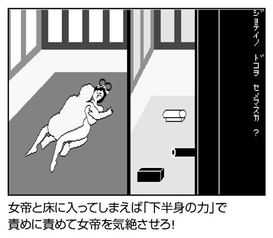
包丁に電気に爆弾に水責め！
エニックスの「第一回ゲーム・ホビープログラムコンテスト」優秀プログラム賞に輝いた作品、それが本作です。
作者の槙村ただし氏は、ダイナミックプロ所属のプロマンガ家ですが、『マリちゃん』以前に『野球拳』というソフトを作って九十九電機から発売し、テレビに紹介されるほどの大ヒット。
それを見たエニックスの人がスカウトに来て「野球拳と同じようなものを作ってくれ」 と頼んだそうです。
大人の世界ってそんなもんですね。
花の高校生マリちゃんを、横恋慕して魔の手を差し向ける男たちから守ることになってるものの、中味は注文通り『野球拳』です。
が、「まったく同じじゃあなあ」 （本人談）との配慮から、数々の新（珍）アイディアが盛り込まれています。
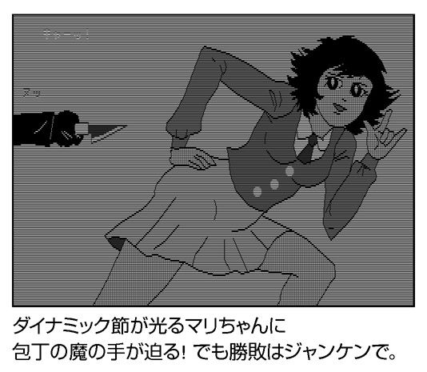
とりあえず、落ち着け。
最初のステージでは、マリちゃんに向かう魔の手は包丁を握った手 ......他の奴（主人公）と恋仲になるぐらいなら亡き者にしてしまえと。
それに対し、主人公の手にも包丁。 じゃんけんをして、敵が勝つとマリちゃんに、こちらが勝てば敵の腕に包丁が迫ってきます。
とりあえず、おたがいに落ち着け。
めでたく敵の手を刺すと、マリちゃんは１枚服を脱いでくれます。
しかし、また新手のじゃんけん使いが！
さらわれたマリちゃんは電線で縛られ、６個のスタンドがすべて点灯すると感電死してしまいます。
マリちゃんは、何か恨みでも買ってるんでしょうか？
そして「ゲームステージ３」の始まり。マリちゃんはダイナマイトに縛り付けられ、主人公は導火線についた火を追いかけて消さないといけません。いきなりリアルタイム方式になり、ぼ～っと画面を見ていると爆発！
次のゲームステージである４は水牢に閉じこめられ、やはり溺れる前にホースを取り除けと。
最後はプレイヤーとマリちゃんが対決し、残り１枚を取る瞬間......槙村先生、早くエラーを修正してください！ （画面参照）
（Ｔ）


少女と遊ぼう！ただし死亡遊戯！
今日のスクウェア・エニックスを築き上げた２大作品というと、旧エニックスの『マリちゃん危機一髪』と、この『ロリータ・シンドローム』であることはトリビアどころか一般常識です。
作者の望月かつみ先生はプロのマンガ家ですが、当時はやたらパンツが出ることで有名な学習マンガを連載しておられました。が、本作が作者名（本名）付きで『週刊少年ジャンプ』に紹介されたせいで、ロリコンゲームの開発が編集部にバレたとか。
こちらは「メゾンロリータ」。１号室から５号室まで可愛い少女が君の来るのを待っています。
さあ、少女の部屋に行って少女と遊ぼう！
筆者が現代社会に対してケンカを売ってるんじゃないです、望月先生からのメッセージなんです。
さて、お招きにあずかった１号室に入ると、さっそく少女が台の上に縛られていました。10 個のカギの中から５回以内に正しいカギを選ばないと、上から電動ノコギリが下りてきて土手っ腹を切断......いきなり遊びじゃねえです！

ひん死の少女と注射プレイ！
お次に待つ２番目の部屋では、サーカスのナイフ投げ。
どうしてもムチや木馬やローソクなどのラブ＆ ピースな遊びはできないんですか。
気を取り直して、ナイフを上手く投げると少女の服のつなぎ目が切れて、ブラジャーやスカートが重力に負けて１枚ずつ下に落ちていきます。しかし、10 本のうち１～２本は曲がったナイフが混じっていて、これを選んで投げれば少女に刺さって血がブシュー！
望月先生、普通のプレイヤーは梶原一騎の『愛と誠』のようなバイオレンスと命のやり取りの果てにある極限の愛を求めてやしないと思います。
さらに３番目の部屋に行くと、少女がベッドの上に横たわっています。据え膳、ロックオン！ ところが、女の子は死にかけです。
画面の上にはＡ、Ｂ、Ｃと３種類の薬が用意されてますが、それぞれ赤、緑、黄の毒々しい色をしていて、どう見ても致死性がありそう。
このうち正しい薬ひとつを、「ムネ、オナカ、アソコ」の３ヵ所から正しい場所を選んで注射しろと......『ＥＲ緊急救命室』みたいな一刻一秒を争う治療行為よりも、愚息をお注射できる「お医者さんごっこ」をやらせてよ！
そして４号室。今回は少女は死にませんが、７回連続してジャンケンに勝つと脱衣して生まれたままの姿に。
逆に１回でも負けるとぜんぶ服を着てやり直し。
７回も連チャンで勝てるのはエスパー清田君だけ!!
とはいえ、お腹がぷっくりと出たリアル幼児の体型を見て「脱がせたい」とは思えない僕の心は、汚れちまった哀しみに打ちひしがれてます（ウソ）。
（Ｔ）
人工無能少女とトーク！
日本で僕らがマイコンに「ラムちゃん」と名付けていた頃、アメリカでも「マリリン」など人の名前をマイコンに付けて呼ぶのはなぜか、と分析する本が出ていました。つまり、夜中にディスプレイに向かってぶつぶつ語りかけるのは正常なこと、人はコンピュータと恋するために生まれてきた のです。
しかし、オクテなコンピュータはこちらの熱い想いに応えてくれません。ならば、と人と似た思考方式を与え、日常の言葉で会話を交わせるようにしたプログラムを「人工知能」といいます。ＳＦ作家、星新一の作品にも、美人ロボットが青年と恋を語らう『ボッコちゃん』という短編がありました。「きれいな服だね」「きれいな服でしょ」「殺してやろうか」「殺してちょうだい」「（毒薬を）飲むかい」「飲むわ」。こんな風に、オウム返しをして語尾を変化させるだけの頭カラッポのやつは「人工無能」 と呼ばれます。ちなみに、青年はひとりさびしく死亡。
この『ＥＭＭＹ』シリーズは、「人工無能」に限りなく（99 ・05 ％ ぐらい）近い人工知能ゲームです。一応、女の子と親密度を上げて服を脱がせるというゲームらしい本筋はありますが、豊かな話題を提供するのはぜんぶプレイヤーであるあなた。ヒロインのＥＭＭＹ（エミー）はモノをからっきし知らないので、がんがん単語を入力しないと会話が進みません。
全身全霊をかけて愛する（つもりの）エミーの容姿は、ＰＣ‐８００１のほこる１６０×１００ドットのモノクロＣＧ ──プレステ（３２０×２４０）的にいうとジャギーどころじゃないジャギジャギで、ピーチ姫にモザイクをかけた様な色っぽさです。
「ハジメマシテ タネ キヨシサン ワタシハ エミーヨ」
バカにしてすいません、不覚にも１６０×１００のドット絵に萌えてしまいました。 開発を担当した工画堂のグラフィック力は侮っちゃいけません。美少女『フロントミッション』こと『パワードール』（こちらの方が先輩だけど）以前でも破壊力バツグン。
これ「ドッツ」で商品化されませんかね。『メトロイド』のサムスと並べた「脱衣ドッツ」として。
さて、いよいよ言葉を交わしましょう。
「パンティ キボンヌ 」
「ヘー キボンヌッテ シッテルノォ？ ワタシハ ワカラナイワヨ」
すごいドット美少女のアタマの中味はやっぱり「人工無能」でした。しかし、エミーはこう見えても悪女だったりします。オウム返しのテキトーな会話をしておいて、「オナジ コトバッカ、ミミ ニ タコガデキチャッタ」とダメ出し。またうっかり同じ単語を入力したら「オンナノコト ハナシヲ スルニハ ベンキョウブソクヨ」→「バイバイ」
ぼくを救ってくれなかったエミー！
続編の『II 』ではパツキンに
それから数ヵ月も置かずに発売されたのが、続編の『ＥＭＭＹII 』。上位機種のＰＣ‐８００１に移行して６４０×２００ドットに８色のカラーが付き、エミーも金髪の美少女にリニューアルされました。というか別人です、俺のエミーをどこへやった！ 返せ！
原画の人は交替したとはいえ、上手いっちゃ上手いんですが、ほのかな味わいは消えました。人工無能も少し賢くなったものの、特定の四文字を入れると嫌われてしまうので面白みに欠けます。せめてエロゲーとして、自覚を持って！ 後にＭＳＸ２版の『ＥＭＭＹ』で実写を採用した開発者は「わかっちゃいない」 と思います。
（Ｔ）
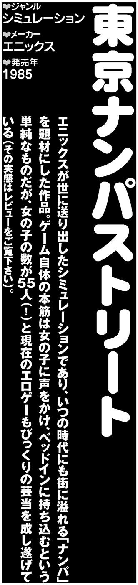
喫茶店！海！ 喫茶店！海！
街に出て異性と出会い、関係を深める。「ボーイ・ミーツ・ガール」の楽しさを凝縮したのがナンパ。エロゲーの世界では繰り返し題材とされてきた行為です。
本作の内容は実にシンプル。
「街に出て女の子に声をかけ、話をする」......というわけで街に出ました。目の前にはカワイイ女の子。
さあ、いい仲になりましょう。
「ねえカノジョ、喫茶店行かない？」
さすがに断られました。喫茶店ではさすがにカビが生えていましたか。
「ねえカノジョ、海に行かない？」
スタスタと歩く彼女、こちらに振り向きさえしてくれません。どうしようかと悩む内に、彼女は画面外へと歩み去ってしまいました。ナンパ失敗です。
裏切られた！ 騙された！ 街に出たのが間違いだった！ 所詮、自分のようなオタクには誰も振り向いてはくれないのです！
「上手く行くはずのゲームでサックリと振られる」くらいはエロゲーとしてよくある出来事ですが、いくらなんでもとりつく島がなさすぎますし、いくらなんでもリアルすぎます。
しかし、覚悟していたゲームオーバーの画面は出てきません。どうやらまだナンパを続けていてもいいようです。
声をかけて失敗しただけですから、所持金も減っていません。充分再起は可能です。場所を変えれば、別の女の子が通りがかります。声をかけますが、またも失敗。また場所を変え、失敗。
......こんなことを繰り返して数日。いい加減ヤケのひとつも起こしたくなりました。うつろな目で選択肢のキーを押しっぱなし にし、適当に切り替えつつ声をかけます。そうするとどうでしょう。誘いの言葉をかける効率が飛躍的にアップしたではありませんか。
喫茶店！ 喫茶店！ 海！ 喫茶店！ 海！ 海！ 最初は無関心だった彼女がこちらの言葉に反応するようになり......ついにナンパ成功。
勝利の鍵は意外なところにありました。声をかける回数がキーであり、内容は（割と）どうでも良かったのです。
「自分＝下僕」
ここで、本作における男の地位がハッキリしました。上下で言うなら「下」。本作の男は、女の子を満足させるために奉仕するという存在なのです。
これさえわかれば問題ありません。基本はマシンガントーク。話題を切り替え切り替え、とりあえず女の子を退屈させないことに務めます。
本作は『オホーツクに消ゆ』と同様のコマンド選択式（制作協力には堀井雄二の名が）を採用。手入力とは比べものにならない速度でコマンドを実行できるため、コマンド選択式ならではのスピーディなゲーム展開が可能となっています。
また、女の子との会話がスイングしだす様はなかなかの臨場感。口八丁の出たとこ勝負というナンパの特性がよく表現されているのです。
「自分＝下僕」という立ち位置がわかってからはさくさくとゲームが進み、とうとうベッドイン。やりました。ゴールです。
しかし、これはひとつの到達点に過ぎません。本作には攻略対象となる女の子が55 人 （！）存在します。
外見となるグラフィックこそ５タイプしかないのですが、中身となる人格は「性格」「タイプ」などの要素を組み合わせて作られており、バラエティ豊かな55 タイプが存在。しかも、毎回どの女の子が登場するかはランダムとなっており、ゲームを立ち上げる度に「ボーイ・ミーツ・ガール」の美味しいところを楽しめるという仕掛けになっているのです。


金を払えずにボコられる
いまも昔もグラフィックの枚数＝ゲームの価値となる中で、グラフィックを使い回しても女の子の数を増やすという決断は並大抵のセンスではありません。また、女の子の中には絶対に攻略不可能の補導員や、金を請求してくるプロ（現代風に言うなら援交）、逆に金をくれるオカマ が存在し、プレイに華を添えてくれます。
声をかけたが相手にもされなかった。気合いを入れて口説いたつもりがあっさりと逃げられた。妙にトントン拍子に話が進むと思ったらオカマだった。プロに引っかかってしまい、金を払えずにボコられた。責任を取って結婚させられた（80 年代エロゲーなので結婚はバッドエンド扱い ）。
ひとつひとつの失敗がリアルなだけに、身につまされると同時に心に残ります。
ナンパも会話も質より量。上手く行かなくて当たり前。出会いだけでなく様々なトラブルも楽しむ、それこそが本作におけるナンパ道であり、男の道。踏まれても蹴られてもめげずに立ち上がる。80 年代はナンパ男ですらタフであった時代なのです。
そうした世相を反映した本作は美少女ゲームであると同時に男ゲーム。
つまり男の哀愁を楽しむゲーム です。
（Ｙ）
「まり おかす」「ちち もむ」こそロマン！
「美少女ゲーム」というジャンルを打ち立てた元祖が、この『天使たちの午後』です。
いち早くスキャナを使って原画を取り込むやり方を発明し、従来のサランラップに描いた原画をテレビに貼り付けて座標を拾っていたゲーム と差を付けたハイテク製品だったりもします。
さあ、あなたにおくるロマンアドベンチャー（タイトルより）の始まりです！
高校の校庭からテニスコートに行くと、憧れの由美子がテニス部の部活をエンジョイ中。
「あなたの目的はこの由美子をなんとか口説き落とすことです」
なんで上からモノを言われてるんでしょうか。悪友の石井を軽くスルーして、テニス部１年の真理とバッタリ。「はなす」×２回して情報を聞いた後は、「まり おかす」 。スタートから５歩ぐらい進んだばかりなのにロマンがピンチ です。「ちち もむ」 。ロマンは砕け散りました。
拾ったメモを自宅のマイコンで分析した主人公は、由美子を攻略する重大なヒントを入手します。
「カノジョハ アルオトコトトクベツナ カンケイヲ モッテイル」
......処女じゃないんだ！ 絶望した！
が、主人公はしれっと２階に上がり、妹の部屋へと侵入。そしてやることは「ふく ぬがす」。つ、強えぜアンタ......ここで「いもうと おかす」 の誘惑に負けるとゲームオーバーになるので注意です。
「おかす」（×２）
その後、主人公はハイキング兼ダブルデートに誘われて、石井に女友達のようこを紹介されます。
「へへへ、おまえ、あの子気にいったか？」とそそのかされて森に行くと雨に降られ、逃げ込んだ洞窟の中であいさつ代わりに「ようこ おかす」 。その寝物語で、石井のカノジョである「直子」が由美子の秘密を握っていると知ると、やることは決まってます。
さあ皆さん、ごいっしょに。
「なおこ おかす」 （×２）
手を出した女の子から別のオンナの情報を聞き出すわらしべ性豪の主人公ですが、ちんちんに自白剤でも入ってるんでしょうか。
しかし、「へえ、あなたも由美子が好きなの......フフフ」とイミのある笑いをしてたのが引っかかるところ。
ようやく突き止めた由美子の居場所、そこは左にはトルコ（当時）、右にスナックとディスコがあるディープ繁華街。ひとり酒をあおっていた（注：高校生）由美子に、教師との深い仲をネタにゆすり、ホテルで「ゆみこ おかす」 に成功。つ、ついにやりました！ あなたは目的を果たしました！
しかし、先に由美子をゆすっていた奴が......ようこの意味深なセリフの伏線通りに、石井が先客でした。
悪友と穴兄弟 になることこそロマン！
（Ｔ）
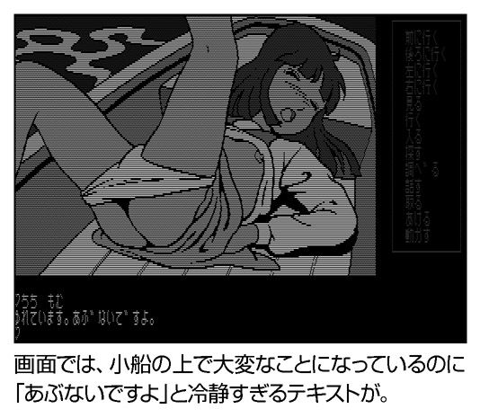
国会で取り上げられた発禁ソフト
チカンは犯罪ですが、強姦はもーっと犯罪です。そんな危険物をテーマにしたらどんな騒ぎが起こるか、いい大人だったら想像が付きそうなもの。が、あろうことか刑法１７７条の「強姦罪」をタイトルにして、青い欲望より日本政府を挑発 してしまい、国会で取り上げられて発売禁止にされたとの噂が立った伝説のエロゲーがありました。
この問題作『１７７』を、社内の誰もが止めもしないで世に出した剛気なブランドの名はマカダミアソフト。表の顔をｄＢソフトといい、『フラッピー』や『うっでぃぽこ』などのファミコンソフトやワープロソフトも出していた、北海道を代表する大手ソフトメーカーでもあります。
そこに入社した異才・Ｓさん（仮名）はマカダミアソフトの全作品（２本だけですが）を手掛けて、理解しにくい愛情を注ぎ込みました。ちなみにマカダミアソフトの名前は「マカダミアナッツの形から 」だそうで、Ｓさんかなり最悪です。
さて『１７７』の内容は、全２ステージのアクションゲーム。最初のステージでは、右にいるプレイヤーが、左にいる女性を追っかけ、彼女が家に帰る前に４枚の服をはぎ取って押し倒せば１面クリア。また、主人公の設定は「大内秀雄26 才、自動車工場に勤務（８年目）。楽しみは夜中のコンビニでマンガの本を立ち読みすること 」
......いやな感じに具体的すぎます。
一直線の走りっこですぐに押し倒せそうに思えますが、標的の斉藤琴絵さん（26 才）はとても足が速く、主人公が追っかけてもぐんぐん加速して引き離されるだけ。
そのうえ、秀雄君は犬やスカンク、つけもの石などに妨害され、みどり亀のミッチェルにつまずくと即死する やっかいさ。だが、困難が多いほど、愛も燃え上がる！
攻略のコツは、まず空中にある標識を逃さずジャンプして取り、琴絵が道に迷って家にたどり着くのを防ぐ。第二に、爆弾を投げて妨害キャラを壊し、つまずかずに琴絵との距離をキープすること。後ろから動物が走ってきたのをかわし、琴絵がそれを避けて後ろにジャンプするのを待って.........ブラウスを取ったぁ！
結果、４枚の服を取りました。
俺はやり遂げました！ 嗚呼、夢にまで見た第２ステージが！腰をグラインドさせて琴絵を感じさせると、花びらが開いて雫がにじんできます。失敗すると刑法１７７条の条文が表示されますが、成功すると「合意の上で」ということでハッピーエンド！ やっぱり発売禁止にされても文句は言えません。
冷凍マグロとの戦い
ちなみに『１７７』よりも数ヵ月前にロールアウトした、マカダミアソフト＝Ｓさんの処女作が『マカダム』です。
ヌード姿の美女たちを感じさせるアクションゲームなんですが、５つの道具を使ってもほとんど反応してくれません。ムチでお尻をピシリと叩こうが、舌で乳首を転がそうが冷凍マグロ 。厳しい時間制限の中で、一定のエクスタシーに達すると「MORE HARD」と表示され、必死にリターンキーを連打。
全７ステージもありますけど、先にキーボードか指がイッてしまいそう です。
この『マカダム』と『１７７』の２本でマカダミアソフトは打ち止めとなりましたが、幻の３本目があったとのこと。なんでも「和服の女性がお尻をぺろっとめくったところを竹の棒で突く 」という『インベーダー』みたいなゲームだったらしく、一応は竹の先を丸くしてソフトに......Ｓさん、そういう問題じゃない と思います。
（Ｔ）
アダルトＲＰＧの記念碑
『カオスエンジェルズ』が発売された１９８８年はアダルトＲＰＧにとって記念すべき年です。
『カオスエンジェルズ』が「名作」と言われているのは、アダルト要素だけでなくゲームとしても遊べること。
この作品と１９８９年の『ドラゴンナイト』で、アダルトＲＰＧは「遊べるジャンル」としての評価を手にしたといってもいいでしょう。
本作は、モンスター型女の子の登場する３ＤＲＰＧ。「迷路を歩いていると敵と遭遇する」というフォーマット自体は、ほかのＲＰＧと同じながらも、本作では遠くにいる敵の姿を確認することができます。
体力が尽きかけているところに、マズいモンスターの姿を確認した。通路の向こうにお気に入りのモンスターがいる。このドキドキ感 こそが『カオスエンジェルズ』の魅力のひとつといえるでしょう。
このシステムは戦闘のバリエーションにも貢献しています。遠くに敵を確認した状態からそのまま歩けば接近戦を挑めますし、特殊能力を使えば遠距離から攻撃することもできます。
敵の中には「魔法使い」のように遠距離から攻撃してくる敵や「透明人間」のように姿が見えないため遠くから確認できない敵もおり、一筋縄ではいきません。
シンプルながら臨場感とスリルを両立させたシステムといえるでしょう。
戦闘時に女の子が見せる多彩な表情も本作の特徴のひとつ。女の子ごとに結構な枚数の絵が用意されており、戦闘時もくるくるとポーズが変化します。相手が繁殖力旺盛な豚人間や呪いで動く死体といったガチの化け物であればポーズが変化してもあまり嬉しくないのですが、本作のモンスターは（もと）女の子なので万々歳。か弱げな少女が獣の姿に変身したり、戦っているうちにどんどん分裂して画面を埋め尽くしたり 、宝箱が分解・変形して『聖闘士星矢』の聖衣クロスのように女の子の身体に装着されるという大仕掛けも登場。パソコンでのアニメーションが難しかった時代ながらも、躍動感溢れる戦闘を実現しています。
画像面での演出に加え、戦闘時には女の子ごとのテーマ曲が流れるのも見所。テーマ曲のおかげで、戦闘シーンも「殺伐たるＲＰＧ」というよりも「魔法少女もの」的な雰囲気になっているのが面白いところで、音楽の力というものを再認識させられます。
攻略性とテキストの冥利
そして、本作を名作たらしめているのは、その攻略性の高さです。女の子を倒して、Ｈをすることにより吸い取れる特殊能力が必要になることもあれば、マップの構造がキーになることもあります。
ガチガチの鎧を着込んでいるおかげで打撃の通じない重戦士をいかに倒すか？（答え：魔法使いの特殊能力で遠隔攻撃した後、音響の魔法「ＳＯＮＩＣ」でとどめ）
確実にこちらの首をはねてくる忍者の致死の攻撃を封じる方法とは？（答え：「バブリースライム」の特殊能力で分身し、そちらを身代わりにする）
不死の「バンパイア」にとどめを刺すにはどうすればよいのか？（答え：階段が十字架型に並んでいるので、そこへ誘導してから倒す）
どうやっても上のフロアに行くための階段が見つからない。ここで冒険をあきらめるしかないのか？（答え：マッピングすると、壁のブロックが「←ココ」 という形に並んでおり、階段の位置を指し示している）
女の子の特殊能力は、謎解きの鍵となるだけでなく、戦闘にも有効。「魔法使い」や「リッチ」の特殊能力なら遠距離攻撃が可能となりますし、「ワーベア」「ワータイガー」「ワーウルフ」の体力回復はいざというときに役立ちます。
また、「バブリースライム」の分裂能力があれば戦闘が大幅に楽になります。本作はアダルト作品であると同時に、しっかりとしたゲームなのです。
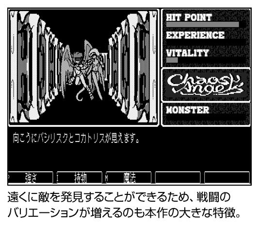
落書きというモチベーション
こうした攻略性の高さをウィットに富んだテキストが彩ります。本作は主人公の一人旅で、会話が成立する相手もほとんどいないのですが、「賢者ハーンが塔の壁に大量の落書き を残しており、これを読むことで「拾ったはずの品物や倒したはずのモンスターがいつの間にか復活する塔」の謎や滅んだ王国の秘められた歴史が明らかになっていきます（近年のノベルゲームでは「ループもの」が流行ですが、もしかすると元祖はこの作品なのかも知れません）。
落書きはヒントのほかにもジョークや無駄口、ゲームの中では直接描かれない世界の解説や魔法理論など多岐にわたっており、その軽妙洒脱な語り口は、プレイヤーに「先に進んで面白い落書きを読むこと」という新たなモチベーションを加えます。
可愛い女の子に引き込まれ、謎解きで唸り、落書きに笑い、ラストでほろりと涙する（主人公がモラトリアム系ではなく一人前の男である辺りも素敵）。
『カオスエンジェルズ』は喜怒哀楽のすべてが隙なく詰まっているのです。
（Ｙ）
オレだ いかせ男だ
80 ～90 年代のエロゲーは、カオスの時代であると同時にヒーローの時代 でした。この時代のエロゲーには、年に何人か「怪人」とでもいうべきヒーローが登場しました。
『韋駄天 いかせ男』もエロゲーヒーローが登場する作品です。本作の主人公は「いかせ男」。
「オレだ いかせ男だ。 」の雄叫びと共に登場する謎の男です。
幼い頃、狼に育てられた彼は、ブラジルの農場で働いていたところを韓国人プロレスラーにスカウトされ来日。いかせ男となったのです。いかせ男と聞くとテクニックに優れたＡＶ男優の様な存在が想像されますが、彼の武器は「言葉」。ターゲットとなった女性に、いやらしい言葉を囁きその気にさせるのです。
本作のインターフェースは数字によるコマンド選択式。「○○が」「○○を」「○○した」という３つのパーツを組み合わせて文を作る「５Ｗ１Ｈ」という遊びに近い型式です。
それぞれのパーツは00 ～99 までの各１００種類。
１００種類×１００種類×１００種類ですから、１００万通り の文章が作れるというわけです。１００万通りのボキャブラリーで囁かれるいやらしい言葉！ 実に雄大なスケールですが、３００種類の単語がすべていやらしいというわけではありません。
作中には、「男の白い液体」「しゃぶる」「やりまくる」といった淫語ばかりではなく、「山本小鉄の禿頭」 「トンガ力士」「サラリーマンのゲロで」「耳垂れ」といったコアな単語や、「灯台」「ブルース」「ピストル」という演歌かハードボイルドの世界を思わせる単語も登場。
いかせ男のボキャブラリーの豊富さを見せつけてくれます。
女性を発情させるのに「ブルース」や「山本小鉄の禿頭」といった単語がどう作用するかはわからないのですが、そこはいかせ男マジックというやつに違いないのです。
いやらしさを判定？
さて、プレイです。いやらしい単語でバリバリいかせまくりましょう。
......色々と工夫はしてみるのですが、女の子の感度を示すゲージはなかなか上がってきません。朦朧とした状態でランダムに数字を入力していると、様々な組み合わせの文章が生まれてきます。
「地位と名誉と金を 京都で調節する」
「ビデオを 倉の中で 覚えさせる」
「諦めを 全日マットの上で考えさせる」
「熱いレモンティーを ドリフに 浴びせかける」
「トンガ力士を うんこに 擦り込む」
「太陽を オマエの理性に 連れていく」
「クスリを クスリで えぐる」
「今お前の考えていることをホモ雑誌で 叩く」
「海を 筋肉で めちゃくちゃにする」
......すごい組み合わせができるたびに脳が一瞬覚醒するのですが、これではいくらなんでも漠然としすぎています。
自然とプレイスタイルは「単語を指定する数字をひとつずつずらしていく」総当たりに。ひたすら入力していると、感度ゲージの上がり方がやけに規則的なことに気付きます。１、２、３、上がった。１、２、３、上がった。
......もしかして、このシステムは組み合わせのいやらしさを判定しているのではなく 、コマンド入力の回数でゲージが上がっていくだけなのでしょうか。
１、２、３......やっぱりそうです。４回の入力ごとにゲージが上昇しているではありませんか。なんだか裏切られた気分ですが、心はだいぶ楽になりました。
とはいえ、１回当たりのゲージ増加量は微々たるもの。１００％ にするまではものすごい回数を入力しなければならないことになります。もっと楽ができないでしょうか。
まさか、コマンド入力回数でなくて、単語を指定する数字だけ見ているなんてことはないですよね？
試しに４を足してみると......ゲージ上昇。さらに４を足してみると......ゲージ上昇。
なんてことでしょう。
夢は破れました。思えば「いやらしさを判定する」なんてことが、８ビットのＰＣにできるわけはありません。しかし、あのときは信じていたの です。きっと、単語の組み合わせのいやらしさを判定していて、その基準は女の子によって違うのだ、と。
そして筆者は最小の労力で女性をいかせることができるようになりました。
エレベーターで雪隠詰め
本作のジャンルは「テキストアドベンチャーナンパゲーム」（パッケージ裏より）。テキストも意味がなければナンパでもありませんでした 。
彼氏に電話をかけようとしているところに乱入したり、エレベーターで雪隠詰めにしたり、満員電車で密着することのどこが「ナンパ」なのでしょう。
しかし、これはあまりに狭い見方です。
考えてみれば、１００万通りの組み合わせを自由に試せるのだから、これほど豪華なソフトもありません。
奇天烈な組み合わせの狂った文章が、ＰＣ‐８８のフォントで表示されていると言うことの喜び！
この認識に至ってはじめて、筆者は真の「いかせ男」になれたのかも知れません。
（Ｙ）
そんな中学生はいない！
『きゃんきゃんバニー』シリーズというと、「きゃる～ん☆」がハートをわしづかみしたスワティ様が思い出されます。が、この初代の『きゃんきゃんバニー』にはどこにも出てきません。だいたい「バニー」といってるのに、なんでスワティ＝弁天様なのさ？ 初代からのナビゲータ（物語のガイド役）である亜理子が、うさぎの耳を生やしたバニーガールだった からです。この１作目から、主人公はカノジョいない歴＝年齢のもてない男の子です。そこに亜理子が鏡の国からやってきて、「わかってるわ。彼女がたくさんほしいんでしょ」......いやひとりでいいから！ そんな悲鳴をさらりとかわして、名前を書いた女の子とお友達になれる手帳を......ラブノート未満のフレンドノート をゲット。
この手帳には５人の名前がすでに書き込まれています。下は中学生から上は24 才ＯＬまで、主人公はストライクゾーンが広すぎます。この５人の家を訪問して、口説き落としてＬＯＶＥ（好感度）をアップさせ、やることをやるのが目的です。コスプレ風俗のような潔い割り切りかた ですね！
とりあえず、まずは唯ちゃん（15 才）にアタック。選択肢から話題を選んでＬＯＶＥを上げていくんですが、映画の話で「まだパトレイバーやってるかしら」 →中の人は男だろ！「駿さんの作品が好き！」 →その息子は17 年後にはねえ～とエロ以外の方向に甘酸っぱい気分 になってきましたよ。
（Ｔ）
あやよぴょん
『はっちゃけあやよさん』といえばＰＣ‐８８からＰＣ‐９８の時代をある意味で代表するタイトルです。
異常なノリで知られるこのシリーズですが、その狂気は最初から開花していたわけではありません。第一作目となる『はっちゃけあやよさん」は、実に大人しいもの。
「何故か選択肢がひとつしかない」「何故か値段が安い（３８００円）」と謎満載ですが、全体的なノリは大人しいもの。
続く第二作目は『はっちゃけあやよさん２ いけないホリデイ』。あやよさんの友達であるトモコさんが初登場。「やらしい映画館」「やらしい靴屋」「やらしい本屋」（原文ママ）でやられまくります。こちらも基本的にはデジコミ風味ですが、前作で選択肢が少ないと叩かれたのか、「よくわからないクイズに正解しないとゲームオーバー」「特定の順番で選択肢を選ばないと進まない」と難易度アップ。
後に発売された移植版では絵柄がまったく違った今風のものになっており、もはや初期あやよさんの面影はどこにもありません 。
３作目は『はっちゃけあやよさん３ わたし、逝っちゃったんです。』。この作品からあやよさんの三人称が「あやよぴょん」に。バナナの皮で滑って転んで死んでしまったあやよぴょんとトモコさんが千手観音や地獄の羅卒にやられまくる というストーリーで、あやよぴょんの「馬鹿」、トモコさんの「凶暴」というキャラクターが確率。
シリーズとしてはやっと暖機運転が済んだところでしょうか。
そして、４作目となる『はっちゃけあやよさん４ セクシーオリンピック』。あやよぴょんたちが謎の性技大会「セクシーオリンピック」に出場するという内容なのですが、当時大流行していた『ストリートファイターII 』の「春麗」が、そのままのキャラデザインとそのままの名前で登場 。とんでもない暴挙をかましてプレイヤーの度肝を抜きます。顔はそのままで名前を変えるとか、そういう大人の配慮はハード社にはなかった模様（移動の場面で登場する世界地図まで『ストリートファイターII 』風になっており、当時の熱狂ぶりが伝わってきます）。
試合内容もメチャクチャ（褒め言葉）で、「テトリス」と絶叫するロシアのボルシチ選手、尻の穴にロープを入れてバンジージャンプという奇抜な試合方法で挑むアフリカのダンコン選手、Ｘ６８０００ユーザーのトラウマをえぐるネタ満載のエジプトのフェラオ選手など珍奇なキャラクターたちが続々登場。中には「本人たっての希望」でユーザーのＴ君（ゲームの中では容赦なく本名）も顔写真付きで登場 （Ｔ君はいま、何をしておられるんでしょうか？）。
もう笑うしかありません。
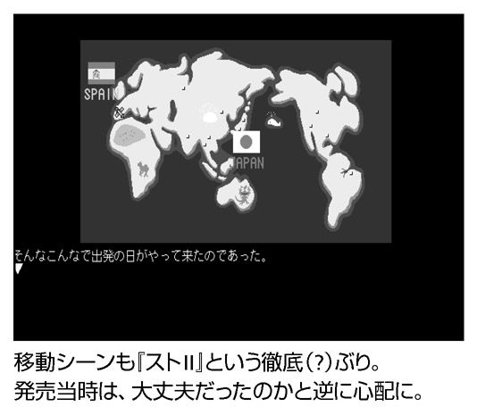
ひょんな事故で地球を破壊!!
続く第五作は最終作となる『はっちゃけあやよさん５ ピカピカの小惑星』。前作ラストで手に入れた宇宙船で宇宙に旅立ったあやよぴょんたちは、あやよぴょんの父を名乗る「宇宙大王」に捕まり、またもＳＥＸ勝負をする羽目に。
この勝負、全体的に少年マンガのノリで進行するため、ちっともエロゲーらしくありません。
今回は特にパロディの数が多く、『男塾』や『ジョジョの奇妙な冒険』といった基本（？）から、『リングにかけろ』『ゲームセンターあらし』『伝説巨神イデオン』「新世紀エヴァンゲリオン』『あしたのジョー』『仮面ライダー』『みつばちハッチ』『ジャイアントロボ』など枚挙に暇がありません。
「さらば越塚智子......ケンカチャンピオン......！」 なんてグラフィックが出るエロゲーは前にも後にもこの作品のみではないでしょうか。選択肢もラスト直前に１個が出現するのみと原点に近い状態に。当時のエロゲーがことごとく「ゲーム」を目指す中、ゲーム性を完全に廃した姿勢は潔いとしか言いようがありません。
４作目の『セクシーオリンピック』からの伝統である敵キャラの使い捨て もさらに凄まじい状態になっています。
リトルグレイや触手宇宙人、器具型の宇宙人といった多数のキャラをバリバリ使い捨てていく様は爽快としかいいようがありません（何故か１名のみ、さして印象も強くない敵キャラが前作から続投しているのが不可解）。「宇宙大王」を倒したあやよぴょんたちは、ひょんな事故から地球を破壊 。タイムマシンで時空の何処かへと旅立つ......と続編を作る気満々のラストなのですが、２００６年に至っても続編の噂は聞こえてきません。
思えば、ギャグ路線のエロゲーというのは、早すぎたのではないでしょうか。ストーリー重視が叫ばれ、様々なタイプのストーリーが展開する現在のエロゲー界ならば、『あやよさん』のノリが真に理解されるのではないでしょうか。
発売後12 年という区切りの良い時期でもありますし、復活するならいま です。ウインドウズ機でこれまで以上に進化したアニメと切れのよいギャグを引っさげて、彗星のように我々の前に現れてくれることを願って止みません。
（Ｙ）
もっとお色気が欲しい！
「魔浄理子（マジョリコ）」は普通の女子高生。親友である「早湾沙（サワンサ）」の母であるマジョリータ先生について魔法の修行中。
マジョリコとサワンサは、さわってはいけないと言いつかっていた封印の布をどけてしまい、イヤラシーザー の世界を解放してしまいます。イヤラシーザーは封印のお返しにサワンサを「お嫁に行けない身体」にしてしまうというのです。マジョリコは「淫靡界（インビゾーン）」へとサワンサを助けに行くのでした......。
という、本作は横視点のステージ探索型アクションゲーム。主人公のマジョリコを操り、ステージのボスを倒しに行きます。
本作最大の特徴は、敵にやられると服を引っぺがされること。敵に接触するたびに上着が剥げ、スリップ（？）が剥げ、ブラジャーが剥げ......と、どんどん軽装に。
パンツ１枚の時点で敵に接触すると全裸になってしまいゲームオーバー。
全裸で敵兵をバリバリとなぎ倒す「『イノセンス』終盤で義体にダウンロードした草薙素子」の例を引きたいところですが、20 年ほど前のゲームなので仕方ありません。
服が剥げていく様こそが本作のお色気である......はずなのですが、身も蓋もないことを言ってしまえば、本作のキャラクターは小さすぎる のです。
ステージ探索型のアクションゲームでゲーム性を保つにはキャラを小さくして視点を広く取ることが必要。さらにプラットフォームがアクションゲームの苦手なＰＣ‐８８０１であることを考えるとこの大きさが妥当ではあるのですが、それでもちょっと小さすぎます。
せめてウインドウ枠にいるマジョリコ（デフォルメがいい方向に作用しており、２００６年の視点でもちょっと萌える逸材）が脱いでくれれば良かったのですが、絵を変化させるにはデータを読み込む必要があります。
もちろんＰＣ‐８８０１のメモリは少なく、これを実現するにはどこかからデータを持ってこなくてはいけないわけで、そうすると敵にやられたり回復したりするたびにデータ読み込みのディスクアクセスが発生。プレイアビリティを損なうことになります。
あらゆる条件から現在の仕様こそが最善であるとはわかるのですが、それでも、もっとお色気が欲しい と声を大にして叫びたいところです。
大砲の形が淫靡
敵も「イヤラシイ目をしたサル」や「舌を出したトンボ（？）」「舌を出して走り回る犬」など、なかなかの淫靡ぶり。
彼らに捕まったらどのような目に遭わされるのでしょうか。
どきどきしながら接触しても、マジョリコは吹っ飛ばされるのみ 。マジョリコがどうなるかは脳内で補完するしかないのです。
本作は横方向へはスクロール、縦方向へは画面が切り替わることで展開していくのですが、画面上部に敵の出現地点があった場合、「敵に接触→吹っ飛んで画面上に→画面切り替わる→吹っ飛びが終了して落下→画面切り替わる→敵がいる→敵に接触」というループが発生することもあり、こうなると妄想がどうとか呑気なことも言っていられません。
減った耐久力（というか服）や必要なアイテムは自力で買う必要があります。
マジョリータ先生はオープニングにおいて、魔法で色々なアイテムを送り込むと言いますが、彼女が送り込んでくれたと思しき宝箱はあまり数も多くありません。
本作の基本は自給自足。モンスターを魔法で倒してコインを奪い、ステージ中に点在するショップでアイテムを買いそろえます。
新しい魔法の習得、アイテムの購入、耐久力の回復、情報収集、とかくこのゲームは金が命 ですので、コインはいくらあっても足りません。
インビゾーンの物価を甘く見たマジョリータ先生を恨みつつ、敵がコインに見えるまで頑張って下さい。
実は本作に置いてはショップこそがエロの補給所。全裸にマント というガチの魔女や「アイテム・ショップＳＭ」 という身も蓋もない店名。「スイミン」「マッサージ」「シャワー」でそれぞれ異なるマジョリコのお色気ＣＧが表示されるホテルなどで思う存分乾きを満たして下さい。
このエロへの乾きの前には、ステージのＢＧＭが基本的に１曲であることや（ボス戦で曲が変わるのが救い）、ステージ中に配置された大砲の形が淫靡 であること（マジョリコが入るとすごい勢いで上に発射される）、同種の敵なのにコインを出すヤツと出さないヤツがいることなどは些細な問題に過ぎません。
『魔浄理子』のコンセプトを実現するには時代が早すぎた のです。
現在のＰＣなら大きなキャラのマジョリコが敵に接触するたびに淫靡なリアクションをし、はらりはらりと服が脱げていくという『魔浄理子』本来の姿を実現できるに違いありません。可及的速やかなリメイクを望みます。
（Ｙ）
ガイナックスの孝行娘
ガイナックスが手塩にかけた愛娘が『プリンセスメーカー』だとすれば、カラダを張って親を食わせた孝行娘 が『電脳学園』でしょう。
映画『王立宇宙軍』を制作した後に残った赤字とアニメーターを抱えていた岡田斗司夫さんたちが、当時の画力が弱かったＰＣゲームに目を付け、絵の上手さを武器に一儲けを企んだオリジン があったりします。
まあ、本職のアニメーターがグラフィックを描いたことが話題になりすぎて（具体的には〝ケ〟）、宮崎県から有害図書指定をプレゼント されましたが。
このシリーズの基本システムは、出されたクイズに対して「○」か「×」かを答える二択式。コマンドについては、「ＬＯＯＫ」でまわりの様子を見わたし、「ＴＡＬＫ」では近くの人に話しかけて情報を集め、「ＭＯＶＥ」を選ぶと行きたい場所を指定して移動します。今回取り上げる初代～『３』までのすべてのシリーズ共通のインターフェースであり、いずれもディスク４枚組で、１ラウンド25 問をクリアするごとに服を１枚脱ぎ、ハダカになるのは３人。たった半年の間に３本も出し（まくっ）たにしても、システムの見直しやデータを圧縮してＣＧを増やそうとか、改良する気がまったく見えないところがオタキングこと岡田さんらしい開き直り です。
さて、１作目の『電脳学園』は、主人公が３０００年の歴史を誇る「電脳学園」に特別受講生として入学。「五十年に一度、六千万人に一人」の幸運に恵まれた彼は、校内をうろついて、特別講師３人を見つけ出し、授業という名のクイズに回答し、正解率80 ％ 以上で合格という名の脱衣 を......理屈を考えるじゃない、感じるんだ。
出題されるクイズの内容は、ガイナックスの社風を反映してオタク寄りです。最初のほうは「ファミリースタジアムには、『ナムコスターズ』というチームが出ている」とヌルい問題が多く、手加減してるのかなと思ったのですが......３作通してゲーム問題はヌルく、なるほど「ゲームで一儲け派」 だとうなずけます。ともあれ、このジャンルが出題されたらわりと楽勝でラッキーです。
しかし、アニメや特撮方面ではガイナの嗜好に比例して、ガチでハードコア。
「ブルーノアのエンディングはユーミンが歌った」
う～ん。川崎麻世が主題歌を歌っていたけど......と悩む筆者は例外的プレイヤーでしょう。「オーガスの主人公、桂が初め乗っていた戦闘機はブロンコII である」って、リアルタイム視聴者でも外角スレスレ の選球が素敵です。
脱衣を担当する３人の講師は、赤井孝美画伯の描いた可愛い女の子ばかりなんですが、芹沢博子、万城目ユリ、神宮司静──それぞれ『ゴジラ』『ウルトラＱ』『海底軍艦』の主人公にちなんだ名前でして、オール特撮系 です。本作を楽しみたければ、元になった映画を見ないことをお勧めします。ハダカの前に男優の顔がちらついて困りもの ですから。
高速道路で脱衣クイズ！
次の２作目である『ハイウェイ・バスター』は、電脳学園を無事に卒業した主人公が、走行中の車にクイズを浴びせて事故らせる謎のライダー（ハイウェイバスター）を捕まえるため、再び電脳学園を訪れて、事件の手がかりを集めていきます。クイズのやり方は前のまんまですが、正解率がバイクのタコメーター風に表示され、ほんの少～しアドベンチャー形式がプラスされました。
犯行スタイルに合わせて、問題はほとんどがクルマの問題ばかり。道路交通法や知ってないと命に関わる「道路の常識」から出題されていて、運転免許を持った人ならさほど苦労はしないはず。
あいかわらず「グレートマジンガーのパイロット、剣鉄也のバイクには、ロケットパンチがある 」「ＴＶ『マッハバロン』と合体する車は『マッハトリガー』と呼ばれる」とか細かいネタも混じってますけど。
今回は、脱衣する３人の絵描きとして婦警＝新田真子、峠の女王＝明貴美加、ハイウェイバスター＝菊池通隆を起用......ちょっと、そこの鼻をほじってるアナタ！ 新田真子を「しんだまね」と読める『レモンピープル 』大好きっ子にとってはすごいサプライズ だったんですよ。菊池通隆の絵で『サイレント・メビウス』ネタが出題されるのもツボでした。
もう１人の娘も脱がせました
一応シリーズの区切りである３作目の『３』では、ガイナックスのもうひとりの娘である『トップをねらえ！』のヒロイン３人を脱衣させました。本編アニメは終盤に近づくにつれ、岡田さんのギャグ色が薄くなり「庵野秀明作品」に変貌しましたが、こっちの脱衣ゲーム版は間違いなく「岡田作品」 と言えると思います。
手っ取り早く言うと、電脳学園が対宇宙怪獣用超ド級戦艦エクセリヲン艦内に置きかわっただけ。主人公はクイズで勝って「努力のキー」や「根性のキー」を集めて、「グレートガンバスター」のパイロットを目指します。
その行く手に強敵として立ちはだかるのが、原作のユングと、お姉さまことアマノ・カズミ、そして最後にタカヤ・ノリコ。３人を負かすとやっぱり脱ぎますが、なぜ脱衣するのか、先鋒のふたりについて説明はハナっから放棄されています。
艦内でパイロットを脱がせまくる不審人物が、暴走した中枢コンピューター「OHAL‐9801」 と対決し、捕らわれたノリコを助けるシーンでは、辛うじて服を破かれる理由付けがありますが......最終段階はどう見ても凌辱です、アニメの感動をぶち壊してくれてありがとうございました。
（Ｔ）
エロゲー第３の都市・北海道
「なぜ、北海道なのか？」には理由があります。エロゲー通の読者諸兄ならご存じと思いますが、北海道にはエロゲーメーカーが多く存在。その数は東京・大阪に次ぐほどであり、中でも札幌にメーカーが突出して集まっているのです。
東京や大阪にメーカーが集まるのは、都市の大きさや人口密度から考えれば、納得のいく話かもしれません。なぜ北海道にエロゲーメーカーが多く集まるのか？ まだ見ぬその答えを見つけるためにもエロゲーハンター未開の地である北海道へと行かなければならないのです。ネット通販の発達によって、日本中どこでもエロゲーが容易に入手可能となりました。では、地域ごとの温度差というのはなくなったのでしょうか？ 短いながらも北海道は札幌を巡ることで、その生の空気というものを感じられれば......という思いもあります。
いざ、北へ！
羽田から約１時間半。
一路、札幌へと向かう機内で次世代ゲーム機の話題に花を咲かせていたと思ったら、そこはもう北海道。
２００６年の夏は東京や大阪ではうだるような日々が続いていたのですが、９月の北海道は実に爽やか。
気温こそ20 度を越えているのですが、湿度が低いせいか暑いとは感じられません。
新千歳空港から札幌市内へと到着し、着いた宿の部屋に入ると、水道からぽたりぽたりと水滴が垂れています。いくら蛇口を締めても水滴は止まりません。
故障か、と思いはたと気がつきました。凍った水で水道管が破裂しないように、ずっと水が流れる仕様のままになっているに違いありません。
ここは北海道、異境の地なのです。
エロゲーハンター積年の邂逅を果たす
札幌到着の翌日。筆者と編集Ｈは、あるメーカーへと取材に向かいました。そのメーカーの名前は「オーサリングヘヴン」。あの「マッシヴ・エロコメ」という唯一無二のジャンルを背負う『Ｔｈｅガッツ！』を作り続けるメーカーであり、現在のエロゲー業界において毛色の変わった作品を作っているのが特徴です。
ついに、ついに『Ｔｈｅガッツ！』シリーズの生みの親に会えるときがやってきたのです！
その人の名は日高真一氏。思えば長い年月でした。最初に意識した日高作品は『Ｔｈｅガッツ！』から遡ること１年、98 年に発売された『ぎりぎりパラダイス』でした。夏の浜辺を舞台に、巨根かつ童顔の主人公が繰り広げる熱き肉の饗宴。移動→エロ→移動→エロといっても過言ではない破天荒なノリ。もう、メイビーソフト（現May-beSoft）は自分の中でマーク対象となりました。
ダーク路線の『歪み』から転じて、ゆるすぎる（褒め言葉）ライト路線になったという『ＵＰ！』。発売日が延びまくったうえに、ゲームのシステムが予告と大幅に違っていた『さくら日和』（実は『Ｔｈｅガッツ！』に先駆けてマッシヴを提唱した記念すべき作品）などなど、いずれも思い出深い作品の数々です。
現在、日高氏はメイビーソフトから独立。「プラモマニアである」「ホームページに定期的に鍋の写真をアップする鍋好きである」など断片的な知識はあるのですが、実際にお目にかかるのは初めて。いやでも緊張は高まります。
最寄り駅より数分歩いたところにある「オーサリングヘヴン」の社屋はどうみても普通の民家。看板も出ていないので、普通に外観から見たのでは絶対にわかりません。緊張しつつも、挨拶を交わしインタビューへと突入です！
★
はじめまして！ 日高さん！
──『Ｔｈｅガッツ！』の生みの親に会うことができて、光栄です！本日はよろしくお願いいたします！
日高 こちらこそ、よろしくお願いします。
──『Ｔｈｅガッツ！』を制作している「オーサリングヘヴン」の経営母体「コンプリーツ」は合資会社なんですね。エロゲーの会社では珍しい形態だと思うんですが......。
日高 メイビーソフト（以下、メイビー）から独立したときは、まさに裸一貫でしたんで、（当時）１円でも法人が作れる合資会社にしたんですよ。ソフ倫（コンピュータソフトウェア倫理機構）で必要だから法人にしているだけなんですけどね（笑）。
──審査に法人格が必要だから、合資会社にしたわけなんですね。
日高 ソフ倫の加盟が個人でも良ければ、法人にはしていなかったと思うんです。いまでも、うちがやっているのは開発だけですからね。
──いま、社員の方は何人くらいいらっしゃるんですか？
日高 いまは５人ですね。
──５人で開発すべてをまかなうのは大変ではないんですか？
日高 元々、５人で始めた会社ではあるんですけど、人数が増えたら増えたで大変なんで、この体制が良いかもしれないですね。
──あはは（笑）。
なぜ北海道にエロゲーメーカーが多いのか？
──日高さんは、ずっと北海道でいらっしゃるんですか？
日高 そうですね。
──札幌でゲームを開発していると、東京などとの距離感や不便を感じるんでしょうか？
日高 特に距離を感じるだとか、そういう不便は感じませんよ。それに、うちのソフトの原画を担当している、まめ先生は東京在住ですし。しいて言えば、マスターを出したりとか、物を送るときに冬は飛行機が飛べないときもあるので、それは不便ですかね（笑）。
──北海道ならでは、ですね（笑）。北海道から出て行くという気持ちは、いままでなかったんですか？
日高 ありませんね。生まれ育ったところだから、という「郷土愛」のような面もありますが、札幌は家賃が安いんですよ。東京だと借りられないんじゃないかなあ。この家は札幌でも安いほうなんですけど（笑）。
──日高さんのように「郷土愛」のような形で地元に残り、メーカーを立ち上げた人が多いんでしょうか？
日高 そういう人も多いんじゃないですかね。すごしやすいですし。でも、北海道のエロゲーメーカーは、最初は１個だけだったんですよ。
──そうなんですか！
日高 ええ。元々は同人サークルから発生しているんです。（旧）メイビーの代表者と、グランブルーの代表者が一緒に同人ソフトを作っていたんです。そこから分派してグランブルーとメイビーになって、ほかにも違うメーカーが生まれてきた、というのが大まかな流れですね。１個の種から芽吹いていったと言えると思います。それに後発のメーカーさんも同人サークルからスタートしたところがほとんどですし。ビショップさんとクラウドさんは元々ショップですしね。
──なるほど。でも、なんで北海道にエロゲーメーカーが多く生まれたんでしょうか。
日高 それは案外、意外なところに答えがあるかもしれないですね。北海道に限らず雪国出身のマンガ家さんって多いでしょ？あれって雪に閉ざされるからっていう説があって。やっぱり、雪に閉ざされた家の中で、同人活動や自分でマンガとかを描いている人が多いんでしょう。閉ざされると、やることないですから（笑）。自分は同人から入っていないんで、そこらへんの事情は詳しくはないんですけど、そういうことだと思いますよ。そこで、ちょうど同人ソフトからメーカーになっていく時流にうまく乗っかったところが多かったんでしょうね。
「コンプリーツ」の変遷
──日高さんの初のディレクション作品は『ぎりぎりパラダイス』なんですか？
日高 最初にメイビーのソフトを手掛けたという意味では、『ＦＩＬＥ』のＣＧを外注で受けたのが最初です。その後に『Ce'st・la・vie』というソフトの後半部分のディレクションが初仕事ですね。
──そうだったんですか。
日高 そのあとの『イッパツＪＡＮＧ！』は企画とディレクションを全部やって、原画の人との打ち合わせもするようになりまして。それ以降のタイトルはほぼ全部が自分の企画ですから（笑）。ソフトによってはシナリオも書いてますしね。
──なるほど（笑）。
日高 『ぎりぎりパラダイス』は、メイビーの原画担当がまめ先生にタッチできる体勢を作る間に、１本やろうかという話になって立ち上がった企画なんです。当時は絵が描ける人間がほかにいなかったので、自分でやったんですよ。
──あのゲームは、ＣＧの枚数が半端じゃなかった覚えがあります。プレイした当時は、驚きましたよ。山盛りのイベントが次から次へと入っていて（笑）。
日高 いまだに自分でも越えられない山ですから（笑）。一番多いエロシーンで絵を11 カット使っているんですが、自分で描いてるから、好き勝手じゃないですか（笑）。ひたすら原画描いていましたね。多分、あれはメイビーの歴史上、一番大きいデータ容量だったと思います。
──すごい印象的だったんですよね。なにより作風が、ものすごく開放的というか。「これは元気が良いところが出てきたなぁ」って思ったんです。
日高 あの当時、一番自分のクセが出ていたゲームだと思いますよ。その後のソフトにも関わったんですが、99 年の『Ｈ研究会』を最後にメイビーが名目上なくなったので、独立したんです。「コンプリーツ」の１作目の『Collection』は元々、メイビーで発売する予定だったんですよ。ちょっと陵辱気味でエロの濃いやつを作ろうかって言っていて。メイビーで予定していたときは、まだキャラができてもいなかったんですけど。
──あれと『case 266』の２本はちょっと毛色が違いますよね。
日高 いまの「コンプリーツ」からすると、全然芸風が違いますね（笑）。あの時期は、ゴリっとしたものが作りたかったんです。きっと（笑）。
──なるほど。
日高 それで、何本かやっていく過程で陵辱モノとかを作るのがキツくなってきたんですよ。実際、ユーザーには伝わらないところが自分はわかってしまうわけですし。それから先は、ほぼコメディですね。ただ、いまはコメディ作品も多くなりましたけど、当時はコメディをメインに作っているメーカーなんて、ほとんどなかったんです。
──そうですね。
日高 やっぱり、コメディは個人的には作っていて楽しいし、作っている側のテンションってソフトに如実に出ますよね。そのほうがプレイしているほうも面白いだろうと思いますし。
『ガッツマージャン』延期の理由
──でも、そうは言っても５人で制作するのは大変だと思うんですが。
日高 忙しいですね。結局、『Ｔｈｅガッツ！ マージャン』もそれで止めているのが現状なんです。いま、まめ先生も含めて、原画担当がふたりいるんですが、それは社内でソフトを２本抱えている状況。原画に仕事をふっていると、自分で描いている時間がないんですよ。だから、『Ｔｈｅガッツ！ マージャン』の作業ができない状態になってて。プラモ作っている時間を潰せっていう話なのかなあ（笑）。
──あはは（笑）。
日高 『Ｔｈｅガッツ！ マージャン』は、そろそろ出さなきゃまずいなあと思ってはいるんで、来年の春には出すつもりではいます。
──おお！ 楽しみですね！
日高 雀牌やシステムも作って、声の収録も終わってますから（笑）。あとは絵が入れば、っていう状態ですからね。
──素材は、もう揃っていると。
日高 一番、キモの絵がないっていう（笑）。『Ｔｈｅガッツ！』シリーズに関しては前までは年に１本出してましたけど、そんなにガツガツしないで続けようと思ってますね。
──まさにライフワークになっているというか。
日高 飽きるまでやるっていう感じですね。やりたいネタは一杯あるので、飽きることはなさそうですけど。
──『Ｔｈｅガッツ！』シリーズは楽しみにしている人もいますしね。
日高 やっぱり『Ｔｈｅガッツ！』は初代と『Ｔｈｅガッツ！２』のインパクトが強かったですからね。
『Ｔｈｅガッツ！３』以降は、あのインパクトを求めている人には物足りないのかもしれない。でも、ずっとあのテンションで作っているのもバカみたいですしね（笑）。そういう意味では、うちのソフトはユーザーの期待を裏切りがちですから（笑）。
──そうですか？
日高 『ぼくのヒミツたいけん（以下、ぼくミツ）』を出したときに、雪ちゃんと和子ちゃんというキャラクターがいたんですが、彼女たちはほとんど出てこないんです。それでユーザーの人たちから「なんで出てこないんだ！」って言われて。続編の『ぼくの「なつやすみ」ヒミツたいけん（以下、ぼくなつ）』に至っては、オープニングとエンディングにしか出てこないですからね。そのへんはお客さんに応えてませんね（笑）。
ユーザーの意見に応えたことは基本的にない
──そういう意見や、ユーザーカードなんかも送られてくるんですね。
日高 来ますよ。ただ、「次、こうしてください」っていう意見に対して応えたことは基本的にないんです。自分が作りたいものを作るためにやってますので。『ママクラブ』の続編を作ってくれっていう意見もありますが、作りたくなったら作りますよ。ただ、「用意はしてある」っていう感じですね。
──気になる次回作は、どんな感じになるんですか？
日高 コメディではないですね。陵辱でもないですけど。やっぱり、エロとお話を上手いこと組み合わせていくっていう部分に苦心していて。
でも、既存のラインや流れが好きな人から見ると違和感があるかもしれないですが。やってもらえば、わかるとは思うんですけど。
──プレイすれば、一発でわかるでしょうね。
日高 最近のエロゲーはプレイ時間偏重主義みたいなものがあるので、うちのソフトは「プレイ時間が短い」
と言われますけど、ワンプレイが１時間から２時間で終わるように作ってはいるんです。
──そうですね。
日高 これは自分の理屈なんですが、映画を見ていると１時間や２時間でケツの限界は来るんです。それを超えたら、どんな名画でも「ケツが痛い」と印象が強くなる。だから、面白いと思う印象が残るうちに終わらせたい。そこに至るまでのコストっていうのは、それほどまでの問題ではないんではないかな。１万円だから、このボリュームじゃなきゃダメだ、とか千円だから、この程度だっていうハズではないんで。
──いまは低価格路線を打ち出すメーカーもいますよね。
日高 うちは安いほうだと思うんですよね（笑）。売る部材がなくなったらダウンロード販売に切り替えてますし。そういう意味でも低価格はできるかなって思います。いずれはダウンロード専用のソフトができれば良いなって思うんですけどね。うちもダウンロード販売はコンスタントに売れていますし。
──最近のエロゲーは発売初週で大半の売り上げが立つようになっているみたいですけど、ダウンロード販売でコンスタントに売れているっていうのは、面白いですね。
日高 うちのソフトはパッケージも１年くらい売れてますよ。『ママクラブ』なんかは２年くらい売れ続けていましたね。
──それは最近のエロゲーでは珍しいんではないですか？
日高 「細く長く」っていうのは、なかなかないみたいです。「棚に置いておくと、いつの間にか売れている」とか流通やお店さんにも言われますね。「本当にコンプリーツのソフトはわからん」と（笑）。
──なぜ、そういう評価を受けるんでしょうね。
日高 やっぱり、よそとは違うものを作るっていうことじゃないですかね。流行を追っかけてはいないですから。いま流行しているものだと、その中に埋もれてしまうし、すぐに棚から消えてしまう。やっぱり棚に留まるっていうのは、その時点で「商品性を失ってはいない」っていうことだと思うんですよ。「商品性とは何か」って言ったら、よそとは違うっていうことですから。
──いかに、よそとは違う個性を出せるのか？
日高 ええ。最近はソフトが多すぎるので、棚にソフトが並べられないっていう事態もあったんですけど、月に１００本出てもいいとは思うんです。それが１００本１００種類ならば。いまは３種類で１００本とか出すんですよね。
──ちなみに、いままでのコンプリーツのタイトルで売れたソフトってなんですか？
日高 『ぼくミツ』『もっと！ ぼくのヒミツたいけん（以下、もとミツ）』と『ママクラブ』の３本あたりじゃないかな。この３本は売れていますね。でも、うちのお客さんは固定客が買っていく感じでもないんですよ。もちろん、ファンの方もいらっしゃいますが、新規のお客さんと半々くらいなんです。その新規のお客さんの中で、ずっと買ってくれる人がいたり、１本だけ買って終わる人もいますからね。それはやっぱり肌に合う合わないはありますし、合わない人に合わせて作っても仕方ないですから。共感できないのは、しょうがないよって。うちはパッケージを見るなり、中の紹介を見るなりして「ビビッ」と来たら、買ってくれればいい、と。嗜好に合えばっていう感じですね。
『Ｔｈｅガッツ！』が目指すリアルとは？
──『Ｔｈｅガッツ！』では飯場とか工事の風景とか、リアルに描いていますが、日高さんご自身が工事現場の経験とかってあるんですか？
日高 ないですよ（笑）。『Ｔｈｅガッツ！５』のときに「土木作業用マニュアル」を手に入れましたし、専門の本も読みましたが、基本的には想像の産物です。リアルに描けているなら、それはそれで良かったですけど（笑）。そういう面では『Ｔｈｅガッツ！ マージャン』では麻雀しながらダラダラ喋っているというのをやりたいんです。が、ゲームが進行している最中に、あんまり無意味なセリフを喋らせるっていうのは難しいんですよね。ボイスは取ってあるんですけど。
──それは使えないともったいないですね！
日高 ただ、ダラダラと喋ってはいますよ。本当に麻雀とは無関係な「現場の話」とかをしゃべっているんですけどね。そういう無駄が、どこまでできるかっていう臨場感ですよね。自分の考えるリアリティっていうのは、そういうところなんで。
──なるほど。
日高 そのキャラの生活とか、『Ｔｈｅガッツ！』だったら、その作業の中で何をやっているのかっていうのをきちんと描いておくのが、リアルだと考えてます。そのリアルの中で突拍子のないシーンが出てくるから、そのギャップが笑えるんだっていう。だからこそ、そういう部分は大事にしたいなって思っているんです。なので、テイストの違ったものにはなると思いますよ。
──楽しみにしています！『Ｔｈｅガッツ！』をはじめとして、今後の作品は、どうしていこうとか考えていらっしゃるんですか？
──いまは「keep it simple」っていうのを旗頭にしているんです。ロッキード社にケリー・ジョンソンっていう飛行機の設計者がいたんですが、その人の信念なんですよ。まさにその通りだなって。物事はシンプルなほうが良い。どんな複雑なものでも、ほぐしていけば単純なひとつの繋がりなので、それを知って初めて理解ができる、と。それがいまはゲーム中の選択肢を減らすっていうことに繋がるんですけど。
──より単純明快なほうが良い。
日高 ええ。見せたいものはお話であって、ゲーム的な部分ではないっていうのが始めにありますから。無理にゲーム的体裁を整える必要は、もはやないと思いますし「なにがゲームか？」っていうのは、あやふやな部分もあると思いますしね。
──やっぱり「ゲームであること」と「物語」の争いみたいなものはあったんですか。
日高 ありましたよ。『Ｔｈｅガッツ！』で言えば、連打というところでゲーム的な部分を作りたかった。連打ってバカっぽいでしょ？（笑）。あの嬉し恥ずかしみたいな感じが面白かったんですよ。結局、複雑なゲームを自分がプレイしないっていうのもあって。スーパーファミコンで『アースライト』っていうゲームがあるじゃないですか。あれのスタッフだったんですけど......。
──え、そうだったんですか！
日高 ええ（笑）。自分で作ったものを言うのもなんですけど、あれはやることが多くはないし、面白いシミュレーションゲームだと思うんですね。それに目線がはっきりしている。エロゲーを作っていても思うんですが、目線が不明瞭なのはいやなんですよ。一人称のゲームを作っているので視点が主人公から極力ブレないようにしたい。だから、主人公が知りえないものは極力ゲームに出さないようにしているつもりなんです。そこで物足りなさを感じる人がいるかもしれませんけど、それはリアルな人間関係もそうじゃないですか。ゲーム中のヒロインのすべてを知りたくなるんでしょうけど、本当の腹の中じゃ何を考えているかわかりゃしないですから（笑）。
──あはは（笑）。
日高 そういう意味では、「ゲームだから」ってすべてを割り切って作っているわけじゃないんですよ。
『Ｔｈｅガッツ！』のシリーズでは、前作の物語なり人間関係は踏襲していくわけですから。シリーズものを作るというのは、そういうことでもあると思うんです。
──『Ｔｈｅガッツ！』をはじめとして、日高さんの作品には女性上位みたいな作風がありますよね。
日高 あれは、自分のフェティッシュですね。ただ、うちのゲームは明確に女性が強く書かれているから、そう見えるだけで中身は、ほかのメーカーさんのゲームとほとんど変わらないと思いますよ（笑）。描き方が違うだけですから。
──屋外でのプレイが多いのもフェティッシュですか（笑）。
日高 あはは（笑）。あれは、普通「エッチは屋外ではするものではない」っていう印象が強いからです。そこで屋外にすることによって正常な流れの中にバイアスがかかってピークが生まれるんです。そういうふうに、どうバイアスをかけて、面白く見せるのか？っていうのは重視している部分ではありますね。
０を１にする努力
──日高さんは、それこそＰＣ‐９８時代からエロゲーを制作されているわけですが、近年のエロゲーは日高さんから見て、売り方も様式も変わってきていると思いますか？
日高 うちのダウンロード販売を例として出しますけど、うちのソフトを買っている人は流行のソフトを買っている人たちが少ないんですよ。
──ちょっと意外ですね。
日高 そういうお客さんが、うちのエロゲーを買ってくれているっていうのは過度な「萌え」とか過度な「オタクっぽさ」をゲーム中に入れていないせいだと思いますよ。それは、過度なほうに行けば行くほど、薄い層は取り逃していくということでもある。でも、その薄い層にソフトを売っていかざるを得ない状況になってはいるんですよ。オタクの数は頭打ちですからね。その中で、０を１にする努力はどういうことかっていう、その方法論のひとつが、うちのソフトなんだと思うんですよ。
──エロゲーに興味がない人に興味を持たせるには、どうすればいいか、というところですね。
日高 多少興味をもってもらえる、手にとってもらえるくらいのもの。いま、熱心にやっている人じゃなくて、もうちょっとゆるい人たちが、どれを選ぶのか？ ということで言えば、うちくらいのほうが手に取りやすいんじゃないかなとは思ってます。本当は、もうちょっと劇画っぽいものも作りたいんですよね。それが売れるかどうかは別だとは思いますが、そういう商品も通っていく必要があるんですよ。ただ、誰もしないから、うちがやるんだろうな、と。そういう意味では市場とは違うことをしているとは思います。市場の流れに乗らない。乗らないのか乗れないのかは、別ですけどね（笑）。
──あはは（笑）。
日高 自分は実際、アニメもほとんど見ませんし、オタク的なモノもすごい好きなわけでもないんです。そういう意味では、うちがよそとは明確に違う特異性を持っているとすれば、そういうことなんでしょうね。
──流れに合わせたものではなく、作りたいものを作れるのは、北海道という環境にいるからこそ、なのかもしれませんね。
日高 それはあると思いますよ。まあ、うちは北海道のエロゲーメーカーの中でも、さらに異質なのかもしれませんが（笑）。ただ、いまのオタクの人たちっていうのは意識しているかどうかはわからないけど「ツンデレ」とか「メイド」とか「萌え」とか明確なタグが貼ってあるものを好む習性があるんですよ。そういうのをわかりやすく貼ってやればビジネスになると思っている人たちもいて、いま市場はそこを軸に動いているんです。だけど、それは瞬間風速的に利益が出るかどうかっていう話だけなんで、先に続いていくわけではないから、あまり良いことではないですよね。そう思う一方で、自分のスタンスが、いまの流行や市場とは一線を画しているので、その危機感みたいなものを共有できていない部分もあるんです。離れたところにいるだけ見える部分も多いですけど、その内実はきちんと見えていないのかもしれない。
──そういう面もあるんですね。
日高 でも、誰にも向けてないものを、いま流行っているという理由だけで作っているよりは、ユーザーには誠実だと思いますけどね（笑）。
崖っぷちのコミュニケーション
──そういう考え方はゲーム中にも出ていたりしますか？
日高 人間の普通の会話って案外交わす言葉は短かったりするんですよ。それを素直にちゃんと書きたいなって思うんです。ダラダラした話も、もちろん好きですけどね。それに、うちはゲームをプレイするときに、名前を変えられないようにしてあるんです。これはモノローグが「誰のモノローグか？」ということなんです。名前が変えられてしまったら、そのモノローグの主体がなくなってしまいますよね。
──言われて見れば、確かにそうですね（笑）。
日高 ゲーム中でわかりやすく出てしまうクセの強さは、そこらへんじゃないですかね。迎合するのは格好悪いとは思わないですけど、自分のやりたいことをやりたいようにやるっていうのがルールなんで。その過程で「他社のようにはできない」って思いますし、それ自体が商品性だとも考えているんです。うちが食えなくなったときが、多様性を認めなくなったときということにもなるんで、本当に業界の危機じゃないかっていう気がしますね。普通、市場というものは多様化していくものだと思うんですよ。市場が成熟していくと多品種になっていくはずなんです。我々の世界だけが、同素体のものだけが延々と評価されていくような世界。それがオタク市場として他の産業や市場から特異な目で見られる原因なんでしょうけど。
──世界でも稀に見る市場ではありますからね（笑）。
日高 ほかではなかなか考えられないですよね。ただ、うちのソフトを買った後に他社のソフトを買うっていう広がりになっていくのかなっていう疑問もありますけどね。ほかとは、あまりにも違うので。......まあ、根本的に面白ければいいんじゃないですかね（笑）。『Ｔｈｅガッツ！』に限らず、変なゲームを作っていきたいですし。「女子プロ」ものとかね。
──「女子プロ」ですか（笑）。やっぱりエロゲーを作っていきたい？
日高 そこはエロじゃないと（笑）。一番楽しいじゃないですか。セックスって案外マヌケな行為だっていうのを描けると本当は面白いんですけどね。体育会系みたいなギャグのネタ足りえると思うんです。『Ｔｈｅガッツ！』以外では、そこに踏み込めなくて（笑）。
──確かにほかのゲームだと、そういうところまで踏み込むのはなかなかできないかもしれないですね。
日高 それに、エロにこだわっている理由はあって、セックスはお互いに裸になり、恥ずかしい部分を見られるという崖っぷちのコミュニケーションなのかもしれない。エロでコメディに行き着いたのには、そういう理由もあって、コミュケーションであるならば楽しいほうがいい。楽しいコミュニケーションを描くうえで「どこにバイアスをかけるか？」っていう話でエロっていうところになっていくんですよね。
流行を追わなくてもモノを作れる
──自分たちはエロゲーの中でどういうことをやっていきたいとかはあるんですか。
日高 いまは不遜な言い方ですけど、他社に対して「こういうやり方もあるんじゃない？」っていう提示はしているつもりですけどね。「ツンデレ」だの「萌え」だの言われてますけど、そればっかりじゃないよね、そうじゃなくても、モノを作れるっていうね。
──流行を追わないことも大事だと。
日高 そろそろ『Ｔｈｅガッツ！』を超える変なゲームを作りたいですよねえ。思っているだけで、ネタはないですけど（笑）。
──期待しています！
日高 ユーザーの方には、「面白そう」と思ったものを手に取ってやって欲しいって思いますね。合う、合わないはあるけど、多分、面白いと思えるものには出会えるはず。「いま、これが流行っているから」とかじゃなくて、もうちょっと自分の根っこにある「これは面白そう」みたいな野性のカンをもうちょっと信じてほしいなって。
──あはは（笑）。
日高 それで合わなかったものは合わなかったものとして処理してほしいし。エロゲーには、少なくともほかの暇つぶしには負けないくらいのものはあると思うので、もうちょっと信じてほしいというのはありますね。とりあえず、うちのソフトは面白いつもりで作っているので、共有してもらえると嬉しいです（笑）。それに、この業界は捨てたもんじゃないし、やれること一杯あるから、まだまだいけると思いますよ。その「一杯」を、ほかのメーカーも色々やってくれたら、広がるのにっていうのはありますね。
──もうちょっと、視野を広くもって、色々チャレンジしていこうと。
日高 エロゲーなんて、一番作りやすいんですよ。エロがあれば何やってもいいんですもん（笑）。パズルだろうがシミュレーションだろうが、なんでもいい。だから、コーエーの『ナイトライフ』が、いま再発されたっておかしくないんです。だから、あのＰＣ‐８８の時代、それにＰＣ‐９８の時代っていうのを、もう一度振り返るべきだと思いますよ。やっぱり、良いですもの。昔のエロゲーは。
★
瞬く間に時間は過ぎ、無事にインタビューも終了。北海道のエロゲーシーンの歴史。日高氏のエロゲーにかける思い。メイビーソフトとコンプリーツの成り立ち。そして『Ｔｈｅガッツ！』の貴重なお話をうかがうことができました。
明日は北海道オタクスポット巡りです。
札幌オタクスポット散策
札幌駅前に広がる街並みは、区画整備され、オシャレな建物が並び、９月の涼しく爽やかな風の中、多くの人々が行き交います。札幌駅周辺にはオタクスポットがいくつか存在するとのことですが、果たして、こんなオシャレな街にオタクの憩いの地などあるのでしょうか。
はやる気持ちを抑えて、まずはオタクの心の友といえる書店へ。
札幌駅前には大手書店である「紀伊国屋書店」があります。広々とした店内、談笑しながら本を探す普通の人たち。まったくもって、オタクの「オ」の字もありません。この後のオタクスポット探しに、いきなり暗雲が立ち込めます。北海道のオタクは、すべてをネット通販で済ませるサイバースペースの住人となったのでしょうか。誤って別世界に来てしまったかのような気になりながら店内をウロウロすると、コミック本のコーナーが見つかりました。
砂漠でオアシスを見つけたかのように引き寄せられると、そこには同志たちが！ 言葉を交わさずともわかる連帯感。北海道の同志たちはまだ肉体を捨てていなかったのです！
周りを見回すと、最新コミックから攻略本まで、それなりにコアな品揃え。なんだか希望が出てきました。ここで、自分は大山のぶ代のサイン本と海外ゲーム誌を購入し、次なる目的地へ。
同志を見つけ、やや軽くなった足取りで札幌駅周辺にあるエロゲーを扱っている家電量販店を巡ります。平日の昼間だけあり、同志たちの数も少なめ。「ゲームを取り扱う家電量販店」と言えばヨドバシカメラ、ビックカメラ、ソフマップが三大勢力となっているのはご存じの通り。札幌駅近辺にヨドバシカメラとビックカメラが大きな店を構えているのですが、ソフマップは「ソフマップユーフロント」という中古パソコンやソフトの取り扱いがメインの店舗があるのみ。所変われば量販店も違うのです。
エロゲーハンター垂涎の老舗ショップ!!
続く目的地は、札幌駅近くにひっそりとあるゲームショップ「ＭＫ（エムケー）」。ここは札幌市の中でも老舗のエロゲーショップ。期待が高まります。
店内に入ると、装飾らしい装飾のない店内の端から端まで新作ソフトから８ビット時代の一般ＰＣゲームに至るまでを収めた棚がズラリとならび、書庫めいた雰囲気を醸し出しています。
入り口近くにある１台のＰＣはインターネットに繋がっており、お客さんが修正ファイルなどを自由にダウンロードできるようになっています。いまやエロゲーとネット環境は切っても切れない仲ですが、全国のエロゲーマーのすべてがネットを自由に使えるというわけではありません。お目当てのゲームを買ったはいいものの、バグまみれだった場合には、ここで修正ファイルを落として帰るのでしょう。これは、都内でもなかなか見られないサービスです。店内にはバカ売れしたゲームから、売れなかったゲーム、そして個人的に思い入れが深かったり、当時は金欠で買えなかったりしたゲームが揃っています。昔のエロゲーはどれもプラ箱でした。大きくて中身が詰まっていなくて最高。当時の電気街の便所には処理に困ったらしいプラ箱が捨てられていたものでした。そのプラ箱が棚にズラっと並ぶ姿はじつに壮観!! もう、いっそ棚ごとオーダーして自宅へと運び込み、ニヤニヤと眺めたい気分ですが、自らを引っぺがすようにして「ＭＫ」を後にします。
札幌駅から地下鉄大通り駅へ移動。都内ではあまり見かけないジュースなどを飲みつつ「とらのあな」「メロンブックス」「アニメイト」などが密集するオタクスポットへと向かいます。
まずは、「とらのあな」。都内のようにひとつのビル丸々が「とらのあな」というわけにはいきませんが、ひとつのフロアに同人誌から一般コミックまで並んだ広い店内は探索のしがいがあります。その隣のビルにあるのが「メロンブックス」と「アニメイト」。
先に「メロンブックス」へと向かいます。音楽ＣＤの「ネタ・電波系」カテゴリには、なんと『Ｔｈｅガッツ！』のＣＤが。前日の日高氏インタビューではメロンブックスには『Ｔｈｅガッツ！』ファンのスタッフがいるとのことでしたが、なかなかいい仕事をしておられる様子。
『Ｔｈｅガッツ！』ＣＤを購入して「アニメイト」へと向かいます。アニメイトでは女子中高生の群れがお目当てのグッズを探しています。あまりにも場違いで眩しい光景に日光を浴びた「柱の男」のごとく石化しかけましたが、彼女たちのひとりが携帯機でリメイクされた『テイルズ』シリーズの販促ビデオを見ながら「あれはドットが荒いのが想像力をかき立てたのに、中途半端にキレイにしてどうする！」と友達に鬱憤をぶつけていたのを見て蘇生。世代が離れていても原体験が違っても、オタクは似たようなことを言うのだなあと、こっそりと彼女を同志認定（してごめんなさい）。
この「アニメイト」で面白かったのはコミュニケーションノート。普通、コミュニケーションノートというのは店側が用意したノートに不特定多数の人が書き込むのですが、ここでは個人個人がそれぞれにノートを用意、持ち主が自分のノートに書き込み管理していくという形式。一種の個人誌というかひとり連載のような形式になっています。こうしたノートが山ほど設置されていて、それぞれに持ち主の自己主張が描き込まれているという光景は壮観。「表現したい」というプリミティブな願望が伝わってきます。現代ではインターネットがあるとはいえ、ＰＣを買って回線を契約し、月々の料金を払うのは中高生にはなかなかの重荷。北海道は、「同志」と出会う同人誌即売会の数も都内よりは少ないだけに、こうした場所は表現できる貴重な機会なのでしょう。
「メロンブックス」と「アニメイト」が入っているこのビルには、女性向け同人誌やコミックを扱う「リブレット」（メロンブックス系列）や池袋に本店がある「らしんばん」などのショップも入っており、このビルと隣の「とらのあな」だけ見れば東京の風景とさほど変わらないような気もします。
北海道のメイド喫茶から見えた「いい湯加減」
ほかにも札幌市内を散策（「まんだらけ」などが進出していました）し、色々と周った後、メイド喫茶『カフェ・プリムヴェール』へと向かいます。ここ数年の「メイド喫茶ブーム」は、もちろん北海道までに及んでいましたが、札幌の「メイド喫茶」の草分けと言っても過言ではないのが、このお店です。このメイド喫茶は03 年２月にオープンしたメイド喫茶で、経営母体は、なんとエロゲーメーカーでもある「ブルーゲイル」なのです。
「とらのあな」「メロンブックス」「アニメイト」の密集地帯からしばらく歩くと、メイド喫茶が存在するはずなのですが、そこには普通の喫茶店があるのみ。場所を間違えたのか、閉店したのか。躊躇しつつも入店すると、そこにはちゃんとメイドさんの姿が。どうやらここが目的のメイド喫茶のようです。
ジャズの流れる店内で注文したアイスコーヒーをすすりつつ、ハッと気がつきます。そういえば、この店にはメイド喫茶における「お約束」がひとつもありません。入店時の挨拶は「お帰りなさいませ」ではなく普通に「いらっしゃいませ」。コーヒーが出てきたときも、メイドさんが砂糖やフレッシュを入れてくれるということもありませんでした。そして店内の雰囲気も普通のメイド喫茶と違います。
椅子に座っているのは、宿題をやってる女子中学生の集団やアニメイト帰りらしい女子高生。なんだかすごい女性率の高さです。壁にはなんと、女性陣御用達『ＢＬＥＡＣＨ』イベントの案内と「幼稚園の園児募集」のポスターが同列に張られています。まさにオタク性と日常性の悪魔合体です。一見、壮絶な合体事故で薄い空間が出現しようものですが、訪れるお客さんの濃いこと濃いこと。
メイドさんにおみやげを持ってくる常連さんや、「この店で働きてえ～」と唸りつつ入店してくる女性陣といった精鋭揃い。かといって単純に「濃い」かというとそうではなく、お客の中にはどうみても「こちら側」に見えない普通の人も混ざっていますし、店の外では高校生の男女グループが「これがメイド喫茶らしい」「入ろうか」「やめとく？」など、よくわからない議論を続けています。オタク的な濃度が高いことを「熱い」と表現しますが、この例にならうなら、ここ北海道は熱いところとそうでないところが混ざり合った、いい案配のぬるま湯状態と言えるかもしれません。ネットの発達により、オタク的な「熱さ」は全国のどこでも均一化されたと言われます。しかしながら、全国すべてが同じ温度の熱湯というわけではないわけで、そこには地域性という味付けが加わってきます。男性の萌えの最先端であるハズのメイド喫茶に、『ＢＬＥＡＣＨ』イベントと幼稚園児の園児募集という、どちらも女性をターゲットとしたポスターが貼られていることからも、それは明白。
萌えやオタク性の中心である東京から遠く離れていること。そして「オタク街」というある種の閉じたスペースではなく、あくまで普通の町中に点在する「オタクスポット」であることがこの不思議な空間を作っていると言えます。思えば、かつて『超クソゲー２』でクソゲーハンターが取材した名古屋の大須にも同じような具合の良さがありました。オタクスポット巡りというのは地元を丹念に巡ることでもあり、地域の良さを再発見するステップでもあるのかも知れません。
北海道の人は就職の時も道内の就職先を探すと言いますが、これだけ居心地が良ければ北の同志たちもそうそう北海道を離れる気にはならないでしょう。意外なところで「北海道にエロゲーメーカーが多い理由」を体感しつつ、ついに北海道取材も幕を閉じます。
北海道の同志たちに、永遠あれ！
（Ｙ）
オートバトルでやることなし！
この『ドラゴンナイト』四部作は、『同級生』がヒットする以前のエルフという会社を支える代表作でした。「ドラゴン」＋「ナイト」というファンタジーらしい記号を足し算したタイトルにも、家庭用ゲームのＲＰＧブームに便乗するオーラが光ってます。大手メーカーほど体力もノウハウもないエロゲー会社に、まともなＲＰＧが作れるのか？ 最初の『ドラゴンナイト』では、「作れません！」と開き直ったようなゲームデザイン でした。３Ｄダンジョンを歩き回るＲＰＧは当時でも５年は古かったと思いますが、ＣＧがキレイで脱ぎっぷりがよければおまえによし俺によし、これぞエロゲー業界の掟でしたから。
自由奔放をモットーとする放浪の剣士・タケルがふと立ち寄った国「ストロベリーフィールズ」は、信じられないことに美少女ばかりの王国。しかも邪悪な力を持つドラゴンナイト一族の前に、滅亡の危機に瀕していた！
そんな設定のチープさも、当時のエロゲーらしくてグー です。そして魔物が巣くうことになった女神の塔へ入ってすぐ、ＨＰが10 しかない主人公を、一回の攻撃で「８」もダメージを与えて瀕死にするモンスターの強さも凶悪。ひどいバランスに苦しみながら、軽快な会話や「調教専門学校から女の子を救出する」など人を食ったシナリオも楽しく、ダンジョンに落書きする勇者が見られたりと、当たり前のＲＰＧに飽きた向きには好評でした。
お次の『II 』も、同じく３ＤダンジョンＲＰＧですが、魔女「メサーニャ」が村の女の子をモンスターに変身させたおかげで、戦闘での経験値を稼ぐついでに、彼女たちを倒して人間に戻し、「お礼」をねだれて丸もうけ。そして、いままでのシリーズが一応は完結する『Ⅲ 』では、平面に広がるマップ上を旅する、昔のドラクエ型ＲＰＧへと早変わり。第一作目のストロベリーフィールズや、『II 』のフェニックス村にも行けてヒロインも総出演。そのうえ、自動的に戦闘をおこなってくれる「オートバトル」も導入されて、テンポも快速になりました。けど、ラスボス戦でもポカーンと見守るしかない自動化 ってのは「やりすぎ」かと。
『IV 』の感動の２周目を見よ！
こうした〝安さ〟が本シリーズの持ち味だったというのに、最終作の『IV 』は原画師が『同級生』の竹井正樹氏に代わり、ＣＧが一気にレベルアップ。そのうえ、ＲＰＧから戦略シミュレーション（ＳＬＧ）へとジャンルも変更され、僕らの知ってる『ドラゴンナイト』ではなくなりました 。
『IV 』の主人公はタケルの息子へと交替。対する悪役も魔界の四天王のひとり・ルシフォンが登場し、人間界を良き方向に導いたタケルを葬るため、未来から時空を超える「黒い石」を使って過去の世界を侵略しに......前のおちゃらけノリとは大違いの、『ターミネーター』的なスケールのでかさ にびっくり。多くの部隊を率いて戦うＳＬＧは本格的な作りですが、主役であるカケルの剣士隊よりも、離れたところから攻撃できる魔法部隊の方がだんぜん使い勝手がよく、他の戦斧隊など直接攻撃しかできないユニットは役立たずなのがなんとも......。
しかし、２周目が始まれば、秘められていた真相が次々と明らかにされる怒濤の展開。「またレベル１からか......」と涙の数だけ強くなった主人公を待つ運命に、筆者は次の言葉を捧げたいと思います。
泣ける『ドラゴンナイト』なんて『ドラゴンナイト』じゃないですよ！ （絶賛）
（Ｔ）
『モンキーパンチ』作戦
嘘をつくのはあらゆる創作の基本。しかし、気持ちよく壮大な嘘というのは誰にでもつけるものではありません。
本作『電脳学園IV エイプハンターＪ』は、ＰＣ‐９８エロゲーの黄金期にそれをやってのけた作品です。
時は平成18 年。人間そっくりの猿「進化猿人」が人間社会に紛れ込んだ「猿害」が問題となっている時代で、猿を暴き、狩る「エイプハンター」がひとつの職業として認められているのが本作の世界観。
発売から15 年後の世界を描いた本作はいわゆる「近未来ＳＦ」ですが、こうした作品はディテールが大切。遊び心溢れるガイナックスは「猿害の実態」なる教科書風のマニュアルを作ってしまいます。
現実の平成18 年は無味乾燥な荒れた時代ですが、ガイナックス版平成18 年は「スポーツ平和党の猪木が大統領 となり、自衛隊が『猿害』を撲滅すべく『モンキーパンチ作戦』を展開。あの竹下元首相も猿として狩られている 」という楽しそうな時代。この世界の猪木は、きっと強権的な政治を展開、無茶な法案を通しては「猪木なら何をやっても許されるのか」と糾弾されているに違いありません。
ああ、ガイナックス版平成18 年に住みたい。
「猿害の実態」は、装丁、フォント、文体など徹底して教科書風の作り になっているという労作。労力も紙もタダではなく、凝れば凝るほどに利益が減っていくという悪魔の選択ですが、いい大人が全力で嘘をついている様は清々しいとしかいいようがありません。
ここまで凝ったエロゲーマニュアルというのは、ほかにあまりなく、流石はＰＣ‐９８時代のガイナックス といえるでしょう。
真っ赤な太陽にアタックするぜ
主人公のエイプハンター「Ｊ」は、生徒の中に潜む猿を狩るべく、あの電脳学園にやってきます。
この電脳学園は同名校でもパラレルワールドでもなんでもありません。初代『電脳学園』の最初の相手である眼鏡の芹沢博子が教師として再登場。６年越しの再会に胸が熱くなったプレイヤーも多かったのではないでしょうか（ただし、今回は脇役）。
低レベルの猿はともかく、進化した猿を探し出すには、服をひんむき、「尻が赤い」か「尻尾があるか」どうかを確かめるしかありません。
そこで電脳学園の伝家の宝刀クイズ勝負。クイズに勝てば服を脱がせられるというアレが登場するというわけで、やはりガイナックス版平成18 年のほうが楽しそう。
きっとこの歴史は間違った歴史なので、夕暮れの祠からあちらの平成18 年に送還してくれる方を急募 します。
こんな本作の特徴はストーリー性の重視。これまではクイズが主、アドベンチャー部分が従でしたが、シリーズ最終作となる本作では主人公のエイプハンター「Ｊ」にまつわるストーリーがメイン。
超一流のエイプハンターで、常に帽子とギターを離さない独特のファッションセンスを貫く男。
愛煙家でタバコはラーク。
治安の悪い東京22 地区に住み、肉声の電話を苦手とし、コンタクトは電子メールがメイン。
動作が確実なリボルバーを好み、常時電子メモを持ち歩くメモ魔。
一見クールでハードボイルドだが、意味もなく壁を殴ったり、人を失神させるためにキンチョールを使うなどエキセントリックな行動に走ることもある......。
これまでのシリーズとの主人公像の違いは、そのままエロゲー６年間の変化の歴史 と言えるでしょう。
特に「Ｊ」がギターを弾くシーンは圧巻です。
作中でも古い古いと言われるアコースティックギターの切ない音色が響く中、画面下には日活無国籍映画風の歌詞が表示され、演奏が進むにつれて色を変えます。
そう、これはカラオケ。
「流れる曲に併せて歌ってもよい」 とのお達しなのです。
さあ、リアルタイムでプレイした皆さん、ご一緒に。
「真っ赤な太陽にアタックするぜ／オレは渡り鳥／波濤を越えてきた男／惚れちゃいけねえこのオレに／寂しく嘲笑う／心の傷跡......」
時代が時代だけに、主題歌もボーカルなしのカラオケ仕様。しかし、ボーカルがないからこそ想像力が喚起されます。
10 人いれば10 通り、１００人いれば１００通りの「Ｊ」の歌声が脳内に響くのです。
発売から16 年を数えた本作の主題歌ですが、資料を参照することなく普通に歌えて（書けて？）しまうというのは、「Ｊ」のキャラがいかに立っていたかを示しています。
そうした意味では、Ｊ、ランス、遺作、もっこりまん、紳一、柏木耕一らキャラの立ったヒーローたちが活躍したＰＣ‐９８時代というのはエロゲーヒーローにとっても黄金時代 だったのかも知れません。
そして時代は流れ、志貴、士朗、太一らキャラの立った男たちがヒーロー復権の兆しを見せてくれています。
我々はヒーローもヒロインも、どっちも見たい のです。
本作は、奇をてらっているように見えながらもエロゲーユーザーの正直なところに答えた作品と言えるのではないでしょうか。
（Ｙ）
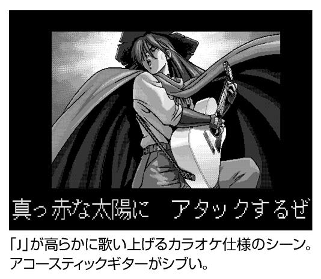
スパルタ神経衰弱
『48 夜物語』。１９９２年に現役だったエロゲーマーであれば、この名を聞くだけで胸中に甘酸っぱい思い出と黒い塊 がわき出してくるはずです。
本作はエルフのブランドであるシルキーズのデビュー作。タイトルの通り「48 手」をテーマとした作品で、複数原画家による 48 人 という大量の女の子が登場するのがウリ。
しかしながら本作のボリュームは、プレイヤーが思っていたのとは別の方向のものでした。
本作における最大のボリューム、それはプレイ時間。
本作は女の子と会話することで好きな体位を聞き出し、これを当てるという内容なのですが、早速、桃色聞き込みに行きたいプレイヤーの前に障害物が立ちはだかります。
ズラリと並んだ「40 枚」のカードの中から女の子を選ぶと、次は伏せられた４枚のカードが並びます。
つまり神経衰弱の要領で、４枚のカードの中から狙いたい女の子のカードを当てなければならないのです。
外れたらそれまで。
同じ女の子を選んでも、もちろんカードはシャッフルされていますので、当たる確率は常時25 ％ です。これだけでも相当につらい仕様なのですが、何故か最初に女の子を選ぶ段階でもカードが伏せられている辺りがスパルタ仕様。
寝ぼけた頭でプレイしようものなら、目当ての女の子を見つけられない ということもしばしばです。
なんとか25 ％ の確率をくぐり抜けると、次は尋問のコーナー。「性格」「趣味」「夢」「好きなもの」「好きな男性」「生活」「経験」の７項目から好きな体位を聞き出さなければなりません。尋問するためのコマンドには回数制限が設けられているのに加え、同じ項目でも繰り返して聞くことでメッセージ内容が変化する場合もあり、一筋縄ではいきません。
コマンドを実行するたびに減少していく残り回数が心を苛みます。ヒントとなるメッセージも表現が曖昧なのに加え、それらしいニセの手がかりも存在。４択の神経衰弱を正答し、７つの選択肢から限られた回数でヒントを探し出した後に控えるのは体位選択。
体位選択画面（マウスをあわせるとアニメーションする辺り芸が細かい）から、正解となる体位を探し出さなければならないのです。
その数はタイトル通りの48 手。最大48 択のクイズ というわけです。
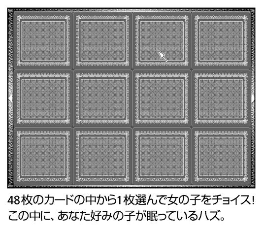
激戦の果てにあるものは......
唯一の救いは１キャラクター＝１体位で、１キャラクター正解するごとに選択肢がひとつずつ減っていくということなのですが、だからといって体位選択画面から正解した体位が消えるわけではありません。
もう、こうなると「わらの中から針を探す」に近い状態です。本作は色々な意味で半端ではありません。
尋問、メッセージ、体位選択、この作品はしっかりと記憶してメモを取っていかないことには、とても攻略できないのです。
１９９２年、16 ビット機でエロゲーがブームになりつつある、第一次エロゲーバブル前夜。エロゲーがライト化しつつある中で、本作は８ビット時代のハードコアさ加減を受け継いでいるのです（とはいえ、限度がある とは思いますが）。
しっかりとメモを取り、尋問時の各コマンドを何回実行したかを記録し、体位選択画面から正解したものを消していきます。正解するものからコツコツと。外堀からじわじわと埋めていくしかありません。いろんな絵柄の女の子が48 人もいて（中には森高千里風の女の子がいるのが時代を象徴）、しかもエロい格好をしてくれるのでウハウハ......という当初の浮付いた気持ちはどこかに吹き飛んでいます。
ひとり、またひとりと撃墜。ゲームオーバーがないのが救いというか呪いというか、区切りがないのも善し悪しといえるでしょう。
いくらリサーチをしたところで、最初の４択だけは運。25 ％ の確率から外れてしまえばそれまでです。
もうなんというか、完全に意地。男には引き下がれないときというのがあるのです。
苦闘の末、ついに48 人の攻略が成功。やりました。ついに男を通すことに成功したのです。
それにしても、あの神経衰弱だけは辛かったなあ......と激戦を思い返していたところにある情報が。
「画面の右上を何度かクリックすれば、神経衰弱をパスしたことになる裏技がある」。
試してみたら、あの地獄の神経衰弱があっさりとクリアできるではありませんか。なら最初から神経衰弱自体つけなければいい......と憤慨していましたが、やむにやまれぬ「大人の事情」があったに違いありません。
同社の名誉のために付け加えるなら、後にシルキーズは『河原崎家の一族』『野々村病院の人々』『恋姫』『ビ・ヨンド』といったシナリオ重視のアドベンチャーゲームで一世を風靡。現在のノベルゲーム流行の礎を築いたのでした。
（Ｙ）
エロ→エロというループ
調教ゲームの草分け的存在が『あゆみちゃん物語』。
主人公が彼女のあゆみちゃんに色々と教え込むことで、より過激なプレイの封印が解かれていきます。エロいことをすれば、さらにエロいことが可能となるのは正にエロのＲＰＧ。
ふたりだけのパーティで性の迷宮を冒険するというわけです（うまいこと言ったつもり）。
エロ→さらにエロというループは２００６年の現在プレイしても面白く、この辺りは流石アリスソフト。エロさが面白さに直結しているというわけで、当時バカ売れとなったのも理解できようというものです。
さて、その勢いのまま発売されたのが『あゆみちゃん物語実写版（以下、実写版）』。いわゆる「マンガ絵」で描かれた『あゆみちゃん物語（以下、原作）』のグラフィックを実写に置き換えた野心作 です。
『原作』が真ん中高めの素直な打ち頃絶好球なら『実写版』はバッターボックスに立つ足を狙うローキック。競技そのものが違うというか、まったく予想もしていなかったブラインドからの打撃に当時のエロゲーマーは大いに戸惑いました。
プロジェクトを主導するのは、現在も続くエロゲー雑誌の名門『メガストア』。アリスソフト名物のスタッフコーナー「アリスの館」も『実写版』では「メガストアの館」にチェンジ。
根本敬を思わせる絵柄で展開される５コママンガ「べのいな君」やゲーム内容に応じて作動する大人の玩具 「ＫＭＣ」（本体と粘膜ゼリー付送料込み６８００円）の宣伝など「アリスの館」とは大きく異なるノリで突っ走る様は、まるでプレイヤーを調教 しているかのようです。
ゲーム内容は『原作』に忠実。あゆみちゃんの「興奮度」と「耐久度」、自分の「精力」という３つのパラメータを操作するのが本作の基本。あゆみちゃんを気絶させまくるとコマンドのバリエーションが増えるのですが、真正面からぶつかっては自分の「精力」が尽きてしまいます。よって、自分の「精力」を温存しつつ、あゆみちゃんの「耐久度」を減らすのが基本です。コマンドは気絶回数のほかにも様々な要因で増えていくため、システムを理解し、うまく波に乗ればエロの奔流に溺れることができるのです。
『原作』では１００枚以上という２００６年現在から見ても大量のＣＧを搭載。イベントでは遊園地、温水プール、テニスコート、公園など様々な場所が登場します。『実写版』発売当時、口さがないエロゲーマーは「ロケに金がかかるから、背景をＣＧで処理するかイベント自体削除するんだろ？」などと言っていたものでした。
しかし『実写版』では遊園地、温水プール、公園、いずれも本物のロケ画像が登場。ほかのシーンにおいても基本的に原作を踏襲した画像が用意されており、原作の大きな魅力であるバリエーションの豊かさをしっかり再現していたのです。
また、数々のギャグや洒落にならないコマンドもそのまま登場。作り手の愛がうかがえる内容となっています。
凄まじい実写の火力
しかし、実写の破壊力というのは予想以上のものでした。アニメ調のグラフィックならシャレで済むシーンも実写となると別の味わいが生まれます。
体育で使うバトンを胸に押しつけるカットでは、女優さんの背けた顔から何やら不穏なニュアンス が読み取れてしまいます。
頻繁に登場する野外プレイのシーンでは、足下の落ち葉や土がやたらとリアルで、あゆみちゃんより先にこっちが音を上げてしまいそうになります。
エボナイト棒を摩擦して発電してから肛門に突っ込む「静電気責め」コマンドは、てっきり削除されているだろうと思いましたが『実写版』でも登場。心の中であゆみさんに謝りつつ選択 するという始末です。
その中でも異色のコマンド「首を絞める」「頭を踏みつける」 も、もちろん実装済み。『実写版』ではカーソルを合わせることすらためらわれてしまいます（流石に首を絞めたり頭を踏んだりというグラフィックはないのでご安心を）。麻薬と偽って適当な粉をあゆみちゃんに吸わせる「悪魔の囁き」なんかはエロゲーというよりは『警視庁実録24 時』系のテレビ番組を見ている気分になってきます。
実写の火力というのは、かようなまでに凄まじいのです。
これらは、すべてアニメ絵のエロゲーならシャレで済ませられるイベントです。そして『実写版』スタッフの『原作』を再現するという意気込みも間違ったものではありません。エロゲー的な感性と実写の情報量を組み合わせるのがいかに難しいかがわかります。
しかしながら、このソフトにはバブルっぽい元気さ が溢れています。エロゲー界でタブーとされてきた実写に真正面から取り組むだけでなく、原作をリスペクトした大量のグラフィックを用意するあたりは感服するよりほかありません。
原作と顔が違う、髪の色がピンクじゃない......というアレルギーを超えれば、現場の熱気が見えてくるのです。
（Ｙ）
エルフはホラー大好き
フェアリーテール在籍時代に名作『リップスティックアドベンチャー』を作り上げた後、独立してエロゲーの代名詞と言えるメーカーのエルフを創設した蛭田社長。ノリのいいせりふ回しの〝蛭田節〟と「女の子をモノ扱いしない」 という画期的な作風を引き継いで、シナリオを重視した路線を定着させることに貢献しました。
ひいては、後にスタンダードとなる「ビジュアルノベル」へと発展していくのですが......初めの頃、エルフのエロゲーと「殺人事件」とは切っても切れない仲の良さ。人は命が危機に晒されると子孫を残そうとする生存本能が性欲を高めるといいますが、パソコンの前で子孫を残さない素振り千本ノック をさせてどうするんでしょう。恐怖のドキドキを恋心と勘違いする「吊り橋効果」を、自分の右手に活用してもうれしくなさげです。
バッドエンドがハッピー！
この『河原崎家の一族』も人がゴミのように死にます 。唯一の救いと言えば「ほとんどの場合、主人公が惨殺 」ということ。女の子はめったに生命活動を停止しませんけど、男女平等により「死ぬようなエロ」を割り当てられているので、そちらがダメな向きにはオススメできません。
常軌を逸した高い報酬に惹かれて、夏休みの間だけ古ぼけた洋館でバイトすることになった大学生の「六郎」（主人公）。しかし、そこに住む河原崎家の一族は、どこか異様な雰囲気を漂わせていた。そして、昼夜を問わず起こる淫靡な出来事に、六郎も背徳の世界へと誘われ......という未来は、河原崎家に一歩踏み込んだ時点でおよそわかったりします。
そろいもそろって、屋敷の住人が禍々しすぎ。ボブカットで蛇のような目をした「さちこ」と会ったとき、ひどい目に遭わされそうな気がした予感は、後でバッチリ的中しました。
この蛭田ゾーンでは人を見た目で判断してかまいません。
まずは第一印象が大事、ということで屋敷の主「河原崎泰三」の奥様であるとおっしゃる「河原崎京子」さんにごあいさつ。「うちは、家族と使用人をはっきりと分けてますから」といったしきたりをネチネチ言い渡されてから、最初のお仕事を申しつけられます。「いやです」こんなバイト、やめてやらー！ 早くもエンディングをいっこゲット しました。『河原崎家』はマルチシナリオ・マルチエンディングの先駆けでして、こういう終わり方が全部で19 個もあります。が、怖い思いをしたくなければ「初日にリストラ」がベストエンド でしょう。
さちこ（サド）や京子（年増エロ）以外の河原崎メンバーは、麗（ロリ担当）、俊介（シザーマン）、先輩メイドの亜栗栖（肉奴隷）、怪しい運転手の南原（遺作のお兄さん？）、家庭教師の美香（通りすがりの被害者）、そして新入りメイドの美佐子（処女ヒロイン）と蛭田ファンにはおなじみの配置で、敵と味方を間違えようがありません。
エルフ社内には「鬼畜」と「ロリ」と「処女」を一定比率にするクォーター制度でもあるんでしょうか 。
六郎はハサミで突き殺され 、ビールを飲まされて毒殺 され、車にひき殺され ながら、河原崎家の隠された真相へと迫っていきます。初プレイでハッピーエンドに直行もできますが、一通りバッドエンドを体験しないと何が起こってるかわからなくて面白くありません。殺されてばかりいるわけでもなく、中にはハッピーよりハッピーそうなバッドもありますし。クスリ漬けにされて色んなテクを調教された美佐子たんが夜ばいをかけてくるエンディングは明らかに幸せそうですから。
（Ｔ）
お前の本性を知っているんだ！
「リビドー」といえば性衝動のことですが、エロゲーマー的には１９９３年に設立され２００５年に活動を終えたソフトハウスを指します。
このメーカー、元は自由度の高い非18 禁ＲＰＧを作成していたのですが、突然「ＬＩＢＩＤＯ」として覚醒 。「オカズウェア」を旗印にライトかつ濃厚なソフトで一世を風靡しました。
ライトと濃厚では矛盾しているように見えるかも知れませんがさにあらず。ライトな部分は操作性及びゲーム性。スタート後、即座にエロシーンが展開するという立ち上がりの早さは、当時としても衝撃的なものでした。
濃厚な部分はゲーム内容。アナル、ＳＭ、野外露出、異物挿入、食糞といったプレイは「アブノーマル」に分類されるのですが、ＬＩＢＩＤＯ世界ではこれこそがノーマル 。
劇画系ではなくアニメ絵で展開されるこれらのプレイは、ＰＣ‐９８で初めてエロゲーに触れる無垢なゲーマーを調教しました。
一度は『放課後純愛クラブ』なる純愛ゲームを出し「ＬＩＢＩＤＯもノーマル系へ路線変更か」と思わせつつも、同じ純愛ゲームのキャラクターにマニアックなプレイをさせる『放課後マニアクラブ（以下、放課後）』を発売するという荒技が炸裂。一作品丸々使ってネタ振りをするという壮大さが話題となりました。
しかも『放課後』のほうはサターンにも移植されているあたりがまた壮大なネタ振り。
いかにも「普通のギャルゲーでござい」 という顔をしてゲーム屋に並んでいるセガサターン版『放課後』を見ながら、「すました顔をしてるようだが、オレはお前の本性を知っているんだ！」と呟くという実にマニアックなプレイを楽しむことができたのです。
前代未聞かつ空前絶後の設定
「可愛らしい絵柄でアブノーマルなプレイ」という方向性や「ゲームの特典としてエロボイスの収録されたＣＤが付属」といったサービスは現在でこそ当たり前ですが、いずれもＬＩＢＩＤＯがハシリ。現在のエロゲー界に与えた影響は大きいと言えるでしょう。
手っ取り早さがウリの「オカズウェア」思想を賛美すると前置きが長くなり、ちっとも手っ取り早くならないという矛盾は置いておいて『リビドー７ インパクト』に話を移します。
「オカズウェア」第一弾である『リビドー７』の続編が『リビドー７インパクト』。
主人公である奈留たちは麻雀の同人ソフトを作ることになりましたが、気を吐いているのは奈留ばかりで、周囲の人間はまったくもって仕事が進んでいない様子。
いつの間にかエロ話大会へとなだれ込みます。
登場するキャラクターは主人公の奈留、姉の愛美、親友の千鶴、下級生の綾乃、現役アイドルの真子、幼女の梨花、看護婦のゆき、プログラマーのエミたち８人。梨花の年齢は12 歳。現在ではアウトの設定であり、規制の緩い時代だからこそ実現したドリームチームと言えるでしょう。
お気づきの通り本作のキャラクターは全員が女性であり、男の影など一切ありません 。間違ってもエロシーンで身体が半透明になるゼリー人間や、前髪で顔の隠れたナイスガイなどは登場しないのです。
どんな組み合わせを選ぼうとレズで同性愛なのですが、本作の世界ではそれが当たり前であり、なんの問題もありません。
８人それぞれが他の７人と肉体関係を持っているレズコミュニティというのは前代未聞かつ空前絶後の設定であり、感情的に相当入り組んだことになりそうですが、本作では全員が愛で結ばれているので大丈夫 です。
プレイヤーがやるべきことと言えば、画面上の女の子８人の中から好みの２人をクリックするだけ。女の子の組み合わせでエロシーンの内容が変化します。
難しいゲームや難解なアドベンチャーなどをクリアする手間は一切無し。「Ａｕｔｏ」のチェックボックスをＯＮにしておけば、マウスをクリックする必要さえない のです。
プレイヤーはただただ目の前で展開されるエロの奔流に身を浸していればＯＫ。さらにエロシーンが始まる前にグラフィックをサムネイルで確認可能の親切設計のおかげで、お目当てのシーンをすぐに探し出すことができます。
ＬＩＢＩＤＯ自らが提唱した「オカズウェア」思想が見事に体現されている作品なのです。
「ゲームじゃない」「ただのＣＧ集」「エロのみ」「ＡＶの延長でありパソコンでやる必要はない」。本作のコンセプトは当時でさえ論争を巻き起こしたのですが、２００６年の現在でこそ、その思い切りの良さが光ります。
確かにあらゆるソフトが「オカズウェア」のエロゲー界というのは問題だと思います。しかし、エロゲーというのはゲームマニアのみのジャンルなのでしょうか。答えは否。ゲーム性を追求する作品も必要です。しかし、「オカズウェア」のようにライトでわかりやすく、一般人に訴求するものも絶対に必要なのです。
こうした作品がなくては、エロゲーは複雑さを競い合う（悪い意味で）コアなジャンルとなり、新規参入が望めず、創生期の熱が冷める速度も現在よりも速かったことでしょう（この複雑化と巨大化の方向性の極北をいったのが格闘ゲーム市場であり、世界的ブームを巻き起こしながらも現在はジャンルそのものが急速に冷え込んでいます）。
エロゲー界伝説の荒技「バナナホイップ」
さて、そうした事情を踏まえつつ『リビドー７インパクト』を見てみると、これが実に良くできています。
複雑な操作は一切なくしたことで、バリバリのゲームマニアからビジネス用途にパソコンを使う40 代のオジサンまで分け隔てなく楽しむことができます。
文章はキャラクターのセリフオンリーで情景描写などの「地の文」が存在しないのですが、おかげでするすると読み進めることが可能。普段文章を読む習慣がなくてもＯＫです。
また、セリフも文語体ではなく話し言葉の口語体になっているのですが、これが妙なリアリティを醸し出しています。８人はそれぞれにちゃんとキャラが立っており、セリフだけで誰が話しているかすぐわかります。
８人の関係も単なる乱交ではなく、激甘カップルの「奈留×千鶴」、普段の意地悪さと家族愛のギャップがポイントとなっている「奈留×愛美」など、いずれの関係もキャラ立ちの上で描かれています。
本作では緊縛、露出、スパンキング、脱糞及び食糞（牛乳浣腸の後にバナナを挿入、腹の中でシェイクした後にそれを食わせるという「バナナホイップ」 はエロゲー界伝説の荒技）などアブノーマルなプレイが目白押し。他のゲームでは脱糞すると臭い汚い変態と罵られるのですが、本作では、すごい偉い と褒め称えられます。
縛らせるのも愛なら、相手の目の前で排泄できるのも愛。愛があるからこそ野外での露出もできる。そこには紛れもなく愛があるのです。異分子である男の影がまったく存在しない、愛に満ちたコミューン。エロゲーでしか描き得ない世界がそこにはあります。
鬼畜系のハードなプレイとほのぼの系の清々しさが同居しているというわけで、実に独特で居心地のいい空間と言えるでしょう。
マニアックなプレイを扱いつつも雰囲気はライトという見事ないいところどり。
そう、本作はマニアからビギナーまでをフォローし、かつ引かせないというコンセプトでまとめられています。
エロゲーは怖くなく楽しいものであり、ＡＶではなかなか見られないようなプレイも見られるよ......というエロゲー入門用のソフト といっても過言ではないでしょう。
このあたりは誤解されがちなのですが、「文章が少ない＝手を抜いている」ではありません。地の文にしろセリフにしろ、足すのは簡単ですが削るという行為にはセンスが要ります（もちろん、大作を作るのにもセンスが必要。つまりは方向性の違いです）。「エロゲー初心者向け」というコンセプトを実現するためにはセリフやシステムをシンプルにまとめることが必要とされたのです。
エロゲーが複雑化、巨大化する真っ最中である１９９５年に出たため、前述の「ゲームじゃない」論争こそ巻き起こしましたが、本作のコンセプトは「オカズウェア」系ソフトのフォロワーを大量に生み出したことに加え、なにより『リビドー７』『リビドー７ インパクト』のヒットが証明していると言えるかもしれません。
一般ゲームとして逆移植されるアクションゲームや、エロゲー界の外からも注目されるノベルゲームなど、様々な形態のゲームが登場する現在だからこそ、ＰＣ‐９８時代の「オカズウェア」のセンスをもう一度見直すべきなのではないでしょうか。
（Ｙ）
アインシュタインの大名行列
本作はハード社最後のエロゲー。ひとつ前の『ようこそシネマハウスへ』も良くできていた作品ですが、これを逃すと書く機会がなくなるという意味で『吉永サユリがやってくる ヤア！ヤア！ヤア！（以下、吉永サユリ）』に関して書かせていただきます。
ハード社と言えば『はっちゃけあやよさん』など独特のセンスで知られており、本作でもそれが爆発しています。
主人公の名は吉永サユリで、性別は男性。
常に原始人風の衣装を身につけているだけでもかなり奇異なのですが、顔は日本を震撼させた教祖にそっくり。しかも発売は某教団に警察の手入れが入った半年後 という旬すぎる時期。
ＰＣ‐９８時代の、おおらかさを示す出来事と言えるでしょう。
そんな吉永サユリは、なんと学校教師。ライバルのマルダシ先生と張り合いながら、「渦巻なると」「赤貝ヌレ子」「蘇我いるか」ら女生徒を指導していきます。１名、女生徒の名前が大ヒット忍者マンガと名前が被っていますが、発売年度で言えばこちらが４年も先。
きっと、あのマンガの作者は『吉永サユリ』をプレイしてインスパイアされたに違いありません。
本作の世界ではエロこそが青春であり、学問が罪悪。「母は元・ＡＶ女優、父はソープ経営、姉は風俗嬢、兄はポン引き」がエリート一家であり、「物理学は恐ろしい学問だ。始めは好奇心のつもりでも、常習しているうちに、身も心もむしばまれていくんだぞ！ そして、そのうちひどい禁断症状が現れて、アインシュタインの大名行列 の幻覚が見えるようになるんだ！」という90 年代エロゲー的な世界であり、半裸に毛皮のオッサンや股間のペニスケースも眩しいライバルでも立派に教師が務まる のです。
こんな無茶な世界の学園生活、特に文化祭や体育祭をじっくりと鑑賞したいという衝動にも駆られるのですが、ゲームの舞台となるのは夏休み。８月１日～31 日を女生徒たちと過ごします。
夏休みとはいえ、やることは沢山あります。週に一度のプール授業。子犬系ロリータである「渦巻なると」に似合わない衣装を着せて笑う のが主な活動......という『エイケン』以上に謎の「ロリータクラブ」の監督。夏祭りに臨海学校。なんと気怠くも輝かしい日々でしょう。
しかし平穏なばかりではありません。彼女らは多感な時期だけに、様々なトラブルを巻き起こします。
はたして吉永サユリ先生はマルダシ先生に勝ち、見事に生徒を指導することができるのでしょうか......？
この人、誰だっけ？
こう書いていると、なにやら育成系のようですが、システムは時間要素のあるアドベンチャー。１日は午前６時からスタートで、どこかに移動するたび２時間が過ぎ、午後10 時に終了。基本的に難度は低いため、かなりアバウトなプレイでも大丈夫。移動→エロシーン→移動→エロシーンと結構濃密です。
エロシーンは女体クリック型。画面上の女体をクリックすると、場所に応じた反応が返ってくるという絶滅危惧種 です。
前述の通り、本作では結構な頻度でエロシーンが発生。
「あらかじめ定められた、すべての場所をクリックしないと先の画面に進まない」という総当たり方式かつ１エロシーン当たり平均２枚のＣＧがあるのですから、いい加減指がつってきます。
本作のエロシーンは、メインゲーム画面で表示される立ち絵とエロシーンで画風が大きく変化する場合があります。
立ち絵でアニメ系だった彼女が突然、実写風になり「この人、誰だっけ？」 状態になることもしばしば。加えてデフォルメの効いた構図も多いため、エロシーンはかなりのカオス状態を呈します。
『太陽がくれた季節』（青春ドラマ『飛び出せ青春』の主題歌で「君は何を今／見つめているの」の歌い出しで有名な曲）風のＢＧＭを聞きながら突如、画風の変わる女体をクリックしていると、浮き世の諸々がどうでもよくなってきます（ＣＧそのものは手間がかかるタイルパターンで塗られており、当時としても結構な高水準 ）。
そう、本作は心の夏休みなのです。夏休み、それは気怠くも輝かしく、様々なバカが許される日々。
日本を震撼させたカルト教団事件の直後に、問題の教祖そっくりの主人公を出してみる。
エロシーンで青春ドラマ風のＢＧＭを流し、主人公に「おお、ビューティフルけつ！ 」「精液は心の汗だ」「ソフ倫の規定では、１ドットの線ならＯＫなんだ」と傾いたセリフを言わせてみる。
どれもこれも夏休み風のバカ（褒め言葉）、頭が緩い（褒め言葉）感じのバカ（褒め言葉）ではありませんか。
90 年代というエロゲー界が若く熱かった時代。
若き日に誰もが通る暑くバカをやる日々。
本作は舞台が夏休みというだけではなく、エロゲー界にとっての夏休み であったのかも知れません。
（Ｙ）
マルチサイトシステムに夢中！
ここ最近でこそ「18 禁ゲームとして登場→家庭用に移植」という流れは当たり前になりましたが、エルフの『同級生』シリーズと並んで、その先駆けとなったエロゲーが『EVE bursterror』です。作者は『ＹＵ‐ＮＯ』と同じ「剣乃ゆきひろ」（現・菅野ひろゆき）。基本的にはコマンドを選択する会話型のアドベンチャーゲームですが、そこは古参エロゲーマーに抜くのを忘れさせた剣乃エロゲ のこと。「マルチサイトシステム」という画期的な仕掛けを発明しています。
主人公は、私立探偵の「天城小次郎」と、内閣調査室の捜査官「法条まりな」のふたり。この「小次郎編」と「まりな編」のシナリオは、一方だけ進めていると必ずどこかで行き詰まります。そこで一方が鍵を開けると、もうひとりがドアを通れる、という関連が生じてきます。こうして、ふたりの視点（マルチサイト）を交互に行き来することで、ふたつの物語がシンクロ していくわけです。
両方のシナリオが一本に合流し、小次郎とまりなが〝共犯〟するシーン は背筋がぞくぞくする素晴らしさ。
コマンド総当たりのかったるさもあり、本格ミステリと信じていたのにＳＦにワープ してしまう欠点もあります。が、剣乃氏がシーズウェアを離れた後に出た続編を見て、みんな「剣乃さんごめんなさい、お願いだから帰ってきて」と心から土下座 したものです。
（Ｔ）

ナンパゲーム、最高！
格差社会との戦いも笑顔でやり過ごす企業戦士たち。そして家に帰れば、机の上には時を巻き戻し、失われた青春をやり直せるタイムマシンが──別名「エロゲー」はオトナのたしなみとなってますが、中でも『同級生２（以下、２）』は〝感動エロゲー〟の境地を切りひらいた傑作。エロゲーのリンカーン として名を残しています。
そんな尊敬を集める『２』の影で、まるでデキの悪い兄、北斗四兄弟のケンシロウに対するジャギのような位置づけの『同級生』。とかく「続編の『２』でシステムは完成した」「ドラマ性の薄い前作と比べて～」と、まるで未完成のプロトタイプのような軽い扱いです。けど、ナンパゲームのどこがいけないんでしょう？ 人は感動のみにてイクにあらず。「三次元の女には愛想が尽きた。俺たちは二次元の世界に旅立つ」というきれいごと より、モテモテ王国に裸ダイブしたいピュアな心がエロゲー業界を育ててきたんですから。
それにしても『同級生』のピュアな性欲は、いまどきの「感動ゲー」とヤムチャとフリーザぐらい戦闘力が違いすぎ ます。主人公のたくろうは「とにかく俺はまわりから『女好き』だの『スケベが服を着てる』だの『ポコチンが渇く暇のないやつ』だの言われているが」というぼやきがまったく誇大広告じゃありません。最近の抜きゲーはふだんポコチンを隠してますけど、こっちは１日24 時間もっこり 。
夏休みの前半はアルバイトに費やして「でいと」する為の資金を貯めておいたたくろう君。「これからが俺にとって本当の夏休みだ......学生生活最後の甘酸っぱい思い出を作るために、俺は時間を無駄にする事はできない」。エモノを追うハンターの心を持って「甘酸っぱい」どころじゃない んですが、資金が５万円しかないのが辛うじて学生らしいというか。
燃える同時攻略
同じエルフのエロゲーでは、『遺作』『臭作』『鬼作』がキャラを屹立させてますが、『同級生』の青さほとばしるトバしかたには押されぎみ。
「みんなスポーツに汗を流して、性欲を抑えているに違いない......うーん、なんて不健康なんだ」
ただの部活の練習風景を見ただけでカウパーだだ漏れ 。デートを申し込めば「ほーら、ポコチンがこんなに緊張しちゃって」、薬局を訪ねると「亜子さん、俺とエッチしようぜ」、彼女連れの親友には「これからセックスでもするのかい？」 とセクハラ。すると彼女は「たくろうさんってね。色々とエッチな話をしてくれるのよ、すっごく面白いの」セクハラ＝あいさつとすり込まれそうで怖いです。
愛の備蓄をタンカー級に持つ男・たくろうはストライクゾーンもだだっ広く、年齢で選り好みなんてしません。ロリコン？ 貧乳？ なにそれ。タイトルとなってる「同級生」も５人しかいませんし、先生が２人もいて年上のほうが多いです。
ほとんどがカレシ持ちだったり経験済みだったり、たくろう本人も映画館の中でおっ始めようとするほど慣れていて、 二股三股の割り切ったお付き合いに罪悪感はゼロ。何人もの同時攻略を組み立てるのが楽しく、 10 分おきに女性をとっかえひっかえ できますから。
広いマップを移動して多くのキャラクターと会って「フラグ」（エンドまでにいたる条件）を立て、間違った場所に突っ込むと時間をロスして攻略失敗という緊張感は、アクションゲームとしても秀逸。『２』で人生が分岐してしまった筆者 ですが、こういうナンパゲームがまた出ることを、願ってやみません。
（Ｔ）
チキンな人でも大・丈・夫！
「エロゲーとはなにか？」この問いにはいくつもの答えが存在しますが、その中のひとつは「男のロマン」。『クローンドール 課外授業（以下、クローンドール）』は、そんな「男のロマン」をテーマとしたエロゲーです。
主人公（名前変更可能）は、同級生の彼女（名前変更可能）に首ったけ。しかし、主人公には彼女に告白するような勇気なんてありません。悶々とした日々を過ごす彼は、ひょんなことからクローン人間を作る装置を入手、迷わず彼女のクローン人間を作り出してしまいます。
主人公とクローンの彼女、そして本物の彼女が織りなす夏休みが始まる......というのが物語の大筋。
本作は１９９５年という調教ゲームが流行の時期に発売されただけあり、調教するという体裁をとっていますが、複雑なパラメータ管理などは一切必要ありません。
様々な調教ゲームで女の子に逃げられたり、自殺されたり、発狂されたり、倒れられたりした筆者のようなズボラでさえ楽々プレイ可能（調教モノではありませんが）。
『プリンセスメーカー２』で娘を死なせてしまいガチで落ち込んだり、『ナチュラル』で親バレ以降の欝な展開やら暗いバッドエンドが頭から離れなくなった チキンな筆者でも大丈夫なのです。

卑語オンパレード
本作の基本は、午前中～午後の出来事を描写する「読むだけのモノローグ」と、本編である「夜の生活」の２パート。
夜はクローンの彼女にマウスを合わせ、どういったプレイを楽しむかを選択するだけ。メッセージスキップこそないものの、さくさくとゲームが進んでいきます。
選択肢も「胸に、触れてみる」「お、お尻はどうかな...？」などなど楽しげなものばかり。
ゲームを進めるうちに選択肢も増えていき、最初では考えられなかったような様々なプレイも可能に。
本家「調教モノ」である『あゆみちゃん物語』を早回しにしたような展開のおかげで、筆者の脳はもうぬるま湯漬け 。辛く苦しく悩みばかりの娑婆の暮らしには、そうそう戻れそうにありません。
クローンの彼女と戯れるうち、夏休みの楽しい日々は瞬く間に過ぎていきます。本物の彼女には告白どころかまともに話せもしない有様ですが、リアル志向の苦いエンディングもヨシといったところでしょうか......などといった、「マニアならではの半端に悟ったような未来予測」を本作は軽々とぶちこわしてくれました。
なんとクローン作成装置にはオリジナルとのシンクロ機能があり、主人公とクローンのあれやこれやは、すべて本物の彼女に伝わっていたというのです。
本物の彼女が差し出す「夢日記」は、これまでのプレイを彼女視点で見た記録であり、すべて彼女の一人称。この「夢日記」こそが本作を（一部で）伝説の作品としている要因なのです。
「わたくしこと上杉公佳は、今からおしゃぶり少女公佳で～す」
「彼ったら、最近わたしをイジメてばかり。でもわたし、もうこのワル～いヒトから逃れられないみたい......」
「だって、女の子だもん あなた専用の」
「身体が勝手に動いて、これ、この人、この男はわたしのーって、全身で主張してるのー」
「あなたのためだけに生まれてきた女、上杉公佳＝17 歳」
「スッポン少女公佳、なーんてね、てへっ 」など、全編がもう名フレーズの嵐。少女マンガを思わせるリリカルな乙女の心情が卑語、卑語、卑語のオンパレードで描かれるという、誰もが予想し得なかった合体技が繰り広げられます。
この「夢日記」は、それぞれの日に自分が実行したコマンドの中身をヒロイン視点で見せてくれるというものですが、ＰＣ‐９８版の「夢日記」では、同じコマンドを繰り返してもその回数分だけテキストが表示されます。
たとえば、３回同じコマンドを実行した日であれば、「夢日記」では同じテキストが３回繰り返される のです。他のゲームであればプレイアビリティを低下させかねない仕様ですが、本作ではこれが独特のドライヴ感覚を生み出しています。
１回読んだだけでも口の中がピンク色の砂糖だらけになりそうなリリカル＆ エロスのテキストが、２度といわず３度も表示される様はまさに狂気一歩手前（ウィンドウズ版では修正されてしまっていますが、敢えてＰＣ‐９８版の仕様こそが本物であるとブチ上げたいところ）。あれやこれやの無茶なプレイが彼女の完全な同意の下におこなわれていたという究極のファンタジー。
色々と心寒くなる「リアル」 が導入されつつある昨今ですが、少なくともこのゲームには裏表のまったくないヒロインがいるのです。
現実には存在し得ないヒロインにひととき心癒される。本作は疲れた男たちに、エロゲーのみが提供できる癒しを与える聖女のような作品といっても過言ではないでしょう。
（Ｙ）
通販専用ソフトの謎
アリスソフトの作品の中には、ユーザークラブ（ファンクラブ）に入った人だけが買える通販専用ソフトが少なくありません。この『Only You 世紀末のジュリエットたち（以下、Only You）』も、長らく一部のマニアだけが楽しめた「まぼろしのソフト」としてマイナーメジャーな１本でしたが、２００３年にＰＳ２用の『Only You リベルクルス』に移植され、家庭用ユーザーにも名作を知ってもらえる、と原作ファンも大喜び。......が、ＰＳ２版は全員のキャラクターが顔面を基礎工事からやり直し されて、別人に改造されてました。
なぜにホワイ？
ここで気に掛かるのが、市販ソフトにひけを取らない十分なボリュームを持つＰＣ‐９８版が、わざわざ通販専売（実際、当初の予定では一般販売される予定でした）にされた理由です。
当時は「ヒロインが有名ギャルゲーの〝あの人〟に似てるから圧力が？」と憶測を呼びましたが、アリスソフトの公式見解は「１００％ 自主規制です 」とのこと。いったい「自主規制する」原因は何なのか......オープニングに手がかりがあるかもしれません。主人公は修行に明けくれる格闘バカ。キャラクターデザインがどう見ても『起動武闘伝Ｇガンダム』の主役ドモン・カッシュ 。暗きベールに隠されてきた自主規制の秘密が、じっちゃんの名に賭けなくても解き明かされました。筆者が名探偵であるはずがなく、賢明なるユーザーが大人げないので黙っていた 「暗黙の了解」というやつです。
愛を捧げるのは、貴様だけ！
さて『Only You』というタイトル。直訳すると「君だけ」であり、機能的に日本訳をするなら「一穴主義」 。
主人公は「俺にとって、肌を重ねるという行為は、愛する者と、より共にありたい......心を通わせ、互いの存在を確認しあいたい」と言い、愛を捧げる人はただひとりという古風な考えの持ち主です。
もしも、ふたり以上と関係を持つなど外道なことをすれば、「不幸モード」に突入して人生の暗いどん底 をはわされます。まさに本作のゲームシステムを表現し尽くしたタイトルを、ファンは男らしく通称「貴様だけ」 と呼んでいました。
ゲームが始まるやいなや、いきなり父母と妹を惨殺され、本人も世界を破滅に導く存在として、世界各国の暗殺者にねらわれることになった主人公。愛する者を手にかけた仇に復讐を誓い、修行に明けくれる日々......ということで山にこもったりせず、その日から街をほっつき歩いて出会いを求めます。襲ってくる怪人との実戦のほうが、修行よりも戦闘力を鍛える効率も高いですし、「１日中ナンパに精を出す住所不定・無職」 という世間の誤解も気にしちゃいけません。
画面の右にある「地球滅亡」メーターは地域を移動したり、時間が経過するごとに減っていきます。これは主人公の持つ「刻印」に誘導された「恐怖の大王」が地球にどこまで接近したかを表示しており、０になると、最強の敵と雌雄を決することに。ヒロインのひとりと肌を重ねても、「恐怖の大王」が来るまではエンディングにならないので、次々と女性に迫られても耐える我慢ゲーム がわりと辛いです。
７人のヒロインは魅力的ですが......存在感をバリバリ食ってしまっているのが「タイガージョー」という謎の虎仮面。
「いいや......裏切ったのではない。表返ったのだ！」「よいか......複数のプレゼントを贈ることは、己の魂を分散することと同じだ！ 」と贈り物まで指導したり、時には弁当を盗んで己の甘さを思い知らせ、「この痴れ者がぁ！」とボコボコに殴ってくれます。
女性よりも師弟愛に目ざめそうなのがエロゲーとしてどうかとは思いますが、やはり男は最高！
（Ｔ）
ビジュアルノベルの原点
「ちんちんがほしいの！ （中略）セックスがしたいのよおぉぉ！ セックスセックスセックス （中略）せっくすせっくす 」
こんなあこがれの授業風景に連れて行ってくれた『雫』は、報われない想いに満たされたエロゲーマーの心とちんちんをわしづかみ 。
精神病院に運び込まれた少女の叫びは、後にエロゲーの新たなスタンダードとなる「ビジュアルノベル」の産声でもありました。
その原型と言えるのが、意欲的な挑戦を続けるチュンソフトの「サウンドノベル」シリーズ。『弟切草』や『かまいたちの夜』ではプロ作家や脚本家を起用して濃密なテキストを用意し、シナリオの分岐と複雑なフラグの管理により、「読ませるゲーム」を打ち立てたのです。
これを開発する側から見ると、「背景」と「キャラ絵」を何パターンか組み合わせれば、いくらでも異なるシチュエーションのできあがりで、ＣＧにかかるコストや時間が省ける。いやになるほど大量のテキストは必要になりますが、シナリオライター１～２人がワープロでがむしゃらに書けば、なんとかなり、疲労はともかく人件費はかかりません。中小のエロゲーメーカーが短期間で作るには、もってこい のシステムだったわけです。
もっと毒電波を！
もっとも一発目がこけたら「ビジュアルノベル」の普及も何もあったものじゃありません。『雫』のオープニングでは、主人公はノートの上に「僕の地球」を落書きして、新型爆弾の実験に夢中。汚れた海や空、ひしめくごみ溜めのような町並み、主体性のない奴らを焼き払って興奮 してます。
ツカミはばっちりです。
狂気に犯されて向こう側にいるような主人公ですけど、誰しも「俺ってクラスの中で特別な人間なんだぜ」とカンチガイした孤独に浸ってた、過去のイタい自分の姿とかぶるはず。ここで「お前だけだ」と言われると「僕の地球」を書きたくなる ので、皆さんうなずいてください。
「晴れた日は、よく届くから」
「月島さん、それって何の話？」
「電波の話だよ」
学校の屋上で電波を集めていた月島瑠璃子さんとの出会いですが、「毒電波」というと大槻ケンヂの小説『新興宗教オモイデ教 』ですよね。くわしくは、短編の『くるぐる使い』と『キラキラと輝くもの』も読みたいところですが、要するに世界観はオーケンの小説が下敷きです。かといって、本作の持つ価値が下がるわけではありません。元ネタの方はＬＳＤだのロックだの混ざってましたが、こちらは毒電波×セックスの一直線で、オタクにも共感、いや受信しやすくなってます 。
それに、ヒロインのひとりが毒電波に操られてハサミで自分のノドを突いて自害したり、主人公が事件に興味ないやと放っておくと、卒業式が父母や先生も飛び入りした乱交パーティ（ＢＧＭ：仰げば尊し） になったりと、バッドエンドの後味の悪さはトラウマもの。
原画・水無月徹氏による可愛いキャラクターが、シナリオライター・高橋龍也氏のずば抜けた文章力により、悲惨な末路をたどるギャップがたまりません。
しかし、本作はそれまでの「大人が書いたホラー」路線よりも、せつない少年・少女の心理に寄りそっていて、何よりすぐれた「青春もの」に仕上がっていました。ゲームとしても、「一度は哀しいエンディングを見たあとでないとハッピーエンドにたどり着けない」というビジュアルノベルのお約束を作り、やり込みの楽しさを与えてくれましたから。
感動をぶち壊しかねない異星人バトル編 も引っくるめて完ぺきです。
筆者のところにも晴れた日には電波がよく届いてるんですけど、送ってくれた方（ただし美少女限定）はいますぐ申し出るように。
（Ｔ）
クトゥルフ神話＋エロゲーの元祖
ホラーとエロゲーとは「生存本能」と子孫を残そうとする「性欲」を近づけるという点で相性はバッチリ。けど、恐怖といってもロケットランチャーを一発ぶっ放せば消し飛ぶ程度のひ弱い悪役ばかり。ボク、怖くないと勃たないモン！ そんなＥＤの悩みを抱えた地獄の鬼も昇天できる作品こそ、この『黒の断章』というエロゲー。アメリカの怪奇作家であるＨ・Ｐ・ラブクラフトの創始した怪物ホラーを元ネタにして、多くの作家が新たなモンスターを付け加えていった「クトゥルフ神話」をベースにしており、不気味な専門用語がひんぱんに顔を出すので、性欲がかき立てられることは保証つき 。
ですが、原作となっている小説では、タコに似た頭部や無数の触手、巨大なかぎ爪を持つ化け物が海底で狂った夢を見るだけで自殺者が出るわ 、ナントカ博士が血走った目で「いあ！ いあ！ ハスター！」と邪神を呼び出したりと、正気を保つのに忙しすぎて、エロと友達の触手を見てもおったてるどころじゃありませんでした。
小説と同様、ゲームでも「クトゥルフ神話もの」はひとつのジャンルとなっていて、『ティラム・バラム』や『ラプラスの魔』などの前例もありますが、それら怪物とマシンガンを乱射して語り合う戦闘ゲームと違い、『黒の断章』は私立探偵となり、捜査により事件を解決しようというラブ＆ ピースの物語。あ、もちろんグロも特盛り にトッピングされてます！
ナコト写本を持ってりゃバレるよ！
涼崎探偵事務所が入居しているマンションで、一家４人が食卓に着いたままで惨殺された事件を皮切りに、次々と猟奇的なやり方で葬られる住人たち。涼崎は、興味本位で事件を追ううちに、それが自分の失った６年前の記憶と深いつながりがあると知ることになる......。
このモダンホラーの語り部は、心理学・医学の心得もあるワトソン役の「草薙」。プレイヤーは彼の視点から事件を追うわけですが、本当の主人公、つまりホームズ役の涼崎がしゃしゃり出て、説明なしに視点を切り替えるので、ときどき混乱をきたすことも。でも、心配は無用。涼崎視点はホラーの邪魔になるえっちシーン担当ですから、どんどんスキップしても問題なし ！
刑事から警察手帳を盗んだりして捜査を進めていくうちに、このマンションの住人に「ある製薬会社」の関係者が多いという、異なる事件同士をつなぐ一本の線が浮かび上がります。が、盗撮大好きなデブ、若い女性のふたり暮らし、おびえた見た目をした中年男性、そして書斎に『ナコト写本』だのミスカトニック大学の文献だの飾ってる貿易商の中で、誰が犯人かはプロの探偵じゃなくても丸わかり です。
洞察力が鋭いらしい涼崎は、聞き込みをした相手の女性と「据え膳食わぬはなんとやら」ということで、あとさき考えずにえっちします。しかも中出し 。殺されたふたりの被害者の体内に、俺の精液が残っている、間違いなく犯人として逮捕される......と悩んでましたが、犯人に手を貸した人物が警察に洗いざらい真相をしゃべってくれたおかげで、無罪放免になりました。涼崎、すごい洞察力です。
ネタバレすると、殺人の方法も「クトゥルフ魔術」ですから、推理の出る幕がありません 。クラーク・アシュトン（クトゥルフ作家のひとりと同名）があっさり惨殺されたのは爆笑しましたが、ゴシックホラーの神話とハードボイルドを融合させたシナリオは独特の面白さがあり、続編である『Ｅｓの方程式』（この２本が「涼崎探偵ファイル」シリーズ）も合わせてプレイしたいところ。また、この『黒の断章』のＰＣ‐９８０１版はラストにある地下洞窟の探索にてくじけそうになります ので、より操作性が良くなったセガサターン版をオススメします。エロもありませんし 。
（Ｔ）
元祖・鬼畜エロゲー！
男には譲れない一線、死守したいプライドがあります。自分の欲望を嫌がる女性に押しつけるのは人間のクズだっ ......と義憤に燃えて凌辱モノのＡＶを借りて検閲 するとか。
そういう薄皮に包まれた誇りを傷つけずに鬼畜エロゲーをプレイしやすくするため、ＰＩＬの奇才・田所広成はある発明をしました。「強制されたからしかたなく」 というシチュエーションです。
刑務所から脱獄した死刑囚の灰田は、平和な学校に乱入。そこで女子生徒を人質に立てこもり、教育実習生として最後の授業をしていた主人公を脅して、凌辱行為のアシスタント をさせることに。
灰田の支配した教室は、背徳の都ソドムさながら、目をおおう凄惨な宴がくり広げられます。が、プレイヤーはあくまでも脅されて、いやいやお手伝いする舎弟にすぎません。
自分がやらなければ、もっとひどいことをされるから.........ということで、むしろ人道的行為 なんです！
灰田に脅されるたびに、時間制限付きの選択肢が出て行動を決めますが、事件解決をする方向を選べば、すんなりハッピーエンドに。ところが、タイマー制にあわてふためいて、心にもない「事故」 も起こってしまうんですよ。
・アソコに鉛筆を突っ込む
・生理中のアソコに熱いピザを突っ込む
・う○こ塗れのピザを食わせる
・犬のようにハダカの女の子を首輪につないで、殺到したマスコミの前で散歩
さすが羞恥プレイの達人マンガ家・すえひろがりを原画家に起用しただけのことはあり、日本全国の視聴者が見守る中でカメラマンの股ぐらをしゃぶらされる女の子の恥に染まる表情は最高にそそる............いえ胸の悪くなるありさま。

灰田のアニキ、ワイドショー民主主義を批判！
こんな悪人どもの手助けをしてるのは、俺の意志じゃない！ 強制されて嫌々やってるだけなんだ！ 主人公にそう責任逃れさせないように、取材しに来た美人キャスターを「犯すかどうか」を選ばせる灰田のアニキ。
こうして精神的にも生徒と主人公に追い込みをかけて知性の高さをかいま見せるアニキでしたが、テレビカメラの前で大演説さえぶってしまいます。
「俺が狂人ならオマエたちは何だ!? 人の不幸をさも面白そうに取り上げるワイドショーにうつつを抜かすオマエたちは!? 」
「愛！ 正義！ 信頼！ そう、オマエたちはそうやって自分に言い訳をしている!! 下劣だ不快だ最低だと良識を振りかざしながら、エロビデオにかじりつき、日々妄想ばかりを膨らます、不健全きわまりない自分自身にだ!! 」
まさに灰田・イズ・ロックンロール！ 民主主義の批判さえやってのける冴えた知性が、一部で「灰田先生」 と崇められ、悪のカリスマ性を誇っていて困ったもんです。自民党への巻き返しを図る民主党の候補者にいかが？（冗談です）
（Ｔ）
恐るべし不幸パワー
「階段落ち」というと『蒲田行進曲』ですが、エロゲーでは『脅迫』のヒロイン・明日香が送る転落人生です。明日香の不幸スカウターは天井知らずに上がり、オラなんだかわくわくしてきます 。
初めて男性に告白された明日香は、舞い上がってお風呂場で自慰をしてしまいます。そして、彼女の下駄箱に入れられていた一通の手紙。その中には、男と別れるよう迫る脅迫状と、自慰にふける明日香の写真が添えられていたのです......。
そこで男性教師に相談すると、マッハの速さで処女喪失のピンチ 。頭がどうにかなりそうな不幸パワーの片鱗を味わえました。電話に呼び出されてホテルに行けばサラリーマンに処女を散らされ、公園では飢えた男どもが順番待ち。オナニーを盗撮された程度で、ワリが合わない追い込みかけられてます！
そんな本作では「こたえ」モードを搭載。「『口やお尻』......〈１・13 Ｃ・20 ・21 〉」（数字は各エンディング番号）など、望み通りの不幸へのルートまで教える凶悪なまでに親切なシステム ですが、明日香とその母や妹をよりどん底に沈めるために悪用しちゃいけません。
すべて凌辱の中、たったひとつのハッピーエンドにたどり着く方法は、処女だけは守り通すこと 。口もお尻もオッケーオッケー。カレシの良介は「膜」さえ残ってれば水に流してくれます。この膜マニア と結ばれる結末ってハッピーとは思えないんですけど。
（Ｔ）
コスプレ喫茶を創ったエロゲー
いまの秋葉原は、大手量販店やつくばエキスプレスの利用客が、駅をまたぐとメイドさんからビラをもらう恐るべき魔空間 となっていますが、その仕掛け人となったゲームが『Ｐｉａキャロットへようこそ!! （以下、Ｐｉａキャロ）』です。98 年の東京キャラクターショーにおいて、本シリーズの『２』の舞台であるＰｉａキャロット２号店を意匠したブースを出し、ゲームと同じコスプレをしたウェイトレスが軽食や飲み物を提供したことが、現在のコスプレ（主にメイド）喫茶ブームに繋がった と言われています。
若いＯＬさんもメイド喫茶に通って癒されるなど、年齢や性別を超えた憩いの場、都会のオアシスとなりました。
しかし、原点をたどればエロゲー です。
主人公はファミリーレストランの「Ｐｉａキャロット」でバイトをしつつ、店の女の子やお客さんたちと仲良くなり、あわよくばエッチを狙っていきます。
で、スタートして最初にやるのが、３種類の制服から好みのものを選ぶこと。つまりメイド喫茶ブームの出発点はファミレス、特にアンナミラーズのウェイトレスさんをいやらしい目で見つめる エロゲーなのでした。
バイト君とはいっても、主人公は「Ｐｉａキャロット」チェーンのオーナー（全シリーズ共通）の御曹司でして、自分のシフト（仕事の内容）を思い通りに決められます。１週間のスケジュールを組んで、キャラを成長させたりイベントを起こしたりする「恋愛シミュレーション」のよくある形なんですが、考えようによっては金持ちのボンボンが、親の七光りを振りかざして女の子にアタックをかける......むなしいので追求はよしましょう 。
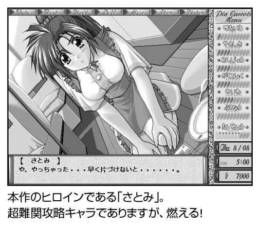
人参が増えない、即リセット！
ファミレスで働くのは約１ヵ月間。この期間中、朝起きて自由時間（あちこちに出かける、ヒロインに電話をかける、勉強するなど）を過ごしてから、昼になったらバイトに行く。そして仕事が終わった後は、ヒロインの中から、ひとりに話しかける、という１日を過ごします。
シフトの編成において選べる仕事は、フロアに出て接客する「ウェイター」、レジ打ちの「キャッシャー」、厨房では「料理」や「仕込み」、それに後片付けの「皿洗い」や「倉庫整理」があります。その種類によって、主人公のパラメータが上下し、女の子の好感度にも関わってくるという仕組み。
最近の『Ｐｉａキャロ』の続編をやってる人は「適当に会話を選んでやれば、女の子を攻略できるヌルゲー」と思ってるかもしれません。ところが、この初代のみは、がちがちのパラメータ管理ゲームとなっています。油断していると期限内に条件をクリアできず、ひとりも落とせません。
特に、厄介なのが主人公が片想いしてる（付き合いが長すぎて友達以上に進めない関係）ヒロイン「さとみ」。彼女を口説くには、パラメーターも愛情値も高めに持っていく必要があり、起こさないといけないイベントもやたらと多い。さとみと何度も会って「趣味が料理」と聞き出し、職場の同僚ともエッチしない程度に仲良くして、しっかり学力もアップしつつ、倒れないように休みも取る。１日ごとにリセットできる機能があるのは「人参（パラメータの上昇）が出るまでリセットしろ」 という意味と思い知る、ラスボスと呼ぶにふさわしい手強さです。ＰＣ‐９８０１の頃は、いやらしい目でウェイトレスさんを楽しむのも大変だったんですね。
（Ｔ）
哲学者も惚れたエロゲー
90 年代からはエロゲーでもマルチシナリオ・マルチエンディングが当たり前となり、選択肢による分かれ道が増えるにつれて、攻略もややこしくなっていきました。「前はいっしょに下校したから、今度は別れて帰宅しようかな？」とルートの分岐をメモして未来も知る僕らは、もはやゲームの中の主人公とは同じではありえません。彼らがある女の子と下校し、いろいろあって結ばれるのは１回限りの人生そのものですが、プレイヤーは主人公がたどるかもしれなかったすべての可能性を知る、いわば「神の視点」に立っています 。
ディスプレイの中でエッチをしてる生き物は手ごまにすぎず、一体感は失われたままなのか......？
当時、すでに「エロゲー業界の天才」と名声も高かった剣乃ゆきひろ氏（現・管野ひろゆき）が、「Ａ．Ｄ．Ｍ．Ｓ」（Auto Diverge Mapping System）を考案し、プレイヤーが主人公になりきる「真のロールプレイング」 に挑戦しようとしたエロゲー──それが本作『この世の果てで恋を唄う少女ＹＵ‐ＮＯ（以下、ＹＵ‐ＮＯ）』でした。
『ウィザードリィ』など迷路をさまようゲームに造詣の深かった剣乃氏は、自動的に地図を生成する「オートマッピング」をマルチシナリオにも導入できないかと考え、オート分岐マッピングシステム＝「Ａ．Ｄ．Ｍ．Ｓ」を発明 。通過してきたルートを目に見えるマップ化して、迷路のように行き来できるようにしたのです。しかし、本来なら一本きりの「運命」を主人公が自覚できるのは不自然です。そこで剣乃氏は、いま暮らしている世界と隣り合う無数の「並列世界（パラレルワールド）」という概念を取り入れ、「ルートが分岐する」＝「並列世界にジャンプする」 と解釈し直しました。
これにより、主人公は「神の視点」を得て、プレイヤーと一体になったわけです。
この革命的なシステムの虜となったエロゲーマーのひとりに、哲学者の東浩紀 さんがいます。彼は、著書『動物化するポストモダン』の中で、マルチシナリオを素材を組み合わせたシミュラークル（模造された世界）と位置づけ、70 年代以降の「ポストモダン」におけるオタクの「データベース消費」（キャラ萌えってやつです）と結びつけていました。
20 万本以上のヒット作を「再発見」して、ここからエロゲーの歴史が始まったように語る愉快な東さん を、エロゲーハンターは生暖かく見守っていきたいと思います。

並列世界を旅する宝玉セーブ
『ＹＵ‐ＮＯ』の主人公は、失踪した父から送られてきた装置を使って、並列世界を渡り歩いて「宝玉」を集めていきます。
この「宝玉」というアイテムは、並列世界にある特定のポイントにいつでも戻れる「宝玉セーブ」を可能として、異なるルート（並列世界）を行ったり来たりできるカラクリ です。
たとえば、井戸の中にノートの切れ端が引っかかっている、しかし降りる手段がない。そこで「宝玉セーブ」しておき、他のルートでロープを入手してから「宝玉」の地点に戻ればノートを無事にゲット、といった具合に、一本のルートに縛りつけられたゲームでは考えられない攻略ができるわけです。
ある人が脅迫されているシーンを見てから過去へと飛び、小悪党の企みをバラしてやるコント展開もあり、逆に落とし物の手帳を本人に早く返しすぎてドハマリ もあり、40 ～60 時間かかる攻略は歯ごたえタップリ。
惜しむらくは「Ａ．Ｄ．Ｍ．Ｓ」システムが楽しめるのは「現代編」のみで、すべての宝玉を集めると始まる「異世界編」は単純な選択肢型ゲームになってしまいます。
製作時間が足りなかったそうですが、近親相姦とカニバリズム（人肉食） をこれ以上掘り下げるとマズかったのではないかと思ってしまう限りであります。
（Ｔ）
「あの山は絶対面白い！」
──山本貴嗣『西遊少女隊』より
人間は、限界に挑戦する生き物である。過去、現在、そして未来の冒険家たちが苛酷な峻厳な山嶺に、深きわだつみの底に、輝く星々の彼方に挑むのは何故か。わかりきったことを聞いてはいけない。そこに、壁があるからだ。ファミコンがお茶の間にお目見えしてより２、３年も経過した頃、家庭用ゲーム機の世界にも、聳え立つ壁に果敢に挑みかかる無理、無茶、無謀な漢たちが現れた。
ファミコンでエロゲーを！ 「ファミリーコンピュータ」を商標登録するだけでなく、発売ソフトのファーストパーティによる審査を義務付け、生産についても任天堂に委託するという厳しいライセンス制度のもと、正規な手順に則った形でのファミコン用アダルトソフト販売が実現する確率は、限りなくゼロに等しかった。ゼロに等しいということは、すなわちゼロではないということだ。ハッカーの誇りにかけて、叛逆の雄叫びをあげた漢たちがいた。その第一波の中でも、最もよく知られている名前がハッカー・インターナショナルである。
ハッカー・インターナショナルもしくは株式会社マップジャパンが勇躍、その活動を開始したのは86 年頃のこと。代表者は萩原暁氏。後にレコード会社ワイズビジョナリーを起業したり、メイドカフェ事業を起こしたり、戦友であるソフマップ創業者の鈴木慶氏と組んで遊戯施設会社ファンタジーリゾートを立ち上げたりと、武勇伝を其処かしこに撒き散らすいわゆる業界の風雲児である。
86 年にもなるとファミコンのハードウェアは草の根のハッカーたちによってあらかた解析され尽くされており、ハッカー雑誌『バックアップ活用テクニック』の第２号において、すでにバックアップハード／ソフトが公開されていた。こうしたハッカー雑誌の広告欄はパソコン雑誌のそれとはまったく様相を異にしており、バックアップやソフトウェア改造といったいささか後ろ暗い用途で使われる、耳慣れない名前のソフトウェアが埋め尽くしていた。
そうした中に、ファミコンのディスクシステムをバックアップする「DISK HACKER」を発売していたハッカー・インターナショナルの名前もあった。このハッカー・インターナショナルが、インディーズのアダルトソフトを開発・販売するにいたる経緯については、本当のところはよくわからない。雑誌に掲載されたインタビュー記事や製品広告に書かれたことを鵜呑みにするならば「ファーストパーティによる不当な制限に対抗するため」ということになるが、販促効果を狙った表向きのリップサービス、メーカーがそう信じさせたい「公式見解」をそのまま信じるユーザはいない。結局のところ、当時の関係者たちの証言を集めて、多分、こんな感じだったのだろうとおぼろげに推測することしかできない過去の物語である。
どうやって開発していたのか？
ハッカー・インターナショナルがファミコン時代に発売したタイトルは40 タイトル近くに及ぶ。有名なのは後にＰＣエンジン版で続編が発表された『ボディコンクエスト』やＡＶ女優の小林ひとみや、当時、ロリコンマンガ家の代名詞であった内山亜紀を起用したシリーズ。変り種として、Fairytale（現Ｆ＆ Ｃ）の『LIP STICK』シリーズの移植物まで発売されていた。
ハッカー・インターナショナルものに限らず、当時存在していたファミコン用のインディーズソフトのほとんどがディスク媒体で供給されており、若干数存在したＲＯＭカセット版タイトルは任天堂の工業意匠とぶつからないように異なる形状のカセットを用いるなど、様々な回避手段が講じられていた。
開発に使われたのはＰＣ‐８８０１などのパソコンで、６５０２クロスアセンブラで開発したプログラムを「ＩラインＰＣ」という接続ハードでディスクシステムに転送したり、「トンカチエディタ」に代表されるディスクエディタでメディアに直接書き込むという方法が用いられた（ここで名前を出したハード／ソフトは共にアイツー社製）。ファミコンのディスクシステムは一部のパソコンでも採用されていたクイックディスクドライブであり、データセーブをおこなうためにデータの読み込みだけでなく書き込みもすることができた。ここに目をつけたハッカーたちが独自に書き換えツールを作り、ゲームのバックアップや改造に用いていたのを、さらに一歩進めて独自ソフトの開発にしてしまったのだ。
当然のことながら任天堂はこれを問題視し、様々なプロテクトを本体ハードウェアに施したが、パソコンや家庭用ゲーム機の解析記事を毎号掲載していた、いわゆるハッカー雑誌にすぐさま解除方法が掲載され、イタチごっこが続いたのである。
法的な問題をクリアするため様々な対策がとられたとはいえ、一般の流通がこれらのソフトを取り扱うはずもなく、一部のパソコン雑誌などに広告が掲載され、通信販売方式での頒布がおこなわれた。ハッカー雑誌『ＨＡＣＫＥＲ』の場合、88 年頃になるとほぼ毎号、表３や表４などの目立つ場所にハッカー・インターナショナルのフルカラー広告が掲載されており、いまならば「転売屋」と呼ばれそうな一部の購入者が売却したことにより、中古ショップや露店などにこれらのインディーズソフトが並ぶこともあった。なお、ハッカー・インターナショナルは連射改造したファミコン本体を「HACKER JUNIOR」と銘打って販売しており、これが任天堂の逆鱗に触れて裁判沙汰になっている。
時代はスーパーファミコンへ
時代が移り、ハッカー・インターナショナルはファミコンからＰＣエンジンへとプラットフォームを移行。その後、スーパーファミコンで活躍したブランドが西武企画（株式会社メディック）だ。西武企画の『ＳＭ調教師「瞳」』は、容赦なくハードかつエログロな描写が話題を呼び（昨今のいわゆる鬼畜ゲーを見渡しても「目ファック」描写がある作品は流石にない）、いまなお熱心な支持者が存在するシリーズ作品である。
『ＳＭ調教師「瞳」VOL.1』と『ＳＭ調教師「瞳」VOL.2』が発売されたのは90 年。第１作目となる『ＳＭ調教師「瞳」VOL.1』のヒロインは憂本瞳という名の16 歳の少女で、倒れた父の入院費と借金を稼ぐためにヤクザに調教され、水商売で稼がされるあたりまでは典型的な鬼畜ストーリー。その後、若くして貿易会社を営むヤンエグ社長（笑）に見初められ、借金を清算することに成功するのだが、ここでハッピーエンドにならないのがこのゲームの凄いところ。水商売に身を落としている間にすっかり性的に開発され尽くした瞳は、強くて自立した女になろうと何故かＳＭクラブの経営者となり、変態プレイを存分に愉しんでジ・エンドという、ここでやっとタイトルの意味がわかるびっくり展開がプレイヤーを待っている。
この１作目と２作目から５年ほど間を置いて『VOL.2 REMIX』『３』『番外編』が発売された。『３』のキャラクターデザインはマンガ家の町野変丸氏。また、『VOL.2 REMIX』以降のシナリオを担当したのは梅宮貴子氏である、らしい（伝聞につきちょっと弱気）。
御存知の通り、スーパーファミコンのメディアはＲＯＭカセットのみであり、ディスクシステムのような便利な抜け道は存在しなかった。そればかりか、スーパーファミコンのライセンス体系は、さらに厳しいものになっており、独自にＲＯＭカセットを開発しようにも費用的に折り合わなかった。『ＳＭ調教師「瞳」』シリーズの場合、驚天動地とも言える方法でこの問題をクリアした。既存のスーパーファミコン用カセットを大量に購入し、ゲームプログラムとデータを収めたＲＯＭチップのみ入れ替えて、製品名を印刷したラベルを上貼りして販売したのである。販売元の言い分に従えば、「自分が購入した自動車を改造した上で転売して何が悪い」という理屈である。
ジーコサッカー
スーパーファミコンの全盛期である90 年代前半、すでに家庭用ゲームソフトの中古市場が確立しており、いわゆるクソゲーの投げ売りが始まっていたからこその芸当だろう。95 年に『ＳＭ調教師「瞳」VOL. 2 REMIX』などの新作が発売された際、「基板」として引っ張りダコだったのが94 年に発売され、後にワゴンセールスで10 円の値段がつけられていたと噂されるサッカーゲーム『ジーコサッカー』だった。いまでも、『ＳＭ調教師「瞳」』のタイトルを聞くと『ジーコサッカー』を連想するスーパーファミコンユーザが少なからず存在している。
ここでＰＣエンジンに活動の場を移したハッカー・インターナショナルに目を転ずると、アイドルのそっくりさんを起用した『アイドル花札ファンクラブ』やファミコンでコアな人気を博した『ボディコンクエスト』の続編や『ストリップファイターII 』『ＣＤ麻雀美少女中心派』など、あからさまに元ネタのソフトがバレバレなパロディ路線を突き進んでいた。
ＰＣエンジン時代初期のメディアは香港あたりの工場で生産したと思われるＨｕカードで、前傾の『ＣＤ麻雀美少女中心派』からＳＣＤに移行するも、いくつかの作品を発売した後、ぱったり名前を聞かなくなってしまった。が、後に株式会社マップジャパンとしてプレイステーション向けに美少女育成シミュレーションゲーム『ヒロインドリーム』シリーズを発売し、ハッカー・インターナショナル時代を知っている古参ゲームファンを驚愕させるのだが、このあたりについては本稿の主旨から外れるので割愛する。
ハッカー・インターナショナルに続いてＰＣエンジン版のインディーズソフトを手掛けるようになったのがオフィスアジア研究所だ。アニメ調のいわゆる萌え絵による過激な性描写がウリの『しあわせうさぎ』シリーズで人気を博した。この、オフィスアジア研究所については現在に至るも、ほとんど情報が流れておらず、シリーズといっても『真説しあわせうさぎ』以降の作品については別の開発者なのではないかと考えられている。なお、『真切しあわせうさぎｆ』は『新世紀エヴァンゲリオン』のパロディ作品である。
歴史の裏にすら残らないソフトたち
以上、駆け足で家庭用ゲーム機のインディーズエロゲーの動向を追いかけてみた。
80 年代後半から90 年代前半にかけて、各プラットフォームにおいて発売されたタイトルを合計してもおそらく１００タイトルに届くか届かないかだろう。個別に見ればヒット作と呼べるものがあったかも知れないが、市場を形成するほどのものではなく、ごく一部のコアなマニアが特権的に享受した金と手間のかかる娯楽であったことに疑いはない。
ＥＰＳＯＮの互換機の登場によってコンシューマユーザの手の届く価格帯に落ち着いたＰＣ‐９８０１シリーズの普及と、91 年頃に始まる美少女ゲームタイトルの爆発的な増大に伴い、エロを求めるユーザはそちらに流れ、家庭用ゲーム機においても『ときめきメモリアル』に代表される恋愛ゲームの登場やＰＣ‐９８０１用美少女ゲームからの移植タイトルなどの要因により、インディーズのエロゲーはその存在価値を失った。『ＳＭ調教師「瞳」』のように異色作としてエロゲー史にその名を刻んだ僅かな例外を除き、後続作品に影響を与えることもなく、ほとんどが忘却され、ゲーム史の裏舞台すらからも徐々に姿を消していったのだ。
時代の徒花──と、呼んでしまうことは、たやすい。たとえ、未来に何も遺さなかったのだとしても、「ファミコンでエロゲー！」という少々世間様に顔向けし辛い旗印のもと、ヒマと、汗と、涙と、持てる技術のすべてを結集し、不可能を可能にするため果敢な挑戦をおこなったハッカーたち。そのスピリットは確かに、かつてそこに存在していたのである。

最高のエクスタシーアイドル
事務所を設立し、かおりをスカウトしてきたプレイヤーは、１年間の間にファン１００万人を達成、「最高のエクスタシーアイドル」（オープニングより）に育て上げなければなりません。
ジャンルは育成もの。スタート時の所持金はたったの１００万円ですが、かおりはとにかくランニングコストがかかります。「発声練習＝１万２千円」「ダンスレッスン＝１万４千円」「エステティックサロン＝１万８千円」......などなど、金額が妙にリアルなのが胸を締めつけます。中には２万５千円もかかる「オナニー教室」 「フェラレッスン」などというレッスンもあり、コマンドを実行するたびに生きた心地がしなくなります。
かおりは「オナニー教室」に行かせるたびに「あたしをオナニーの達人 にするつもり？」などと囁いて下さるのですが、こっちはもうそれどころではありません。
レッスン以外のコマンドも金がかかります。かおりをテレビ局や雑誌社に売り込みに行く「プロモーション」は一律２万円。「休み」もパチンコが２万５千円、ショッピングが３万円、国内旅行などしようものなら30 万円もの金が吹っ飛びます。さらに、かおりに給料を払わなければなりませんし、事務所の維持費もかかります。何も考えずにプレイしていたのでは、３ヵ月～半年でサックリと破産できてしまうのです。
本作では「仕事」しか収入がないのですが、この「仕事」がリアルな仕様になっています。
かおりは能力値とプロモーションに応じて様々な仕事を入手できるのですが、ある程度、長期間にわたって続くこともあれば、数回で終わってしまうこともある......と実に不安定。
しかも期間を教えてもらえないため、気がつくとプッツリと仕事が途絶えていたり します。もちろん、ここで給料や維持費の支払いがくればゲームオーバーの危機。
結果として、もらえる仕事には、すべて食いつき、偏執的に「プロモーション」を繰り返すという、妙にリアルな本作のプレイスタイルが完成します。食えるときに食うのが戦士の掟......という松本零士先生のお言葉が心にしみいります。
芸能界というよりはスラムの生き残りゲーム。捨てられないためなら、なんだってやります。「企画もののＡＶ」「深夜のエッチドラマ脇役」「週刊誌の特集ヌードモデル」「撮影会のヌードモデル」、なんだって平気です。
『月刊ソクヤリ！』
メーカーが、アダルトビデオのｈ．ｍ．ｐ．らしく、グラフィックはすべて３ＤＣＧ。もちろん１９９７年のことですからトゥーンシェイドも何もなく、顔のテクスチャが「アニメ顔風」なほかは実にシンプル。
おかげでエログラビアの撮影だろうが「オナニー教室」に通わせようが、一切の煩悩が発生しません 。
これぞ悟りの境地。
「アダルト業界に旋風を巻き起こす」ために「最高のエクスタシーアイドル」にするための素材が、かおりなのですが、よくよくパラメータを見るとエロ関連の能力値が「セクシー度」ただひとつであることが発覚して愕然とします。とはいえ、ゲームを進めるとかおりとの絆っぽいものが感じられるのが不思議。「ストレスがたまるとお笑い芸人と寝る」という悪癖も、「まあ仕方ないか」で許せてしまいます。
彼女はコマンドを入れるたびに「ラッキー」「サンキュー」「そんなー」などと感情豊かな声を上げます。最初は「きっとコマンドの善し悪しを教えてくれているに違いない」と不満げな声が上がるたびにコマンドを変更していましたが、実はただのランダム（だから休暇に「クリスマスパーティー」に誘って「そんなー」と言われてもへこむ必要はないのです）。そんなアバウトさも個性に思えてきます。
「絵画と料理のできるＡＶ女優」を目指した初代かおり、「しゃぶれて踊れる芸能人」を目指した２代目かおり、「演技のできるセクシー女優」を目指した３代目かおりはその方向性が理解されずに終わりましたが、４代目は平均的に能力を上げることに決定。
休みは週１日、コマンドは一番安い８千円の「美術館に行く」、後はすべてレッスンと仕事とプロモーションに費やします。『月刊ソクヤリ！』『月刊エロリンゴ』などあんまりな名前のグラビアも笑顔で引き受け、テレビへのプロモーションを重視。深夜のエッチドラマにもニコニコと出演します。
破産することなく、なんとか１年を乗り切り、ついにエンディング。結果は「売れないコメディアンになりました」 とのこと。相方（画面では、ひとりですが）はストレスがたまるたびに何度か寝ていたお笑い芸人なのでしょうか。
エンディングは「歌手として大成」「ソープ嬢」「スナックのママ」「謎の宗教に走る」など様々ですが、お笑い芸人のことを考え合わせると、「売れないコメディアン」エンドが芸と女の幸せを両立しているような気もします。
かおり、幸せになれよ 。
（Ｙ）
ダーク路線からハートフル学園ものへ転換！
テキストとグラフィックを組み合わせた〝読むエロゲー〟のビジュアルノベルを確立したリーフ。その第三弾として『To Heart』は登場しましたが、筆者が最初に見かけた予告というのは、前作『痕』のパッケージに同封された（記憶違いならすいません）１枚の紙切れ。
ビジュアルノベルの第一弾、『雫』が晴れた日に毒電波を送る美少女（や「ちんちん」を連発）、次の『痕』がその流れを汲みつつ悲劇色の強い伝奇ストーリーで、どちらも大量に人が死ぬダーク路線です。その第三弾を予告したイラストが......ハートフルな学園ものぉ？
もう、頭の中では「この幸せそうな女の子たちがどうやってどん底に突き落とされるんだろう？」と『学園ソドム』ばりの妄想ムービーが流れっぱなし。
ところが、誰も不幸にならないし、灰田先生も人質もいません。だ、だまされたッ！ 後にシナリオライターの高橋龍也氏と原画の水無月徹氏のコンビは、マニアックな色が濃かった『雫』や『痕』より、広い客層を狙って売上に貢献するよう企画したと語ってましたが、たしかに毒電波好きの市場は先細りになりそう 。
前２作でも、高橋・水無月コンビは『雫』の元気少女さおりんや『痕』のランドセルがよく似合う初音ちゃん（注：攻略可能キャラ）といった優れたキャラ造形を手掛けていましたが、この東鳩（本作のファンの通称）では〝萌え〟の引き出しが一気に花開き、のんびり屋の幼なじみや巨乳メガネッ子の委員長、内気で無口でお嬢様の魔女っ子先輩などを次々と投入。
いままでの幼なじみは「ずかずか部屋に上がり込んでたたき起こしに来る」、お嬢様といえば「勝ち気でタカピー」と固まりかけたところに、上手くお約束を外したキャラの数々は〝萌え〟のストライクゾーンを広げる役割を果たしました。
しかし、東鳩のストライクゾーンは常識をはるかに超えて、人間という枠組みをも突き破って拡大しました 。アンドロイドだっていいじゃないか、人間だも......いや人間じゃない「マルチ」の誕生です。
人間じゃなくたっていい！
来栖川エレクトロニクスが開発した汎用人型メイドロボットの試作型、正式名称「ＨＭ‐12 型」が、試験運用として、主人公の学校に送り込まれてきます。通称「マルチ」は美少女そっくりの姿形を持ち、最新の高性能ロボ......のはずが、人間と同じように経験を積んでいく「学習型」のため、役立たずのドジッ子 。仕事をしくじっては「はわわ～ごめんなさいですぅ～」と健気で一生懸命ですが、やっぱり役立たず。来栖川に返品されても仕方ない感じですが、ちゃんと下半身に特定の機能は実装されてたりします 。会社の資金を使い、いやらしい冷却水 を垂れ流せるようにした長瀬源五郎さん（マルチの開発主任）はエンジニアの鑑ですね。
いま筆者もボロクソ言ってますが、数年前に『クイック・ジャパン』誌がギャルゲーを特集したときの表紙がマルチだったものの、画質の悪さに腹の底から激怒したと告白します。
俺のマルチになんてことを！
エロゲー版が大人気だった勢いで、家庭用のＰＳ２版にも移植され、攻略キャラも増えていたり、長岡志保（エロゲーには珍しく、主人公と友達づきあい）のシナリオが大きく変わったりしています。が、いまだにひとつだけ心残りが......親友の佐藤雅史（男）とのトゥルーエンドの追加はまだですか 、こんなに可愛いのに！ あれ以来、筆者は男を落とせるエロゲーを無意識に求めてさ迷う旅を続けてるのかも。
（Ｔ）
エロゲーの可能性を追求
１９９８年と言えば、『To Heart』『Ｐｉａキャロットへようこそ!! ２』『同級生』『この世の果てで恋を唄う少女ＹＵ‐ＮＯ』といった作品により、エロゲーのゲームとしての側面が注目されていた年。『夏色デスティニー』はそんな年に発売されたエロゲーです。
本作が広告において「行動で主人公のパラメータが変化、受け／攻めが変化する」「お好みのエッチシーンが楽しめるＦＦシステム搭載」「制服着せ替えモード15 種類」 など様々なシステムをアピールしたのも、システムを重視する時代の流れがあってのこと。『夏色デスティニー』も、ほかの作品と同様に、エロゲーの可能性を追求していたのです。
主人公は女の子にしか見えない容姿の少年。夏休みの間、祖母の代わりに女子寮の管理人を務めることになります。女子寮にいるのは天然系の「白川奈々子」、薬で成長が止まってる（マニュアルより）「牧原悦子」、眼鏡っ娘「夏木知絵」、スポーツ少女「西隠寺ゆりか」、オタクの「峰山美保」ら５人。果たして主人公は管理人の職務を無事まっとうできるのでしょうか。
本作のシステムはいわゆる「育成もの」風。主人公は「体力」「清潔」「知力」「気分」「気力」の５つのパラメータから構成されています。
これらのパラメータは、朝・昼・夜と、１日に３回のコマンド入力で変更することが可能。「洗濯」「料理」「休み」「掃除」「運動」「勉強」「歩く」といったコマンドはそれぞれに役割が異なっており、たとえば「洗濯」ならば「気力」が若干回復し「清潔」、「気分」が上昇。「運動」なら「気力」と「体力」「気分」が上がる代わりに「知力」「清潔」が減少......と上げたいパラメータに応じて使い分ける必要があるという案配。
これに「行動で主人公のパラメータが変化、受け／攻めが変化する」「お好みのエッチシーンが楽しめるＦＦシステム搭載」といったシステムが加われば、さぞや複雑かつやりごたえのある内容となるに違いありません。
おりゃ、ヤらせろよっ！
とりあえず寮の管理人として「洗濯」「料理」「掃除」あたりは欠かさずやっておいたほうが良いだろうか......と思いつつコマンドを実行すると、実にユニークなイベントが展開されます。
「洗濯」を選ぶと年頃の少女に「汚れ物を出せ」と迫ります。
「料理」コマンドでは人様から預かった大切な娘さんにスペルマ入りの料理を振る舞います。
「掃除」を選択すると、約束の時間に現れなかった業者に「東京湾に沈める」とスゴみます。
そのほかのイベントでも「かっこいい俺に愛の告白に違いない」「おりゃ、ヤらせろよっ！」 「俺がハチに刺されて死ねばいいと思ってるんだろう」「とにかく、周りに言われたくなきゃしゃぶれよ！ ほら！」など名セリフのオンパレード。
夜に寮の住人の部屋を訪ねても、和やかに談笑するようなオプションは端から存在せず、主人公からのアプローチは基本的に「覗き」か「レイプ」。
パッケージには「女子寮ではじまる夏の恋物語」「純愛アダルトＳＬＧ」と書かれているのですが、本作はバイオレンスな純愛を提唱するのがテーマなのでしょうか。
５人の少女もなかなかにユニークです。ある夜、寮の２階をパトロールしていたら、５人中３人がひとりでサカっていました。また、別の夜などは５人のうちふたりが行方不明になっていました。
まさに無法地帯 としか言いようがありません。
システムもユニークです。本作には「気力」というパラメータがあるのは前述したとおりですが、寮の中や町、学校では一歩移動するごとに「気力」が減少。これが０になると強制的に移動終了となります。つまり、遠くの場所へ行こうと思ったら、あらかじめ「休み」や「運動」といったコマンドで「気力」を貯めておかなければならないのです。舞台となる寮の中や町、学校は結構広く、特に町はなまじの覚悟では回りきれません。きっちりと予定を立てずに外出しようものなら、管理人室からふらりと一歩外へ出ただけで「気力」が尽きてしまい、２階にもたどり着けずに移動終了なんてことになってしまうのです。寮の中で行き倒れる という経験ができるゲームなんてなかなかありません。コマンド名こそ「移動」というありきたりなものですが、その中身は登山や探検に近いと言っても過言ではないでしょう。
制服を変更するというコマンドもなかなか味わい深いものがあります。
本作ではギャルの制服を「オリジナルセーラー」「ベスト」「スタンダードセーラー」「サマーセーター」の中から自由に選択することが可能。カラーバリエーションも含めれば16 種の制服を着せることができます。
この制服変更はコマンド受付時なら、いつでもおこなうことが可能。
つまり１日３回、朝・昼・夜と制服を変えてもＯＫ。「朝令暮改」どころの騒ぎではありません。ビバ制服変更。制服変更バンザイ！ 学園はオレのもの！ 今回は黄色のベスト、次はピンクのサマーセーター......と嬉しがって制服を変えまくっていたのですが、なかなか制服姿のギャルに出会えません。
それもそのはず。本作はそもそも寮での話。ギャルたちは寮では私服を着ています 。ならば、と「気力」を貯めて学校へ行ったとしても、夏休みなので人もまばら。
イベントもプールで水着ギャルに突き落とされたり、体育倉庫や教室でサカっているところを覗いたりといったものが多く、なかなか制服姿は拝めません。
気がつくと、何かを学んだ感覚と共に制服変更のコマンドを選択するのを止めていました。
広告の文句はどこに??
そうこうしているうちに月日は流れ、覗きまくりレイプしまくりザーメン入りの料理を食わせまくった寮の娘たちともお別れです。
８月26 日でゲームが終了しました。
本作はハードディスクにインストール不可能なため、ＣＤのアクセスが割と煩わしかったりもしたのですが、クリアしてしまえばいい思い出です。ふう......と一息つきつつ、あることに気が付きました。「行動で主人公のパラメータが変化、受け／攻めが変化する」「お好みのエッチシーンが楽しめるＦＦシステム搭載」......広告でウリになっていたふたつのシステムですが、どちらもゲーム中に出てきた記憶がありません。何か釈然としないものを感じつつ、ＣＤの中身を覗いてみます。ヒントや攻略の書かれたテキストファイルがあるかも知れません。
ＣＤの中に置かれた「dabun.txt」というファイルには、そのすべての答えが書かれていました。
途中まで作成したものを一度破棄し、１ヵ月で作り直したのが現在の『夏色デスティニー』であること。元のバージョンはシステム的にもシナリオ的にも、かなり問題がある出来であること。途中まで制作されていたＣＧをパズルのように組み合わせて作られたのが現在のシナリオであること。テキストを読み進めていくうちに、『夏色デスティニー』スタッフの苦労が伝わってきます。
マスターアップ直前の殺伐とした状況さえもが見えてくるようです。
納期までの時間はたった１ヵ月。ＣＧのみが途中まで存在しているだけの状態で、シナリオもシステムも店頭デモも、すべて新しいものに差し替えなければならない。これはかなりの悪条件と言えるでしょう。そんな中で、曲がりなりともエンディングまで動作するものを作り上げたスタッフ。
発売中止ともなれば、様々な損害が出るものですが、彼らのおかげで最悪の事態は回避されたのです。
ゲームを作るということは、きれいごとばかりではありません。辛いことや苦しいことがほとんどであり、時には本作のように、ほかのチームがやるべき仕事を肩代わりしなければならないことさえあるのです。
ショッキングな内容の「dabun.txt」ですが、これをＣＤに入れたくなった気持ちもよくわかります。このテキストファイルは、１９９８年のエロゲー界の混乱をいまに伝える歴史的な資料 とも言えるでしょう。
ところで、このＣＤにはボツ版の『夏色デスティニー』も収録されています。ボツ版はスタンダードなコマンド選択型アドベンチャー。各種のパラメータも本編とはまったく異なり「男性ホルモン」「体力」「家事の能力」「不満度」「鬼畜度」の５種。どうやら広告の「行動で主人公のパラメータが変化、受け／攻めが変化する」システムは「男性ホルモン」「鬼畜度」辺りが関係する模様。
主人公の友達「健男」や京都弁の女友達「弥生」など本編にはいないキャラも登場（なんと「健男」はＣＧまである）。本編には存在しない「電話をする」コマンドでプレイヤーのステータスを教えてくれます。
制服セレクトはオープニングの１回のみで、「お好みのエッチシーンが楽しめるＦＦシステム」らしき選択肢も確認可能。逆にプレイヤーを手こずらせた「気力」システムは影も形もありません。各キャラクターの性格は本編ほどエキセントリックではないのですが、選択肢とパラメータの因果関係がわかりづらく、テンポもややスロー。してみると『夏色デスティニー』のゲーム性の多くは、本編スタッフによる工夫の賜物というわけです。図らずも「ひとつの素材を別のやり方で調理する」というアンソロジー的なゲームとなったのが本作。１９９８年、エロゲー業界はまだまだ揺れ続けていたのです。
（Ｙ）
続編が抱える悩み
読者諸兄は「エロゲー」といえばどんな内容を思い浮かべるでしょうか。
「可愛らしい女の子に囲まれてウハウハ」
「ボクを頼りにしてくれる美少女たち」
「運命の、そして永遠の絆」
......そんなふうな「いわゆるエロゲー」像に当てはまらないゲームがあります。その名は『Ｔｈｅガッツ！』。１９９９年から現在までに作品数は５を数え、続編の予定もある一大シリーズです。
エロゲーやギャルゲーにおいて続編を制作する際に問題となる部分があります。それは主人公とヒロインの関係。エロゲーやギャルゲーでは基本的に主人公とヒロインが結ばれてハッピーエンドとなります。そして、近代エロゲーやギャルゲーは複数ヒロイン制が基本。そこで続編を作るとなると、どのヒロインと結ばれたのが「正史」扱いとなるのか......で一悶着起こるのです。
作品タイトルになっていたり、作り手的にイチ押しだったりするヒロインが「正史」扱いとなるのですが、そうならなかったヒロインの扱いも考えなければなりません。まるで未亡人のように「主人公一筋でいろ」というのもなんとも酷な話。
いまは戦前ではありませんし、彼女らにも幸せになる権利があります。
だからといってサブキャラとくっついていたりするのを見るのも複雑な気分 。自分が「正史」扱いとならなかったヒロインを気に入っていたりしたら尚更。自分的に真エンディングと認定したあの誓いが嘘だったのか、となってしまいます。
この問題を解決するために、「前作の主人公を死亡させて関係を清算する」 という荒技や「前作の主人公に代わって、新たな主人公が登場」というウルトラＣが試みられましたが、前者ではオープニングで展開される前作主人公（つまり自分）の葬式に沈鬱な気分になり、後者ではヒロインたちが新主人公と仲良くする様に浮気現場を目撃したような錯覚に陥る......となかなか理想的な解決とはなりませんでした。
サクサクとヤリ捨てられる主人公
現在のエロゲー界では「ファンディスク」というパラレルワールド的な世界を提供するという方向性で落ち着きましたが、『Ｔｈｅガッツ！』では画期的な解決法を採用していました。
それは「ヒロインが作品ごとに主人公をやり捨てる」というもの。このシリーズでは一作ごとに主人公が変更されます。加えて「前作の主人公が颯爽と登場」したり「ヒロインが前作の主人公を心の底から懐かしむ」ようなシチュエーションは発生しません。主人公はサクサクとやり捨てられていき、エンディングの後にどうなったのかは一切不明。なんたる男らしさでしょうか。
では、こんな蛮行を可能とするヒロインたちとはどんな人々なのでしょうか。
『Ｔｈｅガッツ！』シリーズのヒロインは「猫柳建設」に勤める人々。「タカさん」こと高原美奈子、「お嬢」こと大島睦月、「アキラ」こと早坂彰はいずれも事務などの裏方ではなく、男に混じって肉体労働をこなす女傑たちです。
３人の中では一番小柄なアキラでさえ、身長１６０センチと女性としてはやや高め。お嬢も愛称のイメージとは裏腹に、そこらの男よりタッパのある１７６センチですし、タカさんに至っては、天龍やロック様（いずれもヘビー級プロレスラー）と同じ１８９センチ 。
エロゲーヒロイン身長ランキングがあるならかなりの上位に食い込める逸材です（身長データは『Ｔｈｅガッツ２！』マニュアルによる）。
ギネス目指すぞ！ギネス！
ゲームの舞台となるのは工事現場。女の子しかいない王国でもオシャレなファミレスでも素敵なしきたりがある田舎町でもアイドル級の美少女満載の女子校でもありません。工事現場の肉体労働を再現するのは「連打」 。マウスのボタンを高速連打し、制限時間内にノルマとなっている連打数を超えればＯＫです。
あまりにもわかりやすすぎるゲームデザインですが、連打しまくっているうちにハイになってくるのが不思議。まさにバーチャル工事現場というわけです。
本作のジャンル名はなんと「マッシヴ・エロコメディ」。普通「レイプ」とは男性が女性を強姦することを指します。エロゲーでは伝統的なジャンルであり「黒箱」 なる愛称（レイプ系のソフトは基本的に箱が黒い）もあるほどの人気ですが、本作における「レイプ」は通常とは逆で、タカさんら女傑たちが主人公をめちゃめちゃにするのが基本ライン。
「そして......俺は、ただ我が身に襲い来る肉の嵐に身を任せていた。だって、抵抗なんかしたら、多分殺される し」
「抜かずに何発イクか、記録にチャレンジだ!! ギネス目指すぞ、ギネス!! 」
という一文がすべてを表していると言えるでしょう。
普通エロゲーとは、美少女に背中を流してもらって「背中、広～い」なんて言ってもらうものですが、『Ｔｈｅガッツ！』シリーズでは主人公がタカさんの背中の大きさと硬さに驚嘆するのです。
『Ｔｈｅガッツ！』の衝撃も冷めやらぬうちに、続編『海でガッツ！』『山でガッツ！』が発売され、「マッシヴ・エロコメディ」はジャンルとして認知されました（後続作品はありませんし、これからも現れないでしょう ）。
浜茶屋を巡る騒動や温泉旅行を通じてタカさんら３人のキャラクターも定着。
「タカさんの姉であるスキンヘッドの女やくざ」や「お嬢のライバル」などヒロインたちに絡んだサブキャラクターも登場。『Ｔｈｅガッツ！』ワールドも確立されてきました。当然、次は『空でガッツ！』で陸海空制覇......とくるところでしょうが、オーサリングヘブンは一味違いました。
４作目のタイトルは『私立ガッツ学園』。ガッツで学園。おお、オーサリングヘブンがファンディスクなんて普通のソフトハウスみたいな所行を！ 学園となれば、彼女たちの学生生活が描かれる、連打も筋肉もない普通の学園エロゲーに違いないのです。
たまには『ガッツ！』で骨休め......などと浮かれていた自分は本当にバカ でした。確かに『私立ガッツ学園』は、タカさんらの学園生活を描いた作品でした。
しかし、タカさんは学生時代から筋肉ムキムキであり、お嬢やアキラとつるんで「土木研究会」を率い（略して「土研」、戦前から続く由緒ある部活らしい）、学校の各所を工事して回っていたのです。
桃色ループに耐えられない！
『ゲゲゲの鬼太郎』の妖怪ポストのような「土研ポスト」に投函された工事依頼をこなしていく「土研」メンバー。
エロゲーではクリアしたエロシーンを「回想」できるのが常ですが、なんと『私立ガッツ学園』では工事のシーンが「回想」できる というオマケ付きです。アスファルトをバーナーで炙り、水をまき、油を抜くために石灰をまき、練ったコンクリを持って駆け回るというリアルな工事現場を何回でも見ることができるのです。
もちろん操作形態は伝統の連打。もう『ガッツ！』はどこまでいっても『ガッツ！』なのです。
続く『Ｔｈｅガッツ５！』では再び舞台は現代に。山の中にバイパス道路を作るために出動した我らが「猫柳建設」。今回はタカさんとケンカ別れした旧友も登場。またひとつタカさんの過去が明らかになります。
舞台となるのは山の中の飯場。オジサンたちと寝部屋で雑魚寝し、仕出しの弁当を食って頑張る、リアルな生活が描かれます。
恒例となった特殊な回想シーンもオジサンたちとのエロ話や寝つけない夜の酒盛り、怪談大会など飯場テイスト 。回想モードさえなかった初代『Ｔｈｅガッツ！』から比べると大きな変化であり、物語性への配慮という進歩です。
確かに『Ｔｈｅガッツ！』は異端のエロゲーですが、時代の流れから孤立しているわけではないのです。
もちろん、筋肉も連打も健在。連打→エロシーン→連打→エロシーンという繰り返しはお馴染みながらも脳が溶けそうになってきます。いままで主人公が毎回変更されてきたのは、この桃色ループに耐えられなかったからで、きっとエンディングの後にさっくりと燃え尽きている に違いないのです。
本当になんでもあり
『Ｔｈｅガッツ！』はエロゲーの懐の深さを体現したような作品です。
若年層を熱狂させるエッジな作品がある一方で、『Ｔｈｅガッツ！』のようなエロ抜きで語れない作品も存在する。
ふたつの作品は一見異なるようでいて、どちらもエロゲーというジャンルにおいて語られる。エロがあればなんでもありなのがエロゲーの原則ですが、現代のエロゲーは本当に「なんでもあり」 なのだということを教えてくれるのが『Ｔｈｅガッツ！』なのです。
エロゲーというジャンルが生まれてからしばらくたちます。
毎年毎年「業界の危機」みたいなことが叫ばれていますが、なんとか続いています。エロゲーが本当に危ない状況になるのは『Ｔｈｅガッツ！』のような作品がなくなり、ゲームの全部が全部、似たような作品になったときではないでしょうか。
『Ｔｈｅガッツ！』があるうちは、エロゲーの世界も安心 なのです。
（Ｙ）
人類の終末は......全員メガネッ子！
次の週末に人類は滅亡だ。
「週末」と「終末」を一文字変えたら大違い 。けど、明日この世が終わらないという保証だってどこにもない。「週末」と「終末」に大した差って、本当にあるの？ ぞっとする甘美な問いかけをした『終末の過ごし方』という作品は、80 年代末の「核戦争でいつか人類も文明も滅びるかも」って感じたリアルさの残響かもしれません。
かといって世紀末バイオレンスにも関わりを持たず、ただ静かに「終末」を迎えようとする主人公たち。大阪でも暴動が起こってる様子──特に天王寺周辺（元・住民としてすいません ）も騒がしい状況で、諦めたように学校に通う彼らが送る、非日常という名の日常。
授業やクラブ活動が淡々と続く学校の風景。しかし、世界のほころびは、ひたひたと生活の場を浸食していく。
が、悪いことばかりじゃない。
２年前に心がすれ違った少年と少女。暇つぶしとばかりに患者を診る保険医と、年上の人にあこがれる男子生徒。まだ自主トレを続ける陸上部の女子と、学外からふらりと入ってきたパン好きの男。終わりなき日常の中では素直になれなかったカップルたちが、ひとつになる過程が同時進行で描かれていくのです。と、らしくないことを書きましたが、見どころは女の子全員がメガネっ子 。この終末って目に悪いのか？ 本番ヤるときもメガネを外さないんですよ。終末、サイコー！
（Ｔ）
元祖「泣きゲー」！
エロゲーは、年を追うごとに、実用本位の〝抜きゲー〟から感動を重んじた〝恋愛ゲーム〟へのシフトが起こりました。実際はキャラの立ち絵と背景を組み合わせた「ビジュアルノベル」の作りやすさによるところが大きいんですが、エロゲーマーたちも「仮想の女の子を欲望のままに犯す」ことにさえ耐えられない、さらなる心のもろさを得たのかもしれません。
そんな流れの中、たしかな一線を飛び越えた作品として記憶されるべきが『ＫＡＮＯＮ』というエロゲーでした。恋愛ゲームから〝泣きゲー〟へ──現実の女性に相手にされないから「逃避」の対象とするのではなく、より精神性の高いステージ に進むための、「自分はエロゲーをやってていいんだ！」 とうたう自己肯定ツールへの変質。その後の「泣きゲー」は、すべて本作の影響を受けているといって過言ではありません。
が、反面では、エロゲーマーが「うぐぅ」が口癖で抱き枕を嫁にしてる種族 といった誤解（？）を悪化させ、一般人との断絶を深めた気もしますが......。
北国の街で記憶を探す
主人公・相沢祐一は、家庭の事情により、住み慣れた街を離れて、北国の街にある従姉妹の少女の家に居候することになる。７年ぶりに訪れた雪の降りしきる街。しかし、幼い頃の出来事を思い出せない。そんな祐一は、かつて出会った少女たちと再会するが......。
一体、７年前にどんな事件が起こったのか？ 少女たちとの出会いと付き合いを通じて、封印されていた記憶が蘇っていく──という展開は、主人公を情報を持たないプレイヤーと同じ視点に立たせ、一体感を与えてミステリーの緊迫感を出すうえでは、非常に正しいやり方ではあります。けど、祐一って早い話が記憶喪失 ですよ！
で、どのシナリオも、基本的には「ひみつの想い出」を思い出してくれるまで、相手の女の子が気長に待つという構造は共通してます。「過去を知ってるなら早く教えてやれよ！」 なんて突っ込んだりする人は嫌いです......と栞（ヒロインのひとり）なら言うかもしれません。
ヒロインたちは７年前に主人公と関わったせいで（一部例外あり）、まあ偏差値なんかじゃ計れない規格外の個性 を身につけちゃったわけです。〝非日常〟もいいところの変わり者と、家庭や教室、休み時間や夜の誰もいない学校なんかで、育まれるふたりの〝日常〟。「過去」の重みと同じだけの「いま」を積み重ねたとき、北国の雪に埋もれていた「約束」が姿を現し──ていねいに伏線を張って回収してる、いい話じゃありませんか。
しかし......シナリオがめっさ長いです 。こういう「テキスト量のインフレ」 についても本作は先駆けなんですよね。
ヘンな口癖と偏食
ヒロインはぼんやりした従姉妹の「名雪」、病弱少女の「栞」、祐一をつけ狙ってる子供っぽい「真琴」、夜の学校で戦ってる剣士の「舞」、そして天使の羽根を生やした「あゆ」の５人（＋隠しシナリオひとり）。後半の３人は意味がわからない かと思いますが、〝非日常〟にぶっ飛んだ世界なのでノー問題です。彼女たちの特徴は、ヘンな口癖と特定の食べ物への異常なこだわり 。あゆは「うぐぅ」と言って、腹が減ったらたいやきを盗んでくる生物ですし、舞は夜の学校で祐一により、差し入れという名の餌づけをされて牛丼大好きッ子に。真琴は「あぅー」と困りながら肉まんをパクつき、まともそうな名雪も「朝～朝だよ～」と言いつつイチゴサンデーばっかり食ってます。つまり「たいやき」「肉まん」というと目の色を変えるのが鍵っ子 （Ｋｅｙ作品のシンパ）を見分ける方法なのです。
ヒロインたちは主人公と同い年の名雪までがロリに見え、「ヘンな口癖」と「偏食」の３点セットで、非オタクが入る隙もないファイヤーウォールがそびえ立ってますが、オタクだって最初は辛かった ので大丈夫です。まあ、本作の最重要キーワードである「奇跡」に深く関わる「うぐぅ」ことあゆを攻略しないと本当の感動が味わえないというあたりが、ロリ属性もないノンケのプレイヤーには試練の時かもしれませんが。

エロシーンも奇跡！
あゆが木から落ちて寝たきりになり、主人公は忌まわしい記憶を封印したことから、すべてが始まった──強烈なネタバレなんですけど 、５本の独立したシナリオがひとつに収束する構成力はお見事。
なんですけど、主人公の祐一は記憶力が故障していて、推理小説でいう「信用できない語り部」そのものです。もしも、祐一が見たという〝奇跡〟が、幻覚だとしたら......？
ファンタジー要素を抜きにすると、感動的なシナリオは地獄絵図へと早変わり。幼い頃の「学校を守る」という約束を守るために自ら魔物を生み出してしまった......という舞はただの妄想が激しいあぶない人に 。
また、本人が「次の誕生日まで生きられない」と言いはってる栞にしても、真冬に毎日ぶらぶらと出歩き、アイスクリームを平気でパクつき、並の健常者よりもず～っと頑丈そうです。でも、カッターを持ち歩いてリスカをしていたって告白は本当そうだし ......祐一、ヤバイよ！
とまあ、ささやかな奇跡が感動を呼ぶ現代の寓話に対して、野暮な突っ込みはこれぐらいにしておきましょう。
すべてのルートではたった１回だけエロスなシーンが挿入されますが、あえて避けることができる非エロゲな仕様のおかげで、ＰＳ２など家庭用への移植も完璧だったようです。が、あえてこの18 禁版をやってもらいたい。
だってエロシーンに入ると、女の子の幼児体型がいきなり大人に変わるんですから。これが奇跡なんですね！
（Ｔ）
ヒロインが全員廃人に！
主人公「紳一」は裕福な家に生まれ何不自由ない暮らしを送りますが、あるとき邪悪なプラン を思いつきます。
それは修学旅行に出かけた女学生をバスごとさらい、陵辱の限りを尽くすというもの。大量の生徒を奪う困難な計画の立案と遂行などなど難問が山積みですが、そんなことはまったく心配しなくてＯＫ。なぜならゲームが始まるのはすべて上手くいった後。隠れ家の監禁部屋には１クラス分23 人の女生徒が満載 されているのです。
たとえるなら最初からすべてのポケモンが揃った状態からスタートする『ポケットモンスター』。思う存分、米俗語の方のポケットモンスターを「かたくなる」「かたくなる」 と暴れ回らせましょう。
エロシーンでも愛だの恋だのは欠片も登場せず、基本的に全員が悲鳴を上げっぱなしなのですから徹底しています。無敵に見える主人公の「紳一」ですが、胸を病んでいるのが唯一の弱点。特にＰＣ‐９８０１版では容赦なく死にます ので、注意して下さい。
いきなり１クラス分の美少女を監禁するというインパクト充分の設定に加え、絵と塗りの美しさがあるのですから『悪夢』は大評判に。ゲーム性をすっ飛ばした作風だけに、「ゲーム性皆無」「女の子が可愛そう」という意見も多く聞かれたのですが、ダーク路線を徹底 しているところが潔さといえるでしょう。
女の肉体を乗っ取れ！
続く『絶望』は延期が繰り返され、「発売そのものが絶望だ」 などと上手いことまとめる人が続出したのですが、前作の路線を継承しつつ大きく変化を遂げていました。『絶望』は流れゆく時間の中、イベントを探して町中を徘徊するゲームとなっていたのです。
前作の罪を問われて死刑にされた「紳一」たちは亡霊として帰還。なにせ亡霊なのですから、誰にも見られずに動き回れますし、自我が崩壊した相手に乗り移ることだって可能です。
女の子のガードが堅いようであれば、まず周囲の人間に乗り移り、油断したところをバッサリやってしまえばＯＫ。落とした女の子に乗り移ることでまた可能性が広がり......と「レリクス」を彷彿とさせる世界が展開するのです。難易度はかなりの高さで、女の子ごとのタイムスケジュールと複雑に絡み合う条件がプレイヤーを苦しめます。ちょっと極端な変化ですが、これこそが社風らしく、陵辱全開の『絶望』の後は純愛路線の『ＳＮＯＷ』を出しているのが面白いところです。
何度もプレイすれば執事の「古手川」爺さんがゲームスタート時にある程度の人数を揃えてくれますし、『絶望２０００』では奇声と共に踊り狂う 「古手川占い」でヒントを教えてくれるのが救いです。本作では乗り移った女の子ごとにエンディングが用意されています。極道の娘に乗り移り日本中をむちゃくちゃにしたり、とある国の王子と結婚し野望の炎を燃やすようなエンディングもあれば、病気の妹のために一生懸命働いたりするような更正エンディングもあり、バラエティ豊か。
『悪夢』の頃から片鱗を見せていたディテールへのこだわりが昇華したというわけで「男子三日あわざれば刮目して見るべし」のことわざは真実だったとわかるのです。
（Ｙ）
ダークヒーロー・比良坂竜二！
エロゲーをやってて生身の女性にモテるわけがありません 。くそう、この浩之め！ モテやがって......とエロゲーの主人公に嫉妬を燃やしてる自分はもう駄目だよ、パトラッシュと思いましたが、ゲームの中の外とのモテ格差は悪化の一途をたどるばかり。エロゲーにまで疎外！
エルフに伊頭三兄弟あれば、ミンクには比良坂竜二 あり。絶望的なモテの壁の〝こちら側〟にいるダークヒーローがまたひとり、聖戦に駆けつけました。
ああ、再びエロゲーの主人公と僕らは一体性を取り戻したのです！
小さな病院の婦人科医として働く比良坂竜二は、ある日、有名私立病院「聖ユリアンナ病院」から非常勤医師として招かれる。そこで再会したのは、彼の医学生時代の同期生「神宮司成美」──８年前に竜二が襲い、残酷な「実験材料」とした女性だった。怪しむ竜二に、成美は意外な申し出をする。それは、４人の看護婦を完ぺきな肉奴隷に調教すること。協力すれば女体実験が思う存分できる......と成美を不審に思いながらも、獣欲の命ずるまま決意する竜二。
そして渡された名簿にあった４人の候補にアタリを付ける竜二でしたが、うだつの上がらない中年のため、第一印象が良いはずがないとはいえ、本人がそれ以上に劣等感まみれ 。最初のエモノである「七瀬恋」から花をもらうと「見返りを求めてるのか？」 と疑ってかかり、企みがないとわかると「俺に惚れてるんだな」 とモテない男にありがちな早とちり。
しかし、七瀬に恋人・直也がいると知ったら「直也にしか見せない笑顔。直也にだけ捧げる純情......」と恨み晴らさでおくべきかの炎をメラメラ。比良坂先生、他人とは思えません。「大先生」と呼ばせてください！
汚物扱いされる主人公
比良坂大先生のお仕事というか、ゲームのジャンルは調教シミュレーションです。１ヵ月の期間中に、日中はターゲットに付きまとい、探り出した秘密で看護婦をゆすり、夜になると呼び出して淫らな女体実験。そして、４人の調教結果によって、複数の結末に分かれるマルチエンディング方式です。
まだ調教が本格的に始まらない序盤では、比良坂大先生は女性に相手にされない ことにイライラしっぱなし。屋上でこけた藤沢亜子（実は社長令嬢）に手を貸そうとしたが拒まれると「まるで、汚物扱いじゃないか！」 「僕の親切心をふいにしやがって！」と激怒。ただ男性に対して免疫がないだけ、とは思いもよりません。
また、だらしない人間がキラいな「新城礼美」に服装を注意されると「僕が、僕がそんなに見苦しいか？ 馬鹿にしやがって！」と逆ギレ。非モテ、ダサイ服......大先生との同志愛はうなぎ登りです 。
やっと七瀬のカレシがプロボクサーであり、傷害事件を起こしたとネタをつかんで「材料準備」が整えば、比良坂大先生ビジョンとのシンクロ率は１００％ 。「直也のやつ、まだ手を付けてなかったのか！」処女を散らした相手に対して、「七連アナルパール」や「蕾をいじってやる」で〝好感度〟が上がる このゲームはどうかしてます。
ともあれ、「肛虐実験」や「肛辱実験」を通過すると、いよいよ最終段階の「肛交実験」を迎えます。人気のない手術室への特別ゲストは、麻酔で眠らせて縛り上げた直也。 恋の下半身にどちらが恋人かを聞いてハッキリさせた大先生は素敵でした。が、他のターゲットの調教ではカンチョーにこだわりまくる嗜好 にドン引き。大先生もしょせんは他人なのですね、ちょっぴりメロウなボク。
（Ｔ）
テレビアニメ70 話分の修羅場！
二股や三股はおろか十股もあり得るゲームの仮想現実では、主人公はちょっぴりエッチだけど寄せられた好意に気付かない鈍感な男の子で、最終的に選ばれなかった女の子は潔く身を引いてくれます。しかし、もしもそうじゃなかったら......？
エロゲーの生ぬるいお約束をことごとく覆し、奇跡的に成り立っていた幸せなエロゲー空間をたたき壊した恐怖のアンバランスゾーン 、それがこの『School Day's』です。
ジャンル名は「ノンストップアニメーションアドベンチャー」という通り、家庭用ゲームの『やるドラ』シリーズのようにフルアニメーションで物語が進行。主題歌付きのオープニング＋エンディングで区切られた全６話構成で、その分量はテレビアニメ70 話分以上！ と宣伝してましたが、動きの少ないロングショットが多かったり、バストアップ絵＋口パクでごまかしてるのはご愛敬です。
三角関係の清算はノコギリ！
「好きな子を携帯の待ち受け画面にして、３週間隠し通したら想いが叶うんだって」──主人公の「伊藤誠」は、おまじないなんか信じてないけど......と言いつつ、隣のクラスの「桂言葉」（かつらことのは）の写真を待ち受け画面にしていた。それを、隣の席になった「西園寺世界」（さいおんじせかい）に見られて、応援されることになった誠。初めは強引に誘われた３人のランチタイムから、誠と言葉の仲は急接近。なんでもお礼をすると約束した誠に、世界は突然のキス。世界の携帯には、誠の写真の待ち受け画面が......。
はいはい、甘酸っぱい三角関係ものね、と油断していると、不意打ちを喰らいます。ひとりとしてイノセンスなキャラがいないというか、ほとんど全員がドス黒い欲望に忠実 です。
主人公の誠は、恋愛に迷ったときは下半身に聞くタイプ 。性的なことに奥手だった（過去形）言葉が手も握らせてもらえないと苛つくと、すぐにカラダを開いてくれる世界に乗り換え 。
そして誠の必殺技は、大事なことの決断の先送り 。ときおり出現する選択肢ではたいてい二択を迫られますが、実は選択肢が消えるのを待って「何も答えずに逃げる」という回答もあり、誠の優柔不断な性格をうまくゲーム化 。
女の子に「俺がいるよ」「頑張れ」と言うと責任を負わなきゃいけないから、華麗にスルー しています。
誠の回答（とスルー）により、画面上にあるゲージの目盛りがふたりのヒロイン「言葉」と「世界」の間を動き、どちら寄りかに応じてルートが分岐していきます。もっとも、世界は誠とセックスフレンドのような関係をずるずる続けて既成事実を作り、女友達に世界をいじめるよう仕向ける。一方、言葉は主人公から「世界のことが好きなんだ」と言い渡されても「それは、ちょっと魔が差して......」と聞く耳を持たず、「一途さ」が「ストーカー」に変貌していく思いこみの激しさ。こんなふたりのどっちに転ぼうが、待ってるのは破滅しかありません。
ふらふらと揺れ動いた誠は、自分の本当の想いに気づき、ついに世界を選ぶ。誠の母親が留守の間に、家の寝室でエッチざんまいのふたり。それを毎日、ドアの外で聞き耳を立ている言葉が怖すぎ。そして誠といっしょに登校する世界の前に、壊れた笑いを浮かべて現れる言葉。その手にはノコギリが！
この「鮮血の結末」を迎えた後では、「３Ｐしてふたりとも妊娠」がハッピーに見えてくる から不思議です。残り19 個のエンディングも、こんなのばかりで最高！
（Ｔ）
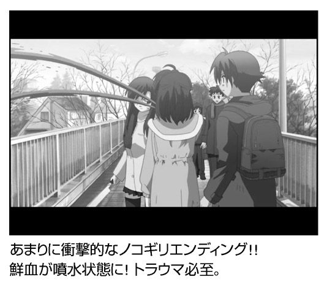
士道不覚悟につき切腹！
時は幕末、徳川３００年にわたる太平の眠りを黒船の来航が揺さぶった頃のこと。幕府転覆をはかる悪のキンノーがはびこる京の町を、「誠」の一文字をかかげて颯爽と駆け抜けた浅葱色の風。その名は新撰組！
と、幕末動乱の細やかな機微がバッサリ斬り捨てられていますが （勤王の志士＝後の明治政府の元勲たち＝悪の組織に！）、男女を問わず高い人気を誇っている武闘集団・新選組がエロゲーに登場です。クールな切れ者・土方歳三や悲運の天才剣士である沖田総司、三番組長にしてマンガ『るろうに剣心』でも大暴れしていた斎藤一ら、隊士たちの男前さは「キャラ萌え」の元祖と言えるもの。
そんな新撰組メンバーのほとんどが女性化して〝攻略可能〟 になりました。
新撰組が活躍した江戸末期には、すでに写真機が渡来していまして、いまでもウホ（略）いい男で通用する土方歳三や、「ゲンコツが口に入る」男こと近藤勇の生写真も残っています。「局長（近藤）を攻略したいかー？」と聞かれたら、迷わず「×」に走りたいところ。ですが、本作の内容は、そこまでエロゲー維新はしてなくて、可愛らしいキャラクターデザインは目をつぶらなくても実用に耐えます。いまどきの（４年前ですが）エロゲーらしく、オープニングにも主題歌が流れてやれやれ。
「一つ 士道不覚悟切腹よ 」「一つ 局を抜けたら切腹よ」「一つ 無断の金策切腹よ」「一つ 訴訟を受けても切腹よ」（中略）「パップラドンカルメで、切腹よ」「一つ お兄ちゃんって呼んでくれないと切腹よ」
そんな理不尽切腹ソングを、声優の長崎みなみさんがわざと（？）音痴に歌い上げて脳みそをかき回す衝撃は、出会い頭にジャイアンリサイタル の伝説を創りました。
マジメに史実に 忠実に切腹！
主人公は田舎から一旗上げるために、京の町へとやってきた浪士で、キンノーどもに絡まれていたところを助けられたのをきっかけに、新撰組に入隊します。女性ばかりの隊士たちと親しくなり、恋の華を咲かせながら、京都の治安を守るというあらすじ。
攻略できるキャラは、マゾ隊長の「近藤勇子」、デレないツンドラ副長の「土方歳江」、病弱メガネっ子の「沖田鈴音」、小学生ロリの「永倉新」、体力バカの「原田沙乃」、金髪巨乳の「カモミール芹沢」などなど。
そんなハーレムの中にあって、「斎藤はじめ」はひとりだけ男 です。ほかの隊士よりも色気を振りまいてますが、ちゃんと付いてます。攻略は「開眼・斎藤を漢にする」→「婦女子に興味なし」→「実はおまえが好きなんだぁ」もちろん挿入、『るろうに剣心』的にいうと「牙突」もあるよ！
ゲーム本編は、京の町を巡回して治安を守り（シミュレーション）、詰め所に帰ると隊士と会話する（アドベンチャー）という２パートを行ったり来たり。町の中で敵に出会うと「キンノーファイト」が始まり、行動によっては「治安」、そして「不条理度」なんて物騒なパラメータが上下して、進行に影響してきます。
きまじめな会話を選び、おとなしく治安を守っていれば、意外にも史実を踏まえたストーリーが展開していくことに。カモミール芹沢は暗殺され、新撰組にとって最大の晴れ舞台である「池田屋事件」もヤマ場として大いに盛り上がります。土方シナリオでも「池田屋での会合についての密談を盗み聞きするため、怪しまれないよう主人公とカップルらしくエッチする 」という絡ませ方がナイス過ぎ。各エンディングには、戊辰戦争での散り際まで描いたものもあり、初めの予想を裏切ってジーンと涙腺に来ます。こんな筆者は士道不覚悟につき切腹でしょうか。
新撰組は宇宙人？不条理につき切腹！
しかし、「だって、このゲームをやったから」「俺の知ってる新撰組と違う」などとふざけた選択をして「不条理度」をガンガン上げていると、際限なくバカ方向に突き進んでしまいます。たとえば１００を超えたら、新撰組メンバーの一部は宇宙人だといきなり判明 し、勝ちに勝ちまくって新撰組幕府が誕生！ あるいは新撰組が天竺にお経を取りに行ったり、立ちションに怒った大麻神が京都を襲ったり 、不条理シナリオへまっしぐら。
逆に不条理度を０にすると、渋い顔をしたホンモノの新撰組が「お前ら何者だ？」と出てきて、「私たち、実はコスプレでしたー！」 と逃げるエンディングに。『新ルパン三世』の最終回ですか？
プレイ１周はさっくり終わるとはいえ、メインのヒロイン（はじめちゃんは含まず）６人を落とした後にＥＸシナリオも出現して、やり応えはたっぷり。最初に発売されたバージョンでは、とことん多いバグのおかげで、何が起こるかわからない 〝不条理〟まで楽しめました。
そしてダメ押しに〝不条理〟なのが、お金を永久に借りる（決してゆすりやたかりではありません）ための押し借りクイズ。「ＰＣゲーム『はじめてのおるすばん』ゲーム初日に一緒にお留守番するのは誰？」といった一般常識なら、さらっと答えられるのですが、「永倉さんの後年の著『七ヶ所手負場所顕ス』において、永倉さんが近藤さんと離別した後に結成した部隊は？」 （答：靖共隊）なんて、『燃えよ剣』と『とってもひじかたくん』しか読んでない僕には歯が立ちません！ ジャンルも「京都」や「動植物」、「第三帝国」まであって異常に力が入っていますけど、そんな余裕があるなら......。
「バグだらけソフト売ったら切腹よ～」 と歌ってるユーザーも多そうです。
（Ｔ）
男性原理を否定した泣きゲー
アダルトビデオのようにセックス描写がすべてだったエロゲーの中で、ストーリーを重視する〝泣きゲー〟が重要な一角を占めるようになった原動力のひとつが、Ｋｅｙ（ブランド名）の『ＫＡＮＯＮ』（99 年）でした。その影響力といったら、エロゲンガー・樋上いたるさんの描く、人類の定義や骨格を塗りかえるデッサン を〝萌え〟のど真ん中に持ってくるムーブメントが起こり、Ｋｅｙ作品に熱狂する「鍵っ子」というファン集団も根づかせたほど。
そんな『ＫＡＮＯＮ』の流れを受け継ぎ、このエロゲーは再び〝泣きゲー〟ブームを巻き起こしたビジュアルノベルです。
〝泣き〟も破壊力を強めましたが......主人公がとことん役立たずで泣けてきます 。
そこは日本のとある小さな港町、季節は７月の夏。主人公の国崎往人（ゆきひと）は、人形を操る特別な「力」を持ち、旅から旅へとさすらっていたが、やがて行き倒れてしまう。そんな彼に、ひとりの少女・神尾観鈴（みすず）が話しかけて無邪気に笑う。彼女との出会いをきっかけに、この土地での暮らしが始まるのでした。
初登場のシーンで、往人は人形を操って旅芸人としての「商売」をしています。しかし、観客は子供ふたりだけで、すぐに興味を失われて走り去られてしまいました。いったいどうやって食ってきたんだ？ 全編を振り返ってみても、往人の生活力はゼロです。もらった「おこめ券」を換金すればいいのに。
また、ゲーム本編でも主人公が持つという「力」は、目立った使われかたはせず、せいぜい瀕死のヒロインを15 日前後は生きながらえさせるぐらい。
往人にかぎらず、本作では男性の影が非常に薄く、観鈴の父である橘敬介も、初期のシナリオでは出番が一回きり。また、エロゲー的に往人が男性的に振る舞う＝Ｈのある選択肢を選ぶと、エロいＣＧが見られる代わりにバッドエンド 。
エロゲー論壇の人たちは、これを指して「男性原理の破壊である」 と指摘していました。たしかに、往人の情けなさは二次元の女性さえ蹂躙することに耐えられない繊細な男子の台頭を暗示していたのかもしれません。
まあ、元々いたる絵は抜くに耐え（略）家庭用への移植に向いていたのでしょう、ＰＳ２版が10 万本以上のセールスを記録したのもうなずけます。
驚がくの「1000th Summer」の真相
しかし『ＡＩＲ』の突き抜け方は、男性原理の排除どころじゃありません。ここからは重大なネタバレにつき、ご注意のほどを。ほかのレビューにもネタバレがあった？ 狂犬にかまれたと思ってください。
序盤の「Ｄｒｅａｍ」編でヒロインの３人を攻略すると、「ＡＩＲ」編に突入して、主人公はカラスに転生。カーと鳴くカラスになるって、おい！ 人間だった頃は何をすべきなのかを知らず、カラスになると目の前に起こる悲劇に何もできない無力感を味わうという対比です。
それが終わると、いきなりはるか１０００年前にさかのぼった「ＳＵＭＭＥＲ」編へ。屋敷内に幽閉された翼人の女性「神奈」とお付きの女官「裏葉」、そして神奈といい仲になる警備隊長の「柳也」、３人に起こった出来事が明かされます。でも、やっぱり男の柳也は役立たず。 心の震える壮大なシナリオと共に音楽、特にオープニングテーマの『鳥の詩』は素晴らしく、聞きながら青空を見上げると『ＡＩＲ』のさわやかにして哀しい夏を思い出します。その青空はエロゲーの徹夜明け だったりしますが。
（Ｔ）
奈須きのこ文体に酔いしれろ！
アマチュアの自主制作による同人ゲーム業界で創られてきた多くの名作・佳作・エロゲーの中にあって、『月姫』の登場はひとことで言って「バケモノ」でした。イベントＣＧ枚数は１５０枚、グラフィック総数５００枚以上、そしてシナリオ枚数は５０００枚を超え て、すでに同人ゲームの枠に収まらない圧倒的なボリューム！
このエロゲーは、シナリオライター・奈須きのこ氏とキャラクターデザイン担当の武内崇氏のふたりが中心となって結成された同人サークル「TYPE-MOON」が一躍有名になった作品でもあります。ばく大な設定を詰め込んだテキストは非常に長めで、画面効果をカットして早送りしても、１本のシナリオを解くのに余裕で１時間はかかる。それなのに、すらすら読めてしまう奈須氏の独特の文体 に、本作の大ヒットはよるところが大きいでしょう。
まあ、「独特の文体」というのは、興奮のバトルに次ぐバトル、耳慣れない比喩や凝った言い回し、難解な造語（例：真 逆 ）、「お部屋をお連れします」 と日本語を改造......最後のはただの誤字ですが、まったりしたしつこさが、それでいてクドい！ と唸らせるトリップ感の中毒性 が高いです。
裏設定が魅力の吸血鬼ストーリー
さて、このゲームも「文章＋ＣＧ」のビジュアルノベルであり、テーマは日本人の伝統芸能になりつつある吸血鬼 。某ライトノベルの賞への応募作品も吸血鬼ものがきわめて多かったそうですが、『月姫』がその原因のひとつであるのは間違いないでしょう。
しかし、中学の頃からの夢を30 代のいまも書き続ける奈須さん の概念武装（奈須語）にはかなわないようです。
主人公である遠野志貴は、幼い頃に死にかけ、後遺症により「モノの壊れやすい線」が見える「直死の魔眼」を身につける。それからまもなく、遠野家の分家に預けられ、妹の秋葉とも離ればなれ。そして８年ぶりに志貴が実家に戻り、新たな生活に馴染もうと誓った次の日の朝のこと。街で白い服を着た異国の女性を見かけた彼は、突如として殺人衝動に駆られ、女性を17 の肉片に解体して殺害してしまうが......。
「私を殺した責任、とってもらうからね」
そんな刺激的な前ぶれから始まるストーリーは、ざっくり「月の表側」と「裏」の２種類に分かれます。「表」のヒロインのひとりは、志貴に殺されたはずの「アルクェイド」、通称アルク。その正体は吸血鬼ですが、生きるために血を吸う必要はなく、人間に仇をなす他の真祖を狩るために作られた兵器でもあります。
ということで、彼女の力を弱めてしまった志貴が、ともに猟奇殺人に立ち向かうのがアルク・シナリオ。これと、あらゆる魔物を狩る使命を負った「シエル先輩」シナリオの２本を合わせて「表側」ですが、正ヒロインのはずのアルクはこちら側しか出てこない 不遇ぶり。
そして、志貴の妹・秋葉やメイド姉妹の琥珀・翡翠ら、遠野家の人々を主軸としたのが「裏側」です。これも「表」のある人物が意外な役割で再登場して面白く、より悲劇的な色合いが濃くて泣けます。
『月姫』はファンディスクなど関連作品が多いことでも知られますが、そのキャラが戦う同人格闘ゲーム『メルティブラッド』のアーケードゲーム版への移植を担当したのが、『超クソゲー』読者には『デスクリムゾン』でお馴染みのエコール 。筆者もあらぬ期待をしましたが、とても良いデキだったのが残念。
（Ｔ）
大サービスの体験版!?
白陵大付属柊学園３年生の鳴海孝之は、受験を間近にひかえながら進路も決められずにいた。親友の平慎二は大学を、速瀬水月は水泳の選手として目標をめざしているのに......ふたりを見て焦りを感じながら、やはり周囲に流されてダラダラと過ごす日々。
ある日、夏祭りに呼ばれた孝之は、同級生の内気な女の子・涼宮遙と引き合わされる。水月は３人の輪の中に遙を入れようとするが、孝之はぎこちない遙に苛立ちを覚える。
そしてある日、孝之は水月に呼ばれて学園裏の丘に向かう。しかし、待っていたのは水月ではなく遙だった。遙に告白された孝之は、傷つけることを恐れ、同情から付き合うようになるのだが......。
遙の〝彼氏〟になりきれない孝之は、一度は別れようとする。が、水月と話すうち、自分から告白し直す決心をする。ようやく、孝之と遙は両思いに。
ところが、孝之がデートの待ち合わせ場所に遅れていくと、そこには車が突っ込み人が轢かれたらしいとのことで、警官たちや人だかりが。
孝之の耳には、無機質で事務的な警官の無線連絡が聞こえてくる。
「被害者氏名、涼宮遙。涼しいに宮、遙か彼方の遙、はい......」
こうしてメインヒロインが交通事故で生死不明 になるところで第一章は幕引き。途中に選択肢は出るものの分岐はまったくなく、ほぼ一本道で悲惨な現場に連れて行かれます。
ええっ、遙はどうなるの!?
当時、エロゲー雑誌の付録についた体験版には、３時間以上も遊べるこの章がまるまる収録されましたが、これでは寸止めよりも蛇の生殺し。おあずけを喰らったプレイヤーが通販サイトに殺到して、まんまとアージュの思惑に乗せられたことは言うまでもありません。
優柔不断すぎる主人公
第一章はあくまでプロローグにすぎず、本編は３年後の第二章から、なんの説明もなくスタートします。主人公の孝之が部屋で、水月と激しいエッチをしているところから......遙、彼氏を寝取られてます 。
アージュの公式サイトには「主人公＝プレイヤーという究極の一体感を提供」とありますが、第一章では美人にコクられても気乗りせず、やっと付き合い出したら別の女友達に誕生日プレゼントの指輪を買ってやってデートに遅刻。この主人公に一体化して感情移入できる青春を送ったプレイヤーっているんでしょうか。
究極のアンチ・感情移入エロゲーとして、この後も難易度はうなぎ登りに上がります。自動車事故で一度はリタイアした遙も、３年間の昏睡状態から奇跡的な目ざめ......とはいえ、まだ自分が置かれた状況を認識できないままとあって、家族公認の仲だった主人公に声がかかり、病院に通って彼女のリハビリに一役買うことに。
この時点で、主治医のモトコ先生が孝之を呼ばなければ、話はこじれなかったでしょうに ......こじれなかったらゲームにもなりませんけど。
こうして、主人公が〝現彼女〟の水月と、〝いまも彼女〟の遙の間でクネクネ迷い道 が始まりました。
高校生のときの優柔不断さは直るどころかパワーアップ。今度は三角関係でのクネクネだけに、迷惑の破壊力が及ぶ範囲もシャレになりません 。
「水月との付き合いは理屈だなんて思っていないし、あいつへの愛が偽りだとも思ってない」
「偽っているのは、遙への想いが消滅したという気持ちだ。オレは、水月と付き合うことで、遙への想いが水月への想いに移り変わったと、自分を偽っていた」
あの事故のショックで引きこもりを続けていた孝之を、いろんな意味での献身的な努力により社会復帰させてくれた水月への想いは確かなもの。けど、遙への想いは時を止めていただけ。どちらへの愛にもウソ偽りはありません。
両手に花を手放したくないってことですね 。
そんな主人公の未練に引きずられ、遙や水月の言動もどんどん怪しくなっていきます。ずるずると病院通いを続けて、「遙が目覚めた時には、オレたちの付き合いをちゃんと説明しよう」っていう水月との約束を先延ばしする孝之。そんな煮え切らなさを水月に叱られると、「オレの心は、遙と水月の間でふらふら揺れているのに......遙も水月も......オレに強い気持ちを向けてくる」とまた説明を先延ばし。
しかし、だめんず好きな女子らしく 、水月はしっかりもの。39 度を超える高熱を出して無理に遙の元に来た主人公を追っかけてきて、あわや修羅場か!?
「もし......もし......アンタが私の彼氏なら、とうの昔にひっぱたいて、引きずって連れ帰ってるところよっっ！」
水月、いい女だ！
ところが、遙とやり直すことを決めたはずの孝之君は、プレイヤーがどの選択肢を選ぼうと、水月を抱きやがります 。
いやーエロゲの主人公に対して殺意が芽生えたのは初めてです。はっはっはっ。
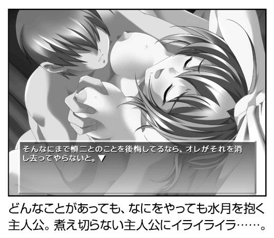

バッドエンドを見よ！
最初に攻略できるメインヒロインは涼宮遙、速瀬水月と遙の妹・涼宮茜の３人です。これに主人公を加えた４人の間でドラマは展開されるわけですが、４人ともしがらみを引きずって決断力に欠ける困った人たち なので、四角関係の解決はこじれるばかり。この中では常識人のはずの水月まで、孝之と破局した後に「孝之の傍にいたいだけなの」 「遙に会うことだって構わないのよ」と狂ったことを言い出すからタチが悪いです。
涼宮茜も２０００万パワー以上の妹属性は測定できるとはいえ、「姉さんが眠っていた間に、随分と楽しい生活をされてたようですね、鳴海さん」とグサリとイヤミを言うわ、水月が買ってきた花を捨てるわ......第一章のすなおに「お兄ちゃん」となついてくれた茜を返せーっ！
ハッピーエンドも３人分ありますけど、数十時間プレイしてると、このヘタレ野郎の幸せを望めるわけがありません。『君のぞ』（略称）の喜びは、実にバッドエンドにこそあります。
たとえば、二股かけてヨロシクやったつもりが、水月は妊娠し、遙の両親には「婚約していただければ、安心なんですけどねぇ」 と迫られる水月バッドエンドは蜜の味です。また、病院のベッドでヤッた後に遙が再び昏睡状態になり、お腹の中に赤ちゃんが......そして茜が孝之と結婚して子供を育てるという「茜妊娠エンド」は、バッドじゃないけど、どう見てもバッド 。もう少しハッピーにしてやりたい主人公であればねえ。
突き抜けたサブキャラたち
メインヒロイン３人のエンディングを見ると、そのほかのサブキャラたちの攻略が可能になりますが、重苦しいドラマが続く本編よりもいろんな方向に突き抜けています。第一章では、あれだけ萌え狂っていた３人のヒロインを、もはや見たくもなくなってる のが哀しくもありますが。
特に「泣きゲー」の感動をぶち壊し、精神的ブラクラと大好評だったのが穂村愛美ことマナマナ。遙と水月の板挟みに疲れた孝之が、逃げの気持ちで抱いた愛美はマジヤバな人で、留守の部屋に上がり込んで小銭やレシートを机の上に置いて嫌がらせ。抗議しに行った孝之が見たものは......家具が何ひとつない、殺風景な愛実の部屋 。ひぃぃぃぃ！
そして愛実は、スティーブン・キングの『ミザリー』ばりに孝之を監禁＆ 調教。やっと脱出した孝之は......水月と慎二に会いに行っても拒絶され、愛実の部屋にトボトボ帰ってきます。絶望してないで警察に駆け込まんかいっ！
プンプンと異臭を放つおぞましい愛にどっぷり浸かり、孝之は言われるままに女装して遊園地にふたりでお出かけ、しまいに豊胸手術を ......主人公のダメっぷりを心ゆくまで味わえるフルコースです。
その正反対にあるのが、孝之が通うバイト先のファミレスにいる大空寺あゆ。実を言うと、遙のいる病院に行くのがホントに気が重く、バイトが心のオアシスでした。ええ、あゆに「糞虫」と言われてどれほど心が救われたことか！
金髪美少女のあゆは「ツンデレの元祖」と言われてますが、口の悪さはその後の量産型とは比べものになりません。
「あんですとー！」
「猫のうんこ踏めっ」
という罵声＋知性あふれる口撃にほれぼれ。それにいちいち切り返せる主人公も頭が良さそうです。
優柔不断のくせに 。
「私はパンを焼いてあげました。だから、あなたも私にパンを焼いてください」「私は誕生日プレゼントをあげました。だから、あなたも私の誕生日にはプレゼントをください」
「私はこれだけのことをしてあげました。だから、あなたも私に同じだけのことをしてください。こう言えば、わかるかしら？」
こんなタンカを切って、孝之に依存気味だった水月を追い出したあゆ様、サイコー！ と惚れ直す筆者の中にも、だめんず孝之がいるのかもしれません。モテないけど 。
（Ｔ）

お兄ちゃん、ボクのこと奴隷にして？
エロゲーをかっこいいと思ってやってる人はいません。エアギターはまだ見世物になりますが、エアエロゲー（思い出しリプレイ）は周囲に悟られると危険です 。もしもノートＰＣをのぞき込まれて「二次元に移住した、進化した人類なんだね！」と誉められたら、マウントパンチして死人に口なし。秘密の楽園には拍手も声援も大きなお世話、黙って抜け。
そういう秘め事をポストモダン的に世間にさらしてくれた哲学者・東浩紀さんが（『ＹＵ‐ＮＯ』のレビューを参照のこと）お気に入りのエロゲー、それが『未来にキスを』です。東さんに股間を覗かれているようでソワソワしますね！
「お兄ちゃん、ボクのこと奴隷にして？」
主人公の笹本康介（名前変更可能）は、ひんぱんに外国に行く両親と離れて、従姉妹の飛鳥井霞の家に半年前から居候。そんなある日、霞の両親も長期旅行へと出かけ、康介と霞はふたりっきりの生活に。自分を「お兄ちゃん」と呼ぶ霞に「奴隷にして」と迫られ......。
ここまでお膳立てをしてもらいながら、さっぱり調教モノに発展するきざしがありません 。主人公は霞に迫られて家でやったり教室でやったりしますが、根っからの常識人でありエロゲ的にはヘタレ 。三角木馬もムチもふるわず、霞にエッチをせがまれてどっこらしょ、と応じる受け体質です。
性欲が枯れてるなら、エロゲ主役のオファーは断っていただきたい。
エッチを抜きにしても、「お兄ちゃん」と慕ってくれる妹（同年齢）との甘ったるい日々にどっぷり、という願いも夢のまた夢。新婚生活チックなやり取りを営むにしては、霞が底抜けにバカすぎます 。彼女は持ち物に名前をつける癖があり、ピコピコハンマーの「岡崎さん」 で叩いてもらえないと起きられません。料理が苦手なのは「ドジっ子」に回収できるとして、毎日学食に行けばハンバーグ、お兄ちゃんにもハンバーグを無理強い。霞ちゃんには「社会のルール」って奴を、調教よりも教育したいものです。
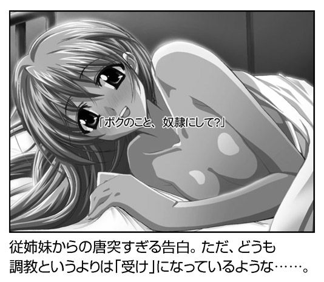
極端に記号化されたキャラたち
霞シナリオは「はみゅ」だの「はみゃ」だの萌えを愚弄した口ぐせ を見なかったことにすると、イベントらしいイベントはこれっぽっちも起こりません。だらだらと無駄話をしては「はみゅ」「はみゃ」の山なし落ちナシ。奴隷を奴隷たらしめる証の首輪に代えて、主人公が指輪を贈ってあげて霞は俺のものだよ......フツーのバカップルでした 。
ヒロインは霞の他に「柚木式子」、「守里椎奈」、「神澤悠歌」の３人がいますが、全員がほとんど共通ルートをたどり、ひとりクリアすればさくさく攻略できる親切さ。「長く楽しみたい」よりも「早く終わらせたい」 と思わせるシナリオの勝利です。
そして３人のキャラは、式子は「眼鏡っ子」、椎奈は「ロリ」、悠歌は「天然ボケの先輩（巫女）」と見れば分かる極端な記号化。しかし、東さんが大好きなエロゲ が一筋縄で終わるわけがありません。
そう、全員が「萌え」を通過した電波キャラ でした。
式子は酒の勢いで主人公を霞から寝取り、毎日部室に連れ込んではエッチを強要し、「わたしたちがわたしたちでいるために......恋人同士でいるのやめるんだもん」と、よくわからない理由を持ち出して別れ話 。しきりに「リレーション（人間関係）コントロール」と言ってますが、つまりは「アンタと関係を持って自分が変わりたくない」とのこと。
「また世界が新しくなって......俺と式子は本当の意味で出会ったのだ」とチャクラが開いた主人公 もあっち側の住人のようです。
椎奈シナリオでは、彼女の母親が実は年の離れた姉であり、椎奈は庭のししおどし（カコーンという竹筒の仕掛け）を永久機関だと言って執着し、主人公は椎奈ママ（姉）と川でバケツいっぱいのタニシを拾います 。ヒロインとエッチすれば途中経過はうやむやにできて結果オーライ、エロゲーって便利にできてますね。
悠歌さん先輩は「しょせん他人は理解できない」と語り続け、主人公も「（神様が）そもそも俺たちを別々に作ったのなら、他人のことも理解できないように作るべきだった」と染まりすぎ 。
脳内妻を持つオタクを全肯定！
この本はエロゲ論壇じゃないので深入りは避けますが、みさくらなんこつさんを原画に起用して哲学的議論を語らせたことは、歴史的な快挙かもしれません。たとえエロゲー的には「みさくらキャラがもったいねえ」 だとしても。
さらに４人をクリアした後に出てくる「Ｇｅｎｅｓｉｓ」に突入すると、それまでの展開がただの前フリでしかなかった と明らかに。式子が言うには「ひとりの人間を完全に所有するっていうのは、多分人間にはできやしない」......セックスフレンドってことでオッケー？ 恋愛をしても相手を完全に支配できない、家族も「システム」となって檻を作る、そこで霞ちゃんは「ボクの心の中にいるお兄ちゃんを支配したらいいっていうこと......？」＝「脳内夫（妻）」理論 へと達し、お兄ちゃん離れをして新たな人類への道へ。あるキャラは「システムの外にいて完全に自由なあなた」と言ってきますが、それってゲーム内の康介じゃなく、エロゲーマーの〝あなた〟を指してますね。
脳内妻と結婚して、他人の理解を求めずに引きこもる君たちってかっこいいよねー。そんなメッセージを送られてるとしたら、喜ぶより「バカにすんな！」 と激怒するんじゃないでしょうか。
（Ｔ）
「家族計画」という問い
本作のテーマは「家族」。シナリオライターである山田一（現・田中ロミオ）が追求し続けるモチーフであり、「家族」への賛歌と人と人が寄り合うことの尊さが謳われています。
本作は疑似家族の物語。他人同士がより集まり、一種の相互互助計画として「家族計画」を発動します。キャラクターはいずれもワケありの人々ばかり。天涯孤独の主人公「司」。マフィアに追われる中国人少女「春花」。幼い学生ながらホームレス暮らしを続ける「末莉」。麻薬売買に売春と金のためなら何でもこなす便利屋の「準」。とある理由から他人を拒絶する「青葉」。男に騙され自殺を図るも死にきれなかった「真純」。エキセントリックな言動を繰り返す謎の中年「寛」。様々な事情により、血の繋がった家族とは別れている人々ばかりですが、寛が父、真純が母。司は長男で青葉が長女。準と春花と末莉は次女、三女、四女となり、それぞれの目的のため「高屋敷」の名字を借りて「家族」となります。
これはエロゲーというよりはドラマのような設定 と言えるかもしれません。
軽妙洒脱な掛け合いは、これぞ山田（田中）節とでもいうべきもので、プレイ中は何度も爆笑することでしょう。声優陣の熱演もポイントで、比留間狂ノ介、十文字隼人（いずれも超大物声優の18 禁用変名）らベテラン男性陣が脇を固めていることで、安心して声の演技を楽しむことができます。もちろん女性陣の演技も声なしの時期があったなんて信じられないくらいのハマリ方で、上質のホームコメディを楽しめます。とはいえ、ワケありの人々が「家族」を演じているわけですから、少しずつ無理が出てきます。
感情的に相容れない者たちもいれば、フタをしたはずの過去からの手に掴まれる者あり。そして気持ちだけでは何ともならない金の問題と不穏な影の暗躍により「家族」に大きな危機が訪れます。
ひとり、またひとりと家を去って行く「家族」たち。「家族計画」における現実とは基本的に非情 です。共にいてやることができるのは、プレイヤーが選んだひとりだけ。そうでない人々は......彼女らなりに、自分の道を歩むしかありません。人が人と関わるのは半端なことではないのです。「家族」とは、なんなのか。血が繋がってさえいれば「家族」なのか。人と人が共にいることとはどういうことなのか。「家族計画」の問いは重く、そして根元的です。タイトル画面の「高屋敷」家の玄関は、最初は無人の寂しいたたずまいですが、ゲームを進めると、クリアしたヒロインがひとり、またひとりと現れ、徐々に賑やかになってきます。無人の家は単なる建築物ですが、人が集まることで安らぎと憩いの場所になります（逆もしかり）。人も寄り集まることで情が移り、家族となります。
挫折と苦しみ哀しみを知るからこそ人は人に優しくすることができますし、孤独を知るからこそ家族を尊く思えるのです。本作のキャラクターたちは、まあご立派な人々ではありません。どちらかというと負け組の類です。しかし、ご立派でセレブな人々のみが幸せになれるのでしょうか。「絵に描いたような家族」なんて本当に存在するのでしょうか。時に苦しみ、時に憎み、そして許し合えるからこそ家族なのです。
色々と書いてきたように見えますが、核心の部分はすべてぼかしてあります。05 年に出たＰＳ２版もありますので、いまからのプレイでも大丈夫です 。続編となる『そしてまた家族計画を』と合わせて、「家族計画」の問いに、あなたなりの答えを出してみてください。
（Ｙ）
おれは射精した
「これで『狩りの準備が整った』。このふたつの言葉が、痺れた脳ミソになにやら不思議な爽快感と充実感をもたらして......おれは射精した 」
主人公である「鷹征」は、元は体育大学に通う器械体操の選手。交通事故で脳に損傷を受けた鷹征は、のべつまくなしに射精し続けるという特異体質になってしまいます。１回の射精の量はヤクルト１本分。最低でも１時間に１回は抜かないと気が狂いそうになる。そんな彼がまともな社会生活を営めるはずもなく、怪しげな秘密クラブ「寒椿會」にハメ撮り写真を売ることで生計を立てることになります。
彼の次なる獲物はとある女子寮。屋根裏に「巣」を作った鷹征は、女子寮をはいずり回り、標的となる少女たちの秘密を探すのでした。
それなりのイケメンで器械体操の選手だった鷹征。普通に行けば光あふれる人生が待っていたはずが、闇のどん底へと転落します。選ばれた生まれや血の呪いであったり、何か超常的な力であれば救われもするのでしょうが、両親亡き後残されたのは、のべつまくなしに射精を要求する肉体のみ。この「のべつまくなし」は本当に「のべつまくなし」で、タイツの前がこすれたといっては射精し、香炉を見つけたといっては射精し、下着入れを漁ってもいない のに射精し、少女同士の会話が生々しいといっては射精し、甘酸っぱい思い出を回想しては射精する。
「おれは射精した」「おれは射精した」「おれは射精した」......これではまともには生きていけません。肉体を頼りにしてきた彼が肉体に裏切られたのです。
付き合っていた彼女を「壊し」てしまった鷹征は、放浪を続けて社会から逸脱します。「キ××イ」で「ケダモノ」で「規格外品」で愛やらなんやらを感じる部分を自分で外して捨ててきた ......と自嘲する鷹征。本当に「キ××イ」かつ「ケダモノ」で、完全に社会から逸脱していればなんの問題もないのですが、彼には正気の世界に留まらなければならない理由があります。それは妹である、ゆりあの存在。バレエ選手を志す彼女のために、鷹征は金を稼ぎ続けなければなりません。光と闇の間を揺れ動く鷹征の姿は実に人間くさく魅力的です。
「逸脱」の先にあるもの
彼の周囲にいるのは一癖も二癖もある人間ばかり。強烈なニンフォマニアで段ボールハウス暮らしという、鷹征同様に世間から逸脱している相棒のルーシー。元軍人でトラップの名手、「哀しみが大きすぎる」と繰り返す謎の男ゴドー。コミカルなキャラたちではありますが、鷹征のキャラ造形を見せられては笑ってばかりもいられません。ルーシーが本名で呼ばれると怒り出すのはなぜか、ゴドーは戦場でどんな体験をしてきたのか。彼らの過去に何があったのかを詮索（妄想）し出すというのは作者の術中にはまっているわけですが、こういう形で踊らされるのであればなんぼでも踊りたい ところです。
鷹征のターゲットとなる少女は、田舎から出てきた穏和な「及川まるみ」、プライドの高い「神足月湖」、明るく前向きな体育会系「古賀一枝」、アニメやコスプレが大好きな「藍原美宇」の４人。いずれもギャルゲーでヒロインを張れそうな逸材ですが、鷹征の手によって逸脱させられます。包皮切除や豊胸、乳首に風鈴をつり下げる、糞便と金粉を塗りたくっての金粉ショー、アルコール度数の高い酒を浣腸しての火炎放射 、女体盛りならぬ女体牛丼、全身にお灸などオリジナリティの高いプレイがてんこ盛り。
逸脱もここまで徹底すると笑うしかありません。
しかし、笑っているうちに、いつかもの悲しくなってくるのが本作です。
登場するキャラクターが、なんの深みもない、単なる男と女の形をした記号であれば、消耗品のように「笑い捨てる」ことができたでしょう。しかし、鷹征も少女たちもお互いに様々な事情を抱えています。月湖は兄に思いを寄せていますが、それは叶えられることはありません。美宇は自分には兄がいるといいますが、頼りの「兄」は実在しない妄想の産物 です。
鷹征は彼女らを逸脱させていく過程で、彼女らの心をむき出しにしていきます。それは計算ずくの行為であり、慎重に準備を重ねた手術めいたプロセスなのですが、触れあいめいたものが生まれ、気持ちが通い合いもします。
普通ならばここでハッピーエンドというところでしょうが、『逸脱』世界はそれを許しません。鷹征が跳梁跋扈したことで、寮には取り調べが入ることになります。鷹征は急遽逃げ出さなければならなくなったのです。調教を受け、逸脱することで鷹征に近づけたかに見えた少女たちですが、やはり彼の元に行くことはできませんでした。
ある者は「すてないで！」と叫び、ある者は「ごきげんよう、変態さん。どこぞで野垂れ死にあそばせ」と別離の哀しみを隠し、またある者は夢の終わりを告げられ......。鷹征は彼女らを完全に逸脱させることはできませんでした。
恐らくはそれが鷹征の最後の優しさであり、彼自身が完全に逸脱していない証拠でもあるのです。
「体の......肉の快感は忘れられなくても、愛情の方なら問題なく忘れられる」そうつぶやいて鷹征は夜の闇へと消えていきます。実にやるせない、苦いラストシーンと言えるでしょう。
体の交わりなくしては描けない大人のための物語というエロゲーの基本を『逸脱』は教えてくれます。逸脱しきれない男の悲しさを理解するにはなるほど18 歳以上の人生経験が必要でしょう。そうした意味では『逸脱』はとてもエロゲーらしいエロゲー なのです。
（Ｙ）
捕まえてコマせば給料ゼロ！
殺って、犯って、ヤリまくれ!! そんなキャッチコピーに恥じないどてらいゲームがやってきました。「地域制圧型シミュレーション」というジャンルとなってますが、「国盗り」＋「内政」＝エロ版『信長の野望』 と考えて間違いじゃありません。よりわかりやすく言えば89 年に出た『極道陣取り 』（マイクロネット）の跡目......よりわかりにくさを増してしまいましたが、『信長』にやり込み性で一歩も譲らない、アリスソフトの本気が恐ろしいところ。
世界中をその管理下に置こうとする女性上位主義国家・ウィミィとの戦争に負けた敗戦後のニホン。地域管理組合「わかめ組」の若頭だった主人公・山本悪司が故郷のオオサカに帰ってくると、ウィミィの占領政策によって、組は祖父の愛人が仕切ることに。収容所生活で弱った悪司は叩き出され、同じく地域管理組合の「奉仕青年団」の女性たちに救われます。
そんな命の恩人を、悪司はいきなり「コマし」。愛人に鍛えられたコマしテク で「奉仕青年団」の面々を手籠めにして部下にしちゃいます。
とてもひとりのキャラではこなせないシミュレーションゲームの作業量を省くために、ノドから手が出るほど欲しいのが人材です。悪司も男には給料を払いますが、女性はわけ隔てなく平等にコマし 。なぜって「愛欲」タイプにして寝てやれば、お金がかからなくて原価ゼロですから。とっ捕まえた女の子もコマせば部下になり、人材確保とエロの一石二鳥ですね 。
そうして部下にできるキャラクターの数も莫大で、特殊能力の「スキル」も様々。よってエロＣＧの枚数もたっぷりありますが、ほとんどの女性が一発目は合意ナシ 、快楽に身を委ねて堕ちていくので、純愛系の人は覚悟を決めて下さい。
さて、悪司はゆくゆくはオオサカ統一を目ざして自分のシマに隣り合ってる地域に攻め込んでいきます。数十人にもおよぶ部下を、ドラッグ＆ ドロップのマウス操作でさくっと配置できる操作性の良さは感動モノ。最大６人を送り込み、殴り、勝つ。何回か戦闘に勝てば、その地域は自分のモノとなります。
いろんな形で人生再チャレンジ！
しかし、やっぱり人材が欲しいので、全員ブチ殺すわけにはいきません。相手の体力を減らすと捕獲できる『ポケモン』方式なんですが、この調整がどうにも難しい。ただ腕っ節が強い奴をぶつけてもダメでして、スキルに「手加減」を持つ部下を連れて行きたいところ。
この「国盗り」セクションでゲットした部下を、占領した地域を経営する「管理」セクションでもコキ使います。戦闘力の高いキャラは内政が無能というルールでして、ここでは頭脳系キャラの出番です。管理をずさんにしてると、勝ちまくってるのに破産してゲームオーバー という筆者のような目に。
戦闘もできない、頭脳も良くない。そんなキャラは男なら拷問してお宝のヒントを吐かせたり、女性なら「調教の館」で仕込んで「売春宿」で働いてもらいます。人生を諦めない、これも再チャレンジのひとつの形でしょうか （違います）。
管理セクションでは、地域イベントも豊富で、ヒマをもてあました金持ちに、ら致して仕込んだ高級売春婦を提供する契約を結ぶ、放射能シャワーを浴びてパワーアップ など、数回クリアしてもすべて見切れないほどのイベントが。発売から５年も経ってるのに、いまだに廉価版とはいえ、アマゾンのエロゲーランキングで30 位以内に入っていますね。アリスのソフトは化け物か！
（Ｔ）
18 歳以上とおるすばん！
「作品中に出てくる人物（キャラクター）はみぃんな18 歳以上だからね！」
新幹線の中でノートＰＣを広げてエロゲーを始めた筆者も迂闊ですが、ろりろりな声で「過激な性的・暴力的表現・行為はぜったい、ぜったいにマネしちゃダメだよ！」と叫ばれて「恥で人は死ねる」 と知りました。
このゲームが発売されたのは、児童ポルノ法案（以下、児ポ法）が、18 歳未満に見える「絵やマンガ」を持ってるだけで処罰するよう〝改正〟する動きがあった頃で、本作はモロに国会に対して喧嘩上等 。もしも児ポ法が改正されていれば、筆者は獄中でこの原稿を書いていた ことでしょう。
いや、刑務所にエロゲーは差し入れできませんか。
「それでは、明日から娘たちをお願いしますね」
娘たち──というのは、おとなりの観月家の双子の姉妹、しおりちゃんとさおりちゃんのこと。主人公のきよし（本名プレイ）は、ふたりとお留守番して過ごすことになりました。しつこいですが、ふたりとも18 歳以上です。
夏休みの間、双子の姉妹は、毎日交互にひとりずつお兄ちゃんとおるすばん。世間は物騒だからね。初日はおとなしくて一途、でもちょっとトロイしおりちゃんだよ。
トイレに行ったら、「カマドウマが出てきて怖いよ～」と泣きつかれました。しょうがないなあ、一緒に行ってあげてもいいよ。その代わり、しおりちゃんがおしっこするところ、よく見せて......というのが、ぼく（きよし）の『お願い』。
世間よりお兄ちゃんが物騒です 。
「ぼくに、見られてもいいの？」
「じゃ、見せてくれるんだ？」えーと、どちらの選択肢にしても逃げ道がありません 。
主人公（きよし）はおとなりに通って双子をかわるがわる美味しく食べちゃうぞ、本当にそれしかない『あゆみちゃん物語』チックなやりゲーです。ただし、こいつは真性ロリというかペド なので、そのケのない人は心が悲鳴を上げるひとりＳＭが楽しめるかも。
ペド属性がなければ拷問
ある日、しおりちゃんはお兄ちゃんのアソコがおっきおっきしたのに好奇心をそそられ、おずおずとフェラをしてくれます。「男の人のセーエキも見るのが初めてなの......」と言いながら、お兄ちゃんは「いつもは、しおりちゃんの下のお口に出してるやつだよ」 とさらりと説明。
せんせー、ボク早退してもいいですか？
ふたりが非処女であるとわかったときは絶望の淵にたたずみましたが、「なにしろさおりちゃんとしおりちゃんの処女、ふたりまとめていっぺんにもらっちゃった日だからね」と回想されて、初めての相手は主人公（きよし）で安心 ......してしまったことに軽く自己嫌悪。
ブルマをはいたさおりちゃんのオナニービデオ（ひとりえっち用）を撮影したり、学校の制服を着てもらって制服プレイをするぐらいは大人でもやることだしセーフとしても、幼稚園時のスモッグを着て「最初で最後のえっちだね」とやるのはアウト でしょう。自分で書いてても、なんだかよくわからない線引きです。
それでも母娘が電話でコミュニケーションを取ってる最中にテレホンセックスを始めたときは逃げたくなりましたが、夏休みはいつかは終わるもの。お母さんの仕事の都合で、ふたりはお祖父さんの家に預けられることに。そして数日後、ウェデイングドレスを着たしおりちゃんがドアの前に。どうやら家族にバレていたようです 。
（Ｔ）
格闘ゲーム・ミーツ・エロス
格闘ゲームとエロは縁遠いようでいて実は密接な関係にあります。『ストリートファイターII 』の春麗から『ランブルローズ』の零子まで、格闘ゲーム＋エロというジャンルは十数年に渡り脈々と続いていることからもそれは明らかです。となると、18 禁のフィールドで格闘ゲーム＋エロを合体させるところが現れても不思議ではありません。
２００２年に発売された『バトルレイパー（以下、１）』では、巨大軍需産業「アッシュール」の改造人間を巡り、４人の美少女とひとりの男が戦いを繰り広げます。
『DEAD OR ALIVE』を思わせる豪奢で広いフィールドが戦いの舞台。本作はキックやパンチといった格闘技のほか、「Ｈ技」を駆使することができるのが特徴です。「Ｈ技」は相手にいやらしいことをする技で、大股開きのサブミッションや「胸もみ」「股間こすり」などバリエーションも様々。
「胸もみ」では（パッドの）レバーをぐるぐると回しつつボタン連打で相手の胸をもみ、「股間こすり」ではレバーを上下させつつボタン連打で股間を責め立てます。いずれも連打でダメージが増えていく ため、あたらおろそかにはできません。「胸もみ」「股間こすり」はゲージを消費するのですが、どうやら相手の状態がどうあれ技に持ち込める模様。５メートルほど離れているはずの相手が技の発動と同時に胸をもまれていたというわけで、こうなると催眠術とか超スピードといったチャチなものではないと断言できます。「Ｈ技」恐るべしと言えるでしょう。
パンツ丸出しでブッ放せ！
「Ｈ技」は３Ｄ格闘ゲームの最中にミニゲームが入るようなものですが、切り替えがスムーズかつ「連打」の部分が格闘シーンと共通しているのでさしたる違和感はありません。いやらしい行為というよりは、アイアンクローであったりゴッチばりの裏技 （プロレスの神カール・ゴッチは悪いレスラーを制裁するため、観客にわからないように尻の穴に指を突っ込んだという伝説がある）であると考えるのが妥当ですが、爽快なので問題ありません。
このほかにも「胸をもみしだいた後にジャーマン」というムーブもあり、格闘技に新しい地平 が開かれそうでドキドキ。「移動」ボタンを使うと、戦いをそっちのけにアイテムへ向けて突っ走るのですが、なりふり構わない姿が戦いの真剣さを際出たせています。もちろん「ダメージを受けると服がすっ飛ぶ」というシンプルなお色気やポリゴンによるリアルタイム操作のエロシーンもあり。ちょっとカッコイイ系の女性がパンツ丸出しでかめはめ波（裂空光波拳）をぶっ放すシーンなどはこれぞ３Ｄエロゲーとでもいうべき光景。実に元気のある作品 と言えるでしょう。
続編で上半身だけ脱がせることに成功！
続く『バトルレイパー２（以下、２）』は２００５年の発売。３年の歳月を経て、グラフィックは大きく進歩。スクリーンショットは家庭用ゲーム機の３Ｄ格闘ゲームと区別がつかないほどです。『１』は徒手格闘だったのですが、『２』は武器持ち格闘へ変更。大剣、カマ、手甲の爪など個性豊かな武器が火花を散らします。
舞台は「エターナル」と呼ばれる能力者が力のある武具「エレメント」を奪い合う近未来世界。「神凪島」の近くに隆起した新島に眠る「エレメント」を入手せんとするふたつの勢力と、封印しようとする主人公「九鬼悠樹」がしのぎを削ります。
本作ではシステムが大幅にパワーアップ。様々な条件でキャラクターのコスチュームを入手。着替えさせることが可能となりました。メイド服やチアガール、兜やネコミミといったパーツを組み合わせることで、美少女たちは可愛らしくも面白く変化します。
また、『１』ではダメージを受けると自動的に脱衣が発生していたのが、『２』では選択的に脱がせられる ようになりました。上半身と下半身の衣装に独立した耐久力が設定されたことで、「上段攻撃を集中して上半身だけ脱がせる」とプレイ内容が脱衣状態に反映されるようになったのです。
「胸もみ」や「股間こすり」といった「Ｈ技」は削除され、脱衣以外のエロ要素はゲームと分離されました。相手が数メートル離れていても問題ないザンギエフ以上の吸い込みだっただけに『バトルレイパー』世界では早速対策が講じられた模様です。エロ系の新要素として追加された「いたずら」は、プレイヤーが主人公を使っている場合に限り、気絶している敵にいたずらをはたらける というある意味卑劣なフィーチャー。マウスのドラッグで体勢を変えたり、クリック＆ ドラッグで胸を触ったり傷を癒したりといったアクションが可能となりました。
エロシーンでもこれは同様で、カメラアングルを変えたりドラッグしたりすることで、３Ｄ女体をよりリアルに感じられるようになったのです。ただ、「ストーリーモード」は物語性重視の方向に進んでおり、戦いがなかなか発生しません。戦いが始まったと思ったら、男対ゾンビ という脱衣の欠片もない戦いだったりするのでなかなかエロにはたどり着けません。
また、戦い方によっては充分脱衣させる間もなくＳＡＴＳＵＧＡＩしてしまったりするので、こちらもテクニックが必要。エロ要素と格闘要素が分離し、脱衣以外のエロの発生条件が厳しくなっているため、『１』と比べるとエロ的にはちょっと寂しい状態となっています。あちらを立てればこちらが立たず。インタラクティブなエロとゲーム性の融合は難しい課題ですが、18 禁ならではのジャンルだけに今後が期待 されます。
（Ｙ）
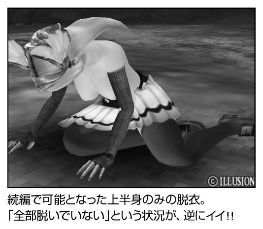
ポリゴン万歳！
ＰＣ‐９８時代を思わせるエロゲーヒーローがウインドウズに復活しました。その名はアクロバットおやじ。「アクロバットおやじ」は昭和20 年代生まれ。少なくとも50 歳近くにはなっているのですが、その精力は衰えることを知りません。今日も出会い系にメールを出してはギャルを捕まえています 。
本作はムービーを見るのがメインで、ゲーム的な難易度というのはかなり低め。交渉が上手くまとまれば、もうあとはアクロバットおやじの独壇場 です。
アクロバットおやじの必殺技はアクロバティックなプレイ。
「普通のプレイ→おやじニヤリと笑う→本領発揮」という流れがセオリーで、本気になったおやじはポリゴンを使った３Ｄムービーならではの荒技を披露します。
「必殺！ 怖痢弧堕砲（ふりこだほう）」 は、倒立状態から勢いをつけて合体するという技で、インパクト時に鐘の音のようなＳＥが鳴るのがポイント。「振り子打法」というネーミングにオヤジセンスが見え隠れします。「必殺！ 屁離黄婦多（へりこぷたー）」 は挿入した男根を軸にヘリのプロペラの如くグルグルと回転。風切り音と共に回転するおやじの姿に「ポリゴン万歳！」と叫ぶしかありません。「必殺！ 背貝一蹴駆使座死ノ足袋（せかいいっしゅうくしざしのたび）」 は、立木から吊した女性をブランコ状態にするばかりか、勢いをつけて一回転させてから合体する......というプレイというより荒行とでも称するべき大技。回転してくる女性を待ち受けて仁王立ち、空手でいうところの「息吹」の如く気合いを入れるおやじ、そのあまりの男らしさにほれぼれとしてしまいます。「必殺！ 門前鵜汚痴斗（もんぜん うぉしゅれっと）」 は水洗便器のタンクにある蛇口を肛門に突き刺し、そのまま水を流すという破天荒さ。ナチュラルに傷害罪で捕まりそうな気がしますが、相手がヤマンバなので問題ありません （ひどい）。
なんだかおやじだけが楽しい一方通行のプレイのような気もするのですが、アクロバットおやじがやることなので問題ありません。
子供の時間は終了です
近年のエロゲーではボイスも重要な表現のひとつ。本作ではおやじのボイスが重要な位置を占めています。
「子供の時間は終了です。ただの出し入れなど誰でもできるのですよ」「奥さん。今は私と貴方の秘密の時間です。正直になりましょう」「男は誰も乾いた砂漠でオアシスを探してさまよう哀れな旅人」必殺技の際に技名を叫ぶかけ声と相まって、彼が格好良く見えてくるのが不思議です。
そう、本作の主人公はあくまでおやじ。おやじは実に感情移入しやすいキャラクターです。おやじはハゲかつ眼鏡で、腹も出ているという、エロゲー的には最悪に近い外見です。こういったキャラは通常のエロゲーならヒロインをストーキングなどして主人公に手ひどい目に遭わされるのがオチなのですが、この手のシーンで主人公側に感情移入できなかったプレイヤーも案外多かったのではないでしょうか。少なくとも筆者は主人公より、追い払われるデブだったりおっさんだったりの方に感情移入していました。ゲームの中ですら非イケメンには安住の地はないのか と。アクロバットおやじは、そんなエロゲーマニアの念が、エロゲー開闢の時からたまりにたまって誕生したキャラに違いありません。
カッコイイエッジな作品もエロゲーなら、カッコ悪くて（褒め言葉）アクロバティックなおやじが登場する作品もエロゲーなのです。
（Ｙ）
ぶっちぎりバトルハッカーズ！
某エロゲーは「右手開放モード」 （メッセージの自動送り）まで付けて操作を極力省いてユーザーの右手を自由にしましたが、「んなこたー知るか、ゲームしろ！」と忙しくて抜くどころの騒ぎじゃないのがこのソフト。アクションに次ぐアクションのため、うっかり体力を消耗するとクリアできません 。
あらゆるネットが世界に張り巡らされ、現実と仮想現実との境目がなきに等しい近未来。ネット世界における人型戦闘マシン「シュミクラム」を操る主人公は、ハッカーとして過ごしていた。しかし、ハッキングチーム最後の大仕事として軍のデータベースに侵入したことから、その運命は大きく動き出す......。
そして一緒に侵入したハッキング仲間の親友がテロリストと軍の機体が争うとばっちりで死亡、主人公は真犯人を追うって導入ですが、遊び半分で軍にチョッカイ出すなよ！ 殺されても文句の言えないカレシの無鉄砲さには首をかしげますけど、この先もシナリオの矛盾を強引に突破していくので、気にしないことにしましょう。
アクションパートがアツクテシヌゼ
しかし、ゲーム本編はとにかくアツイ。選択肢を選んで物語を進める「アドベンチャーパート」と、合間に差しはさまれる「アクションパート」の２部構成となってます。そして後者がエロゲーという枠に留まらず「最強の２Ｄアクション」 というに恥じない仕上がり。見下ろし型の画面内で、シュミクラム＝ロボが縦横無尽に駆けめぐり、撃てよビーム！ 唸るぜドリル！
Ａ、Ｂ、Ｃの３つの攻撃ボタンに「近距離攻撃／遠距離攻撃／ショートダッシュ攻撃／ロングダッシュ攻撃」と間合いに応じた武器を割り当ててカスタマイズでき、攻撃を繋げる「コンボ」の追求もやめられない止まらない。遠くからガトリングでガリガリ削り、中距離に近づけばドテっ腹に炸裂弾をずがーんと叩き込み、接近戦に持ち込んでドリドリとドリル！ 擬音ばかりでＩＱ下がりすぎに注意です。
すべての武器には育成要素があり、鍛えて強くもなるし、使用回数が一定に達すると、新たな武器が開発可能に。そしてボス級の敵を倒すと、必殺技の「フォース・クラッシュ」もゲット。一度クリアしても、手に入った武器はそのまま持ち越されるので、序盤の弱っちい敵に波動砲！ という極悪プレイもできて、やり込みもバッチリ！
ストーリーとエロも充実！
お話を追っていくアドベンチャーパートでは、各ヒロインを攻略できるルートの順番がほぼ決まっていて、どの選択肢を選んでも変化のない（バッドエンドへの分岐はある）一本道です。といっても、主人公の視点が変化するにつれて徐々に真相に迫っていくザッピング仕立ての盛り上がりは、正直すごい。一方、アクションでも、後のほうになるほど敵も強くなっており、自分のシミュクラの成長と足並みそろえた、計算されたバランスには感心の一言です。
ヒロインは全員が美乳で、ぶっかける液の量もたっぷり。１周目で主人公のやり方がぬるい分は、悪役の「ゲンハ」が股間の凶悪なシュミクラム によって補ってくれます。さらにひとりを攻略するたびに「バイブ」や「野外露出プレイ」 などのエロアイテムが手に入り、主人公の本来の嗜好もフルバースト 。
家庭用として移植されたＰＳ２版も最高の出来栄えで、ゲンハ先生の声が『北斗の拳』のザコ声や次回予告で有名な千葉繁 になったのも辛抱たまりません。ヒャッハー！
（Ｔ）
ほのぼのとしたハートフル学園もの
ここは山と海に囲まれた陸の孤島にある群青学園。その放送部は崩壊しかかり、８人の部員も個々のレベルで崩れかかっていました。いまや、まともに部活に参加しているのはたったひとりというありさま。
主人公の黒須（くろす）太一は、そんな放送部の一員。説明書には「人並みにセクハラ大王」とありますが、本当は人並みじゃないセクハラ魔王 。自転車で走る女の子に「お尻のとこ、破れてパンツ見えてる」と嘘をつくのは可愛いほうで、「ぜひ子孫繁栄のお手伝いも小生めに一任してはいただけまいか」 と持ちかけ、不機嫌そうな元彼女には「自分が生理だからって人に当たるのはよくないと思うんだ」とフォローして......ないです。でも、脳内フォトシ○ップを立ち上げてアイコラ写真を作れる技術は羨ましいッス。
そうしたセクハラトークを通じて、仲間たちと触れ合い、切れかけた絆を確かめていく太一。彼が日課のように通うのは、もくもくと屋上で壊れたアンテナを組み立て続けるみみ先輩（宮澄見里）のところ。
また、明るい後輩の山辺美希にスカートめくりを仕掛けて、激しい技の攻防をくり広げます。その横では、美希とべったりの親友、佐倉霧の敵意がこもった眼差しが。
お嬢様の桐原冬子は会えばツンツンしているし、太一とはわけありげな支倉曜子はいつも忍者のように姿を隠している、と女性部員（ヒロイン）５人もバラバラでしたが、やがてみみ先輩のアンテナは完成。久しぶりに集まった８人の部員たちと共に、自分の名前から「Ｃｒｏｓｓ† Ｃｈａｎｎｅｌ」と名付けられた放送局の第一声として、太一は呼びかけます。
「生きている人、いますか？」
と見せかけて殺りくのループ
人類は滅亡していました。
残された太一ら８人は、閉じられた１週間を果てしなくループ（繰り返し）することになります。週の終わりには、また週の初めに巻き戻し。１周目でも、全員が「何かが欠落している」と、ほのめかされていましたが、２周目以降は、元々不安定だった人間関係が破たんし、次々と悲劇が起こります。
たとえば、人に気を許さないお嬢様の冬子は、使用人が消えた豪邸の中で栄養失調 になっていたと判明。それに気付いた太一が、彼女を家に引き取って同棲し、幸せなバカップルになれた......と思えば、太一を狙ったボウガンが彼女に命中し、さらに太一は屋上から飛び降り自殺。この冬子シナリオは救いがなさそうですが、他のルートでも彼女はほとんど餓死です 。
そして途中までは１周目とよく似た流れをたどりながら、７日目に完成されたアンテナが何者かにより壊され、険悪な空気になると太一は射殺され、薄れゆく意識の中で支倉曜子が残りの部員を皆殺し にしている光景が......（崩壊シナリオ）。
なぜ人類が消えたのか？ その種明かしを知った太一は、仲間たちを救うために、また「自分がひとり生きる世界」を理想として（なぜ他人といたくないのか、という真相もまた哀しい）ある決断を下します。そこで必然性のあるエッチを次々としていくエロせつなさ。『Ｆａｔｅ』作者の奈須きのこさんが「絶対に超えられない壁として君臨する作品」 （『竹箒日記』より）と絶賛していたように、本作のシナリオライター・田中ロミオ氏（他の代表作は『加奈』や『家族計画』など）による大傑作と言えるでしょう。
まあ、「バラバラだった部員たちの心は、少しずつ寄り添っていく」というハートフルな広告は大ウソでしたが！
（Ｔ）
「乳ゆれシステム」を搭載！
すでにタイトルですべてを伝えきってる企画モノＡＶのような本作ですが、キャッチコピーの「揺れる乳みて、癒されよう」以上の要素は本当になーんもナシ 。
〝泣きゲー〟の頃から内面を持ったキャラクターを数多く送り出してきたエロゲーの歴史も、昼間からエッチビデオをネタにして「僕にとっての最重要ポイント。それは『乳が揺れること』」と語る主人公の前では沈黙しそう。
そんな「御木元元」（みきもと はじめ）くんのごく一部が盛り上がっていると、後ろのドアが開き......画面には、アパート大家の中年太りオバサンが。さらに「岸辺一徳子」 という名は体を現した別のオバハンが出てくるにおよんでは、『Ｔｈｅ ガッツ！』を超える!? と恋より逃亡したい予感に胸はふくらみました。
しかし、元バレー選手の主人公は、後輩の「初瀬ちはる」に誘われて、ママさんバレーのコーチに雇われます。ちはる本人、その母、そして叔母の美人３人を付きっきりで指導することに。
簡単な選択肢を選んでいくと、各ヒロインとのエッチになだれ込むという会話アドベンチャーですが、途中の練習シーンなどには「乳ゆれシステム」 を搭載。メニューの「乳」ボタンを押すと、ぽよんぽよん乳が揺らせる癒しメソッドです。
大家のおばはんも揺らせるので、おふくろさん市場に引く手あまたかも。
（Ｔ）
伝説の腹バット
『激しくボテ腹！～センパイ、私のコ、認めてくださいっ!! ～』は、「Ａｃｍｅ」ブランドが「ＡｃｍｅＸ」に改名してからの第一作です。
ヒロインである奈美は憧れの先輩に近づくべくバレー部に入部するのですが、いたいけな彼女に寮の管理人、バレー部の顧問、ルームメイトの魔手が伸びます。近年のエロゲーでは「Ｃｔｒｌ」キーでメッセージを高速スキップできるのですが、本作では選択肢さえも飛ばすことができます。正確にいうなら、メッセージを飛ばす際に、カーソルが選択肢の上に乗っていると自動で選択したことになるのです。軽い気持ちで「Ｃｔｒｌ」キーを押すと、取り返しのつかないところまで物語が進行するので要注意です。
本作は徹底的なダーク路線であり、登場人物のほぼ全員が奈美の肉体を狙っています。奈美は攻め受けで言えば「総受け」。サブタイトルにあるような「センパイ、私のコ、認めてくださいっ!! 」という強気の発言など出ようはずもありません。
エロシーンの基本は地位をかさにきた強姦や多人数による輪姦。小動物のような奈美がどのルートを通っても犯される......という内容が女性視点で展開される様は非常に心細いものがあります。たとえるなら「足場が一切存在しない『マリオブラザーズ』」というか「床がすべてバリアーのドラクエ（当然トラマナはなし）」のようなもので、真の鬼畜は本作を女性視点にした「ＡｃｍｅＸ」であると言えるでしょう（褒め言葉）。
輪姦され続けた挙げ句に妊娠が発覚した奈美は、全裸で縛られた上に腹をバットで殴られます。エロゲー界に新たな「腹バット」 の伝説が生まれた瞬間です。このシーンはパッケージにも写真が載っているのですが、バットが彼女の腹を殴っているなんてかけらも思わなかった時点で、筆者の想像力は「ＡｃｍｅＸ」に完敗 したのです。なお、本作にはＣＧ鑑賞はあるのですがシーン鑑賞は存在しないので、「腹バット」を繰り返し見たい人は直前でセーブしてください。これはきっと、ショッキングな「腹バット」が回想に登録されてしまい恐ろしい目にあうことがないようにという配慮に違いないのです。
Ａｃｍｅに何が起こったのか!?
『ガンガン生射ち２ 学園妊娠物語（以下、２）』は、「Ａｃｍｅ」時代のデビュー作である『ガンガン生射ち！～お兄ちゃんボク、××しちゃうっ！～（以下、１）』の続編。初回版には『１』のディスクが同梱されているため、『２』から始めた人でも問題なくゲームを楽しむことができるのです。なかなかに粋な配慮ですが、『１』と『２』にはストーリー上のつながりがまったく存在しない模様。これはストーリーよりも「Ａｃｍｅ」ブランドの歴史を追え というお告げなのでしょう。
海辺のリゾートマンションを舞台に、家庭教師の主人公とふたりの少女のただれた日々を描くのが『１』。往年のメイビーソフトを思わせる一択肢（選択肢が登場するが、項目がひとつだけなので選択のしようがない）が頻繁に登場。カーソルの位置によってはゲームのかなりの部分をＡｃｍｅスキップで飛ばすことが可能です。本作は基本的に少女との合意の元で話が進みます。主人公が「レイプなんて絶対許されない行為だ」みたいなことを呟くのですが、半年ほど後に出された次回作が、レイプしまくりの『激しくボテ腹！』であることを考えると「Ａｃｍｅ」に何があったのか気にかかります。
『２』ではネットゲーム中毒 である俊雄の前に、未来人と名乗るトモミとサヤカが現れます。彼女らの未来では遺伝子操作のしすぎで出生率が低下したため、精子を集めに来たのです。
しかし俊雄の「相手が嫌がらないと興奮しない」という性癖により、悲劇の幕が上がります。
「ネットゲーム中毒」という特徴的なポイントが『１』の主人公と合致する俊雄。一瞬『１』『２』で主人公が同一人物であるという説をブチ上げかけましたが、『１』は「俊男」であるのに対し『２』は「俊雄」。さらに「俊男」が基本合意をモットーとするのに対し『２』の「俊雄」は合意だと嫌だ 、というとんでもないダメ出しをする男。やっぱり別人の模様です。
トモミを学校の運動部員１３０人以上に犯させ、浮浪者に犯させ、風俗へ沈め......と無茶の限りを尽くす俊雄。伝説の腹バットこそ登場しませんが、その所行は正に「鬼畜」。性のためなら鬼となる 、とても「ネットゲーム中毒」とは思えないアグレッシブさがストーリーを引きずり回します。筆者が同じように「ネットゲーム中毒」になっていた際は、鬼畜の限りを尽くすどころか、一日中悶々とゲーム内の金策を考えていたことを思うと、人間の構造が違うとしかいいようがありません。もちろん伝説のＡｃｍｅスキップ も健在。下手に「Ｃｔｒｌ」キーを押すと引き返しようのないところまでゲームが進んでしまうので前作に引き続き注意してください。
基本合意の『１』から一転して悲鳴と絶叫が響き渡るのが『２』。そのノリは『ガンガン生射ち』よりは『激しくボテ腹』に近いものがあります。ではなぜ、『激しくボテ腹２』ではなく、『ガンガン生射ち２』なのでしょうか。なぜ、主人公の名前が微妙に似ていて、両方とも「ネットゲーム中毒」なのでしょうか。これはやはり、『１』から『激しくボテ腹』への半年に何かがあった違いありません。「Ａｃｍｅ」の中で黒い何かが覚醒。魔闘気を鎧で抑える「ＡｃｍｅＸ」となったのです。この心の動きを訴えるには、正反対の作品を１パックにしなければならなかったのでしょう。この初回限定版は「Ａｃｍｅ」の歴史であり、「Ａｃｍｅ」ファンなら必携のアイテム といえるのです。
（Ｙ）
「泣きゲー」の次に来た伝奇活劇！
ひたすらセックスの快楽を求める「やりゲー」や、愛と感動をありがとうの「泣きゲー」の次に来るものは？ 04 年に発売されるやいなや、14 万本（初年度）を超える大ヒットを飛ばした『Ｆａｔｅ』が、ニッチな嗜好の細分化をくりかえし、混迷をきわめるエロゲー業界に新たな道筋を照らすものと思われました。
この『Ｆａｔｅ』は、『月姫』を送り出したTYPE-MOON（元はサークル名だったが、現在は有限会社ノーツのエロゲー用ブランド名）による商業作品の第一弾であり、伝奇活劇ビジュアルノベル。同人サークルとしては異例の成功をおさめた奈須きのこ・武内崇コンビがいかにして戦うか。圧倒的なボリュームの文章に加えて、ビジュアル面でも最強の進化をとげ、一気に老舗の大手にならぶブランドにのし上がったのでした。
しかし、その世界は少々乱暴に言うと、『週刊少年ジャンプ』のマンガのようなバトルロワイヤルなストーリー であり、哲学的な可能性や衒学的な語りを好んでしていたエロゲー論壇は少なからず、ぐらつきました。が、『少年ジャンプ』的なわかりやすさや怒涛の勢いは広く人気を集めて、ワンダーフェスティバルなどの即売会でも関連フィギュアが溢れかえり、エロゲーといえば『Ｆａｔｅ』一色に！
さて、奈須きのこ作品をプレイするに当たっては、ばく大な裏設定を持った世界観を楽しまないと大損こいてしまうでしょう。この『Ｆａｔｅ』世界では、「聖杯戦争」 と呼ばれる戦いが、遠い昔から続いています。それは手にした者の願いを叶えるという聖杯を、７人の魔術師（マスター）が与えられた７体の使い魔（サーヴァント）とともに、殺し合って奪い合う争奪戦。
やれマスターだサーヴァントだのと専門用語が次から次へと連発されて取っつきにくそうですが、手っとり早く言うと特撮番組の『仮面ライダー龍騎 』です。魔術師（仮面ライダー）がサーヴァント（契約モンスター）を召還して、最後の一組になるまで戦う。各サーヴァントは、ライダーキックに当たる宝具（必殺技）も持ってます。ついでに言うと、「主人公が戦いを止めさせるために戦う」というところも『龍騎』とソックリ。
しかし、サーヴァントの「未来を含む全時系列のどこかに存在した英霊」という設定が、〝バトル串団子〟（戦闘→勝利か逃避→また戦闘）のストーリーに二転三転する意外性を与えています。一度の聖杯戦争では、セイバー（剣士）、アーチャー（弓兵）、ランサー（槍兵）、ライダー（騎兵）、キャスター（魔術師）、バーサーカー（狂戦士）、アサシン（暗殺者）の７つのクラスに当たる英霊が一体ずつ参加するのですが、いずれも本当の名前「真名」を隠しています。
エロゲー版『仮面ライダー龍騎』？
彼らは（基本的には）歴史上の有名人物であり、正体＝弱点を知られることにつながるため、時にはマスターに対しても「真名」を伏せておく。それが土壇場に来て、実は......と切り札的に明かされる驚きがたまりません。
さらに、ゲーム中では各サーヴァントの能力をカード風にしたデータを見ることができるので、よくできたトレーディング・カードゲームをやってる雰囲気も。聖杯戦争は、壮大な〝ゲーム〟なのです 。
エロゲーとしてはともかく燃える！
そんな想像を絶する聖杯戦争に、主人公の「衛宮士郎」は巻き込まれます。魔術師としては半人前、しかし最強のサーヴァントと呼ばれる美少女・セイバーと共に。
魔術師たちの技の応酬やサーヴァントの超パワーが激突し、「当たるという結果が先にある」ゲイボルグなどの反則的な宝具が乱れ飛ぶバトル。映像表現も拡大や縮小、キャラの顔が挿入されるカットインや、鋼の重さとスピードを体感させる剣の効果音など「ビジュアルノベル」の頂点に立つ面白さですが......完ぺきに一本道です。
途中に選択肢が選べるものの、ひとつでも間違った方向に進むと、士郎はズダボロにされて即死 。どこで道を誤ったかを教える、ヒントコーナーの「タイガー道場」が実に40 種類！
一応はエロゲーなので、と思い出したようにエッチシーンも挿入されますが、必ず「魔力補給のため」という理由付き であり、いかにもしぶしぶで萎えます。エロの総合計時間より、士郎君が得意な料理のうんちくを語っているほうが長いぐらい。『クッキングパパ』ですか？
こんなにエロゲーとしてのハンデを抱えながら、大河ドラマ的な展開の中でテンションがひたすら上がり続けていきます。士郎とセイバーのコンビが最強、もっと最強、すごい最強、絶望的に最強 、と打ち切りマンガの最終回チックな戦いを続けて駆け抜ける１周目。お次は、士郎にとってはライバルの魔術師だった遠坂凛との、恋人というより戦友（とも）の絆を確かめ合い、あるサーヴァントのすごい秘密が明らかになる２周目（これも『龍騎』的です）。
そして３周目では......まあネタバレはここまでにしますが（ヒント：サーヴァントが次々と犬死に＋ヒロインが非処女 ）奈須きのこさんによる、冗長スレスレを気にもさせないシナリオに引っ張り回される快感に身をゆだねたいところ。ただ、プレイ時間が40 ～60 時間 ってのは、どうひいき目に見ても長すぎなんですが！
（Ｔ）
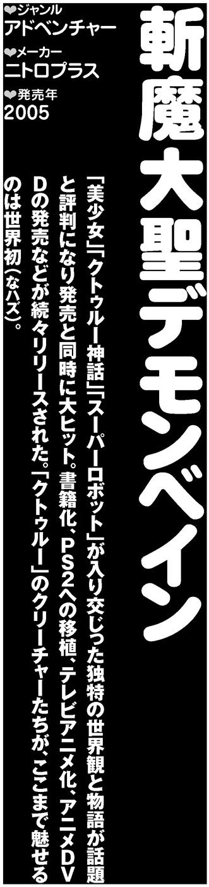
スパロボ＋クトゥルー神話！
「憎悪の空より来たりて」「正しき怒りを胸に」「我等は、魔を断つ剣を執る」「汝、無垢なる刃──デモンベイン！」
一応これでもエロゲーですから 、念のため。
ニトロプラスは好きなものを我慢しないメーカーです 。処女作の『ファントム』＝美少女＋暗殺者、２作目の『吸血殲鬼ヴェドゴニア』＝美少女＋吸血鬼でしたし、女の子が脱ぎさえすれば鉄砲をドカドカ撃ってドバドバ血が出ても許されると思ってんのかと。筆者も「いいぞ、もっとやれ！」 と煽るため、ニトロゲーをせっせと買い続けたものです。
そして、待ちに待った新作に付けられたジャンル名が「荒唐無稽スーパーロボットＡＤＶ」。ニトロゲーをエロゲーと勘違いしたことは一度もありません が、こういう見境のないニトロプラスがもっと好きになりました。
「スーパーロボット（以下、スパロボ）」と「ヒロイックファンタジー」の要素を融合──とうたっていますが、ファンタジーの中味は、あのクトゥルー神話。『黒の断章』のレビューでも軽く触れましたけど、クトゥルーものというと、人間はおぞましい化け物に出会って発狂するだけの虫ケラ以下の扱いになりやすく、「スーパーロボット」の正義や熱血とは正反対で明後日の方角にあります。
ココアに塩をぶち込むような組み合わせを、どうやって料理するんだ......？
そこではスパロボがクトゥルーの眷属をぶん殴ってました 。我が道を行きやりたいことをやる、これぞニトロゲー！
魔導書＝美少女がロボを召還
主役メカのデモンベインは「魔」（デモン）＋「滅ぼす」（ベイン）＝「魔を断つ剣」という名の、人類を守るために作られた最後の切り札。まさかエロゲーの解説で、登場人物をさしおいて、真っ先にロボを紹介 するとは思いませんでした。
デモンベインなど「鬼戒神」（デウス・マキナ）と呼ばれるロボットたちは、クトゥルー神話の魔物のように、魔導書をよりしろにして召還されます。人類の誕生以前に書かれた書物の写本から、白昼に透明な魔物に食い殺されたアラブ人が書きつづったものまで選り取りみどりですが、この古本が美少女へと変身！ 気の遠くなるほど長い歳月を経た魔導書は人格や肉体を得て魔術師のパートナーになる（セックスを含む）のは、素晴らしく説得力アリ。そこに突っ込むと物語が成り立たない ので納得しなさい、とナコト写本の名において命じます。
また、どの魔導書もそろいもそろって幼児体型ロリっ娘の姿 になるのも、暗き背徳の道に踏み込んだってことで前向きに受け止めたいもの。このごろは１万＋13 才＝合法というエルフの方程式も通用しにくくなってきましたが、「30 才まで純潔を守り通したロリコンこそが魔法使いになれる」という伝説もあることですし。
デモンベインの圧倒的な強さの源は、人（パイロット）と人外（魔導書）と機械（ロボ）の三位一体。別名スパロボと美少女とクトゥルーの三位一体とも言いまして、オタク＋滅ぼすもの＝オタクベインの名を贈りたいぐらいストライクです。
デモンベインの武装はスパロボ準拠であり、付くべきものや持つべきものはロケットパンチ以外は完ぺきに装備してます。で、クトゥルー神話との融合まで果たしていて、原作を知っていると味わい深さも格別。たてがみを振り回して敵を絡めとる網となる「アトラック・ナチャ」は、もともと黒い毛に覆われた巨大なクモ（の姿をした旧支配者）ですし、巨大な翼となる飛行ユニットのシャンタクは本来、馬のような頭を持ち鱗に覆われたコウモリのような生き物......もしも、原作のビジュアルを忠実に再現していたら頭がどうにかなりそう ですが、必殺技はもっと大変なことに。右腕に発生させた無限熱量を敵にたたき込む「レムリア・インパクト」＝「ムー大陸をぶつける」 という意味ですから、相手が気の毒になってきます。
正義のニート探偵・大十字九郎
ストーリーはクトゥルーの旧支配者的に言うところの邪道であり、我ら人類にとってはど真ん中に王道です。ほんの少しだけ未来、舞台は毎度おなじみの魔導都市・アーカムシティですが、どこかの第三新東京市のように派手にぶち壊される運命に......。クトゥルーものの、ひ弱いホラーゲームやエロゲが瓦礫の下敷きになって埋まってるんでしょうね。
また、アーカムシティは覇道財閥（正義）が支配し、現在の総帥は才色兼備の美少女・覇道瑠璃。デモンベインの戦闘中は「司令」として活躍し......まあ『勇者特急マイトガイン 』と『勇者王ガオガイガー 』を足した勇者シリーズな設定 。
そして、主人公は私立探偵の大十字九朗。といっても、依頼しに来る客もなく、いつも飢え死にしそうで教会のシスターにメシをたかり、デモンベインに乗り込んだ後はバトルに次ぐバトルで、ろくすっぽ探偵らしい仕事をしません。その点はモデルとなったタイタス・クロウ（小説『タイタス・クロウの事件簿』の主人公）も邪神と戦ったり、異界で超人になったり、とにかく本業をしない探偵だったことに忠実 ではあります。
が、ニートは正義の味方の証明です 。悪の秘密結社「ブラックロッジ」と戦う美少女が空から降ってきて、「妾（わらわ）は魔導書のアル・アジフ（ネクロノミコン）じゃ」と告白。
ウデを見こまれた九朗は、地下に隠されていた巨大なロボットと出会い、敵の破壊ロボとの戦いに巻きこまれる......。「パンをくわえた美少女と曲がり角で（略）」並みにありがちですが、王道って「パターン」ですから。
王道すぎるほど王道！
初めの頃のライバル・ドクターウェストは破壊ロボをひとりで作る大天才で、新型を作るたびにドリルが増える（最大４本）マッドサイエンティストです。不足しがちなドリル分の補充やニセデモンベインを投入 して心に潤いを与えますが、やはり哀しいまでにギャグの人。リゾート地になったインスマウスでは正義チームと宴会して、ちょい馴れ合いムード。
しかし、中盤を過ぎてからは怒濤の展開！ ブラックロッジの内部でも謎の「Ｃ計画」をめぐる陰謀が渦巻き、正義の要塞である覇道邸には、ふたりの魔導師が差し向けられ、デモンベインもぎりぎりの戦いを迫られる。さらに、拘束具で縛られながら無敵の魔導師「暴君」が九郎とアルの前に現れ、なぜか強力な二丁拳銃の「クトゥグア」と「イタクァ」を手渡して力を貸す......。
そして、デモンベインと敵の幹部・アンチクロスたちの１対６の戦い、アーカムシティの上空には黒々と「夢幻心母」が浮上し、ありとあらゆる「燃え」の核融合！ 「十字架に磔」シーンはスパロボ法で義務づけるべき ですね。
ニトクリスの鏡で羞恥プレイ
本作は、その人気の高さからＰＳ２にも移植され、テレビアニメ化もされましたが、エロゲ結界の外に持ち出しできない要素もバッチリ充実。やはり、粘液と触手がなくてはクトゥルーものとは認められません。
九郎＝デモンベインのパワーアップは、ほとんど魔物とのセックスによります 。蜘蛛のアトラク・ナチャには犯されかけ、女性化したクトゥグアとイタクァは２人（匹）まとめて３Ｐして服従させてしまいました。それぞれ熱いの（炎の精）と冷たい（雪男）ところに突っ込むのに魔力を振りしぼってましたけど、２匹の生みの親のオーガスト・ダーレス（クトゥルー小説家の大物）があの世で知ったらどんな顔をするんでしょうか。
ロリコンが宇宙を救う
また、九郎はアトランティス・トルネード・ストライク＝回転キックなど応用力が豊かですが、魔道具もしっかりエッチに役立ててます。お相手は伏せますが、「ニトクリスの鏡」（地獄めいた未知の世界に通じる門）を羞恥プレイに使った人物 はクトゥルー神話初でしょう。
そして、九郎とアルとデモンベインの三位一体は、ブラックロッジの総帥・マスターテリオンの駆るリベル・レギスと多元宇宙を股にかけた最後の戦いに。しかし、すべては「外なる神々」の使者にして代行者たる「這い寄る混沌」ことニャルラトホテップの書いたシナリオ通り......「終わりの始まりを。始まりの終わりを。永劫の終焉を。永劫の開演を──」の結末は実際にゲームを遊んで見届けてもらうとして、最後の決め手はアルと九郎との愛（ヒロイン３人分のルートがありますが、そのうち「アルのエンディング」として）。前半でアルが白い体操服と紺のブルマだとか、ハダカに男物のワイシャツを着て、九郎を調教したかいがありました。
「どうも俺、やっぱりロリコンだったみたいでさ 。あいつの綺麗な躰知っちまったら......」と這い寄る熟女の誘いを拒絶。ロリコンは世界を、いや宇宙を救ったんです！
（Ｔ）

ツンデレがひとりしかいねえ！
いつもはツンツンとしてつれないあの子。ふふん、俺に惚れてるのを照れ隠ししてやがるぜ......とママンをのぞく人類の半数につれなくされてるオタクの関係妄想 のような「ツンデレ」ブームですが、第一部がツン、第二部がデレの「ツンデレシステム」という思い切ったアピールをしたのは、この『つよきす』が宇宙初のエロゲーでしょう。
ツンデレの解釈は人によって「他人の前ではツンツン、ふたりっきりになるとデレる」であるとか「出会ったばかりのときは敵意を持っていたが、徐々になついてデレていくギャップがたまらん」（ラスカル？ ）とか諸説分かれますけど、本作の企画・シナリオであるタカヒロさんの解釈は一風変わってまして......どの定義をもってしても「ツンデレ」に当てはまるキャラは、ひとりしかいません！ 全員とにかく強気な女の子ばっかりやん！ まー『つよきす』＝「強気」＋「キス」らしいので看板にウソ偽りはないんですが。
お話は真っ当かつ王道な学園もの、平凡で何ごとにも熱くならない対馬レオが主人公。ぶらぶらと幼なじみたちと遊び、両親が出張中で独り暮らしを楽しんでいたが、親せきのスパルタお姉さん・鉄（くろがね）乙女が一緒に住むことになり、ビシバシしごかれる毎日に。彼が通う学校「竜鳴館」でも、強気な女の子達に取り囲まれ......とＭ男には理想の環境です 。
おはようからおやすみまで、ひとつ屋根の下に同棲してる乙女さんともなるようになるわけですが、彼女のキャラがもろにマンガ『武装錬金 』のヒロイン、津村斗貴子さん 。『少年ジャンプ』では「エロスはほどほどにしときなさい」と生殺しにされた絶対領域と、えええええろーす！ 毎日ッ！ 白濁液をぶちまけろっ！ 筆者の核金もサンライトハートです （混乱）。
非モテのフカヒレに萌えー！
このゲーム唯一と言っていい真性ツンデレが、通称「なごみん」こと下級生の椰子なごみ。レオたちを一応は「先輩」と礼儀正しく呼びはしますが、友達を作らず孤高を守り、なれなれしく近づくと「ウザイ」「キモイ」と切り捨て、やかましい相手には「潰すぞ」 と脅し。「つ、潰されてえ！」と右手で何かを握りつぶしてる人もいるのでは。
が、他人を寄せつけなかったのは、幼い頃にお父さんをなくしたファザコンの裏返しであり、転んでしまえばすさまじいデレの嵐。得意な料理をレオにふるまったり、どこでも求められたらヤッてしまい、生徒会室でも......けど他人が入ってきたらツンの鉄仮面を再びかぶるのですよ。見上げたツンデレ！
真性ツンデレじゃないが幼なじみのカニっち＝蟹沢きぬも、ちびっ子美少女だけどすさまじい馬鹿で、優秀な兄と比べられて実の親からも「出がらし」扱い。口汚いマシンガントークを必殺技として、小さい頃には友人のペットであるザリガニを食ってやがる ......これって〝萌え〟に対する挑戦状ですか？
そのペットを食われた被害者の鮫氷（さめすが）新一くんこそ、最大の萌えポイント！ 学校の成績はカニよりも悪く、得意なギターも人前では弾けない小心者。で、女の子に辛く当たられると、姉に虐められたトラウマが出る重度の童貞です 。
しかも、さわやかに「実はさ、実は......俺、ロリコンなんだ 。だからといって、どうってことはないんだよ？」と、『ドラゴンボール』のベジータの声で告白。いえ公式には違う声優なんですが、本人は格好良く「シャーク」と呼ばれたいのに「フカヒレ」と呼ばれる新一とは心の友になれそう。
（Ｔ）
往年の名作が復活......!?
『夢幻戦士ヴァリス（以下、ヴァリス）』は１９８６年に発売されたアクションゲーム。セーラー服（後にビキニ甲冑）のヒロイン「麻生優子」が剣を振るい、縦横無尽に活躍するという内容。
トップ声優である島本須美が声を担当、「ミス優子」として同名アイドルがデビュー するなど、80 年代を代表するゲームヒロインのひとりです。
そんな『ヴァリス』が、20 周年を控えて携帯電話版や復刻版などの形で活動を開始しました。携帯の着メロが初代エンディング曲『MissBlueに微笑みを』である筆者としては、否が応にもＰＣやＰＳ２などでの続編を期待してしまうのが人情。しかし、サプライズはとんでもない方向から訪れました。
『ヴァリス』は18 禁のアドベンチャーゲーム『ヴァリスＸ（以下、Ｘ）』として復活するというのです。エイプリルフールやデマ、実は版権無視の海賊版、完全催眠にかかっている、「遺体」の能力でヘンなものが見えている、エロゲー化されるのはディックの『ヴァリス』のほうだった、などあらゆる可能性にすがりましたが、どうも本当のことである模様。同社の『サジリ』に自虐的な『ヴァリス』ネタがほんのちょっと顔を出したときにも相当驚きましたが、今回の発表は青天の霹靂 としかいいようがありません。
ベースとなっているのは『ヴァリス』の『１』～『３』の設定。ログレスとメガスの野望を打ち砕くため、優子とチャム、ヴァルナが戦うというのが大筋ですが、「抜きゲー」的なノリとなっており、登場キャラにはユルくて百合百合なエロゲー向けセットアップが施されています。
陣痛イイイッ
『ヴァリス』前半の軸となっていた優子と麗子の相克ですが、『Ｘ』では援助交際の噂のある麗子に対し、優子が男性への興味から色々と話を聞こうとしたのが誤解されて麗子が絶望した！ 絶望した！......というマイルドチューン。
ふたなりになった麗子に優子がメロメロになり、みさくら語っぽく喘ぐあたりは実に00 年代ヒロインしています。ヴァルナは「夢幻界」を守る結界を張るため毎日股に棒を突っ込む儀式をおこなうという設定ですし、チャムはモンスターに好かれまくるあまりちょいちょい犯されているというキャラクターに変更されています。
輪姦やフィストは普通のエロゲーでは結構ヘヴィなプレイですが、本作では割と当たり前。本作のハードコアさは、はじけた方向へ向かっています。ログレスと融合して暗黒化した優子が「陣痛イイイッ （ボイスは『じんつういいいっ』）」と叫びつつモンスターを産み落としたり、ヴァルナが疾走するモンスター馬に犯されつつ「うゲぁパップッぐるううぐッッッ!? !? !? 」（原文ママ）と絶叫するなど、現実にはありえないシチュエーションですので、こちらとしてもあまり罪悪感を覚えずに済むのが有り難いところ。本編とのあまりのノリの違いに「これは別物」とサックリ割り切ることができるでしょう。
とはいえ、『ヴァリス』から即座に『Ｘ』では段階が不足している のではないでしょうか。
「ほのかにお色気の要素があるアクションゲーム」と「バリバリの抜きゲー」では、どちらが良い悪いではなく、あまりにもジャンルが違いすぎます。お色気も『ヴァリス』の重要なファクターですが、「それのみ」で５作品（しかも『１』～『４』は物語の前半部分を別視点で見るという内容なので実質２作）というのは先を急ぎすぎた感があります。今度は、どこで出るのか、『ヴァリス』の次なる展開が注目されます。
（Ｙ）
エロゲーハンター、秋葉に立つ！
平成18 年10 月末の某日──。
どこまでも果てしなく広がる青空の下に、駅の改札口から人々があふれ出る。さわやかに澄みわたった秋の空気を胸いっぱいに吸い込んだ僕に、ほほえみを浮かべる少女からさり気なく渡されるティッシュ。メイド服のコスプレから、メイド喫茶のビラ付きで。
僕はいま、エロゲーの首都・秋葉原にいる。
ふとゲーマーズの前に通りかかったとき、不意を突いて胸に想い出がよみがえる。友美、唯、あかり、乙女、ユーノ......僕の女性名のデータベースには、ギャルゲーとエロゲーのヒロインしか書かれていない。初雪のように真っ白なアドレス帳は大切な宝物なのさ。
すでに約束の時間はとっくに過ぎている。週末の人がごった返す中央通りを足早に急ぎ、待ち合わせ場所の、とある喫茶店へと到着する。
自動ドアの向こうに待っていたのは、３人の仲間たち。エロゲーハンター２号（八霧敬次氏）とエロゲー編集者（Ｈ氏）とエロゲー魔王（森瀬繚氏）。
「......フラグ、立たないよ」
エロゲー魔王・森瀬繚氏の挑戦!?
攻略できるヒロインのいないエロゲーなんてやってられるか！
「いや、エロゲーじゃありません。秋葉ルポです！」
ヤケになって暴れそうになったが、エロゲー編集者に羽交い締めされて、しぶしぶ良いことなんてない現実に帰る。もう僕らには仮想現実しか残されてないってのに......。
さっと目線をテーブルの上に走らせる。
『悪夢』『絶望』『逸脱』......武将が討ち取った首級を自慢するように、並べられたエロゲーたち。
しかし、彼ら（あえて距離を置く）の名誉のために言っておくと、「恥を知らぬ」ということではない。ルポを兼ねてエロゲーの買い出しまでやってしまうという、二兎を追って、二兎とも狩ってしまう立派なプロ魂の現れなり。エロゲーマーが肩にエロゲーを担いだときは用心せい。でも、せめてウェイトレスさんの眼から隠してね。
はや数ヵ月にわたり、エロゲーを狩り続けてきたエロゲーハンターふたりとエロゲー編集者の３人。そして今日は、誰よりもエロゲーを知る助っ人をお招きしていた。
森瀬繚氏。人呼んでエロゲーの混世魔王（さっき思いついた）。小学生のころからエロゲーをたしなみ、18 禁ゲーム雑誌『メガストア』にエロゲーの歴史を語る連載を持つ男。
その自宅は玄関から台所、はては寝室まで、ところせましとエロゲーが積み上がり、もし地震が起こればエロゲーに埋もれて大往生できる日本随一の豪傑である。
エロゲーフロアは隔離？
エロゲーハンター一行は「進めー進めーものどもー」と中央通りをばく進していく。エロゲーに賭けるオーラに気圧されてか、モーゼが海を真っ二つに割ったように、さっと退く人混み。
よっぽど僕らがキモかったのかもしれない。
そして通りかかった自動販売機の前には、群れる人だかり。
秋葉に慣れた人たちには、なんの変哲もない、秋葉名物の「おでん缶」に注目が集まっているのだ。
ここ１～２年、秋葉の再開発が進んだせいで、いままでの秋葉の住人たちとは違った、一般人がオタクの街に流れ込んできている。それを象徴するかのような人だかりに、筆者は身の引き締まる思いだった。
ギャルゲーでさえ抵抗を感じるような人たちに混じって、俺たちはよりにもよってエロゲーを買いあさろうとしている......。
しかも間が悪いというか、その週末はちょうど秋葉原エンタまつりの日。オタクもおびき寄せられているとはいえエロゲーとは微妙に折り合いの悪い家庭用ゲームや萌えアニメ寄りだ。
「ここから回っていきませんか？」
エロゲー編集者Ｈに背中を押されるままに、僕らはエロゲーを扱っている店舗に足を踏み入れた。体を横にしてすれ違うのがやっとの狭い階段をゆく。１階、２階......いくら上っても、エロゲー売り場に着く気配は一向にない。
「ほら、エロゲーフロアって決まって地下や最上階にあるよねー」
「隔離されてるんじゃない？」
ま、まるで汚物扱い！ 一瞬、『夜勤病棟』の比良坂大先生が降臨してしまったが、もしも途中の３階や４階にあったら、うっかり子供が迷い込んできて困るものね。
ようやく、目的地の７階へとたどり着く。そこは心安らぐ空間、エロゲーマーばかりが集う楽園。エロゲーをやっていても誰にも馬鹿にされない。ああ、僕はここにいても良いんだ。お金を出せばお客になれる資本主義って最高ですね。
エロゲーの棚から棚へ、蝶よ花よと飛び回るエロゲーハンターたち。
しかし、エロゲー探索については見るべき成果は挙げられなかった。最近発売された新品ばかりを扱っていて、そこには歴史を感じさせる空気がない。我々の喉をヒリつかせる、戦場の硝煙の匂いがしないのだ。エロゲーマーは苦いコーヒーが似合う、ハードボイルドなのである。
エロゲー買い放題、ただし５０００円以内！
そして僕らは、次なる狩場を求めてエロゲー売り場を離れることにした。もっとエロゲーを、一心不乱にエロゲーを！ と言いながら、またしても通りかかるおでん缶自販機の前。むらがるパンピーの人だかり......わずか１～２メートルしか離れていないのに、どうしてはるか遠くに感じられるのだろうか。
「やっぱし中古ショップ行かないといけませんね」
エロゲー編集者の問いかけにうなずく３人。きわめて短期間で作られては市場に出され、売れないものはすぐに淘汰されていくのがエロゲーのはかないさだめ。エロゲー売り場には、いつも「現在」しかない。
しかし、中古売り場では「現在」と共に「過去」も共存し、息づいている。エロゲーと同じ空気を呼吸し、エロゲーの来し方行く末に思いをめぐらせ、あわよくば運命のエロゲーと出会う。そのためには、中古売り場に行くしか手だてはあるまい。
すっ、とエロゲー魔王・森瀬氏が指さしたところは、最近になってビックカメラの傘下に入ったソフマップの一支店。そうだ、ソフマップって80 年代半ばまでは、ＰＣソフトのレンタルやってたなー、といまさらながら思い出される。あの頃は媒体がカセットテープだったので、ラジカセでダビ......げふんげふん。
意外なようだが、『超エロゲー』の執筆にさいしては、大半のソフトは買って持っていたので、ソフトの調達には大きく困らなかった。だってエロゲーが大好きだもん。それでも足りない分は、エロゲー編集者に調達してもらっていたのである。
この店でも、エロゲー売り場はかなり上の階に位置している。
エスカレーターの扉がゴゴゴゴ......と開いてゆく。
『ここで逢えるね』──なぜか昔のＰＣゲーム、『ソーサリアン』の音楽が頭の中で鳴り響く。うん、匂いでわかる。懐かしのエロゲー、エロゲーハンターに相応しいエロゲーとこのフロアで〝逢える〟と本能が告げている。
「これ見てください！ ４００円ですよ！」
「１００円のもあるよ！ エロゲー風呂に入れるって」
同じモノばっかり買ってもしゃーないのだが、逆に『Fate / Stay night』の初回限定版なんかは１万３千円をオーバー。人間の所得格差どころじゃない「エロゲー格差」の深刻さを目の当たりにした思いだ。
ここには、過去から現在へと積み重なったエロゲーの「地層」がある。親から子へ、子から孫へと受け継がれるエロゲー......エロゲーをすればするほど子孫を残しにくいのが難しいところだが、嫁入り道具にエロゲーをそっと忍ばせる親心。将来、「美しい国」に取って代わる「エロゲー立国」の担い手が、この中古売り場から旅立つかもしれないのだ。
で、エロゲーハンター２号はといえば、「やったー『絶倫アクロバット』を見つけたー！」とはしゃいでいるのを見て見ぬふりをした。
一方、エロゲー編集者の目は、レジの横にあったＤＶＤの棚に釘付け。これは「ＤＶＤ‐ＰＧ」といって、ＤＶＤビデオのチャプター機能を利用して、ＰＳ２やＤＶＤデッキでもプレイ可能というもの。ＰＳ２もれっきとしたエロゲーハードだったのだ！
ぞんぶんに戦利品をゲットしたエロゲーハンターはホクホク顔。
「そろそろ一休みしますか」
そんなわけで、一行はファミレスへと河岸をうつして、いつ果てるともしれない爛れたエロゲー談義に突入するのだった。
小学生が『ロリータ・シンドローム』やってもロリじゃない
──本日はお疲れ様でした！
探していたソフトも見つかって良かったです！ さっそく鼎談を始めたいのですが、まず、みなさんのエロゲーとの出逢いを熱く語ってください！
多根 （以下、Ｔ ）僕のエロゲー童貞喪失は、意外と遅いんですよ。ＰＣ‐９８時代の『同級生』がエロゲー初体験だったし。『マリちゃん危機一髪』をぐっとこらえて、『アルフォス』を買った硬派でしたもん。
森瀬 （以下、Ｍ ）それで言いますと、僕も『ＮＯＢＯ』とか『デルフィス』とか『ソニックブーン』とかをやってた硬派ですよ。
Ｔ 『ロリータ・シンドローム』は小学生のときにやってたんでしょ？
Ｍ 同年代の女の子の裸に興味があったお年頃なのですよ。だって、とても綺麗じゃないですか！
Ｔ 同い年だったら、ロリじゃないと（笑）。
──80 年代のエロゲー黎明期では、エロゲーの情報を得ていたのって、パソコン雑誌だったんですか？
八霧 （以下、Ｙ ）まあ『テクノポリス』も読んでましたけど、『週刊少年ジャンプ』にもエロゲーの記事が、しれっと載ってましたよね（笑）。
Ｍ 僕の場合は、雑誌より店頭で見たほうが先だったと思いますね。
Ｔ まだ18 歳未満禁止という制度がなくて、フツーにソフト売り場でエロゲーが売られてたというね（笑）。
Ｍ エロゲーをやる前に、『くりいむレモン』がありまして。あれに触発されて、関連ムックが何冊か書店に並び始めたんですね。
Ｔ あのビデオは、うちの高校でもわざわざ業務用のＵマチックのテープにダビングしてきた奴がいて、学校で鑑賞会を開いてましたよ（笑）。
──あはは（笑）。すごいですね！八霧さんとエロゲーとの出逢いは？
Ｙ 最初に手に入れたのは16 歳ぐらいでしょうかね。情報源は『ジャンプ』の特集や、『ファンロード』、エニックスの広告だったり。
Ｍ あの頃、エニックスのタイトルは、プログラムコンテストの発表を兼ねて広告を出してましたから。『マリちゃん危機一髪』なんかは、普通に目につくタイトルでしたね。
──みなさんはエロゲーのどこに興味を持たれたんでしょう？
Ｔ それ以前はねえ、〝△〟とか〝○〟とかを組み合わせた、古代の壁画のようなエロゲーしかなかったんですよ。ハドソンの人が一晩で作ったソフトとか（笑）。僕らはエロゲー貧困の中で育ったんです！
Ｙ 自分は、いわゆるアニメ絵が出るというところでしょうか。当時はパソコンでも、アーケードでもアニメ絵は多くなかったですし。
Ｔ 『女囚さそり』だのアニオタには厳しい絵柄のエロゲーを、ＣＳＫがたくさん出してたよね（笑）。
──八霧さんが初めて買ったエロゲーを買ったのはいつ頃なんですか？
Ｙ 高校生の頃だった......はずです。最初に買ったものは忘れましたが、『東京ナンパストリート』や『今夜も朝までパワフルまあじゃん（以下、パワフル）』をやってましたね。
──森瀬さんのエロゲ初体験は？
Ｍ 『ロリータ２』ですね、たぶん。自分のパソコンを手に入れたのが85 年でして、その１年前には既にソフトを買っていたので、消去法的にそうなります。
Ｔ １年前ってことは......友達の家でエロゲを？
Ｍ 平然と友達の家で（笑）。
Ｔ エロビデオ鑑賞会のノリ（笑）。
Ｍ いや、特に背徳感はありませんでしたね。その頃、友達の家に集まってアドベンチャーゲーム（以下、ＡＶＧ）を次々クリアしてたんですよ。その中の１本だったと思います。
Ｔ ポケモン感覚でゲームを集めていて、中にエロいのがたまたま混じってたってことですよね（笑）。
Ｍ 下半身への刺激が欲しければ、エロ雑誌とかで済むわけじゃないですか。８ビット時代は、ここまで市場が膨らむとは思いませんでした。
──黎明期の頃は、表現としては「エロ」というよりは「アダルト」だった？
Ｔ そうそう。当時、高価なパソコンを買えたのは「おっさん」だったんです。「団地妻」にロマンを夢見たり、『ナイトライフ』に「イタスカ？」と聞かれる人たち（笑）。
Ｍ 逆に、アニメ絵だとあの層にはダメなんですよ。
Ｔ じゃあ『道鏡』の平安時代風エロは、誰に対するサービスだったんだろうと（笑）。
Ｍ そこがエロゲ界のブラックホールというやつで、最初からアニメオタクをターゲットにしていたわけではないんですね。
Ｙ 絵柄やセンスが若者向けでなかったところが、徐々に世代交代が起きて、メインの世代が求めるものが出てきた......と。
Ｍ ちょうどＡＶＧがある種のブームになったのと同時期で、画像面でのパソコンの進化がダイレクトに反映するジャンルではありましたね。それにともなって、「アダルトゲーム」と差別化された「美少女ゲーム」が発達していったんでしょう。
──表現の可能性のひとつとしてアダルトがあった？
Ｙ 受け手側としては、そんな感じですね。作り手としては、また別の事情があるんでしょうけど。
Ｍ メーカー創設時のインタビューなどを読んでいると、割とまちまちなので、作り手側もひとくくりにはできなさそうですね。
──当時は、アダルトなものとしては、「浅く」「広く」「種類があった」という認識で間違いはない？
Ｔ 正しいでしょう。おっさん向きの「アダルトゲーム」は、需要がないとわかって早々に淘汰されていきましたよね。
Ｍ 早々に消えましたねー。ＨＯＴ‐Ｂが、わりと後まで微妙にあの路線でしたが（笑）。
Ｔ アニメ絵で抜けないアダルトゲーム愛好者って、その後どうしたんだろう？
Ｍ お子さんに買ってあげたＰＳ２で、実写のＤＶＤ‐ＰＧを遊んでますよ（笑）。
Ｔ ＰＳＰでもエロＵＭＤが出てましたし、ソニーはふたつもエロゲーハードを出してるんだ！と声を大にして言いたい（笑）。
──あはは（笑）。
Ｍ 85 年にはアニメ絵タッチの展開が始まってましたね。
──その代表格のようなソフトはなんですか？
Ｍ やはり、『天使たちの午後（以下、天午後）』シリーズということになるでしょうか。ＰＳＫの『ロリータ』シリーズもアニメタッチではありましたが。
──やはり、それは当時の『くりぃむレモン』シリーズやロリータマンガ雑誌の影響といえますか。
Ｍ 少なからずあったとは思いますが、何気に『サンデー』のラブコメや『マガジン』の寸止めマンガの影響もあったのではないかと考えていたりします。『天午後』の場合、リニューアルパッケージが思い切り富本たつや（筆者注：『くりぃむレモン』の『亜実』シリーズのキャラクターデザイン）タッチの絵でしたけど（笑）。
Ｔ あれから20 年後でもアニメ絵タッチのエロゲーを飽きもせずにやっている僕らって、『くりぃむレモン』の呪いをかけられたまんまなんですよね（笑）。
ＰＣ‐９８時代は「アダルト」から「恋愛ゲーム」への転換期
──エロゲー市場が明確に形となったのがＰＣ‐９８時代だと思うんですけど、そのきっかけとなったソフトってあるんでしょうか？
Ｔ 『同級生』と『同級生２』でしょう（キッパリ）。
Ｍ ターニングポイントとしては、『同級生』シリーズでしょうね。
Ｙ ですかね。
──１作目は10 万本も売り上げたんですよね。すごい話だと思います。
Ｔ 『同級生』がエロゲーの家庭用移植の先鞭をつけましたよね。
Ｍ というか、それ以前の作品で家庭用ゲーム機に移植しうる作品がなかったといいますか（笑）。
Ｔ 『同級生』の初代も、家庭用に移植できたのが不思議な下品エロなんだけどなあ（笑）。
Ｍ 先鞭という点では『卒業』が先立っていたとは思います、成年指定でこそありませんが。
Ｔ あのゲームがなかったら、原画の竹井正樹さんも『同級生』シリーズに参加してなかったでしょうね。
──『同級生』のエルフといえば、『ドラゴンナイト』シリーズはどうだったんですか？
Ｍ パソコンゲームとしてはかなり評判になった作品ではあります。『Ⅲ 』では一般向けとアダルト向けが両方出ていますし。エルフのブランドの安心感を育てた作品が『ドラゴンナイト』ですね。
Ｔ 『IV 』はバツグンにいいゲームだとは思いますけど、初代のイージーな作りは『ウィザードリィ』ファンとしては、あ然としましたよ（笑）。
Ｙ まあ、当時のエロゲーのＲＰＧで「やってれば解ける」というのが珍しかったですから......。
Ｍ その一方で、『同級生』ってびっくりするほどに前宣伝とかは、まったくなかったんですけど、それでも発売当日、かなりの数のユーザが飛びついているんですよ。そのあたりは、『ドラゴンナイト』あってのものであったとは思います。
Ｔ エルフはＡＶＧもＲＰＧもＳＬＧもなんでもやってましたもんね。エロゲー業界のスクウェア・エニックスですよ（笑）。
Ｍ 『同級生』はエロゲーマーではなかったプレイヤーまで、評判を聞いて飛びついたタイトルでして。「恋愛ゲーム」に飛びついたんですよ。恋愛のある高校生活シミュレーションというか。僕としては、あの作品はシステム的に『ガンパレードマーチ』のルーツだと思っています（笑）。
Ｔ ナンパゲームを作ったつもりが恋愛ゲームとして評判良くてビックリした、とエルフ社長の蛭田さんも言ってましたよね。
Ｍ なんたって、（実行ファイル名が）「NANPA.EXE」ですから！
Ｔ 家庭用移植に色気がない頃の「蛭田節」は脳天気で最高だったですよ（笑）。
──なるほどー。「エロゲー」市場が定着した理由はなんでしょう？
Ｍ パソコン用の一般ゲームのシェアが家庭用ゲーム機にガンガン奪われたことが大きいとは思います
Ｙ 絵が綺麗になった、ゲームの規模が大きくなった、色々なジャンルが出てきた......あたりでしょうか。
Ｍ それだけなら、一般向けでアニメ絵の大規模なＡＶＧでも良かった感じになりそうですが、とにかくＰＣ用ゲームが売れなくなってましたから。（エニックスの）『アンジェラス２』なんかは「出しても売れないから」という理由で引っ込められてしまったわけですし。
Ｔ ＰＣ‐９８市場はエロゲーが狂い咲きしていたおかげで、一般ＰＣゲームが売れてないことに気付きませんでしたね（苦笑）。
──市場が出来上がり、『同級生』が大きなターニングポイントだったとして、「それ以前と変わったところ」ってどこなんでしょう？
Ｍ 発売本数が増えすぎた！ というのが最も変わった点ではあります。昔はその気になれば毎月発売タイトルのほとんどを買えたんですが、これだけ本数が増えてしまうと皆、財布の口をキツく閉めるようになりましたね。
Ｔ あと、パソコン通信が普及し始めて、エロゲーの「地雷」警報があっという間に全国に伝わるようにもなりましたしね（笑）。
──販売本数が大きくなったことは、エロゲーが「市民権」を得たということにもなるんでしょうか？
Ｙ マシになったんじゃないですかね。ライン文で１本ずつ線を引いて美少女を描いてた頃は、「アングラ」という意識が強かった感じですから。『ロリータ・シンドローム』で助けた女の子とハッピーエンドになればいいものを、わざわざクローンを作っちゃう業の深さというか。
Ｔ その黒さが『クローンドール』に受け継がれるわけですよ！ 初めっから美少女に惚れられてるのにクローンとやりまくる屈折ぶりに。
Ｙ そこから飛んで、ＰＣ‐９８時代に「なんか普通と変わったものがあるジャンル」という意識になって、ビジュアルノベルあたりでエロゲー信者を自認する人々が誕生したんじゃないですかね。
Ｍ 妙な動きとしては、『雫』『痕』後にバッドエンド論なるものが展開されたことはありましたね。バッドエンドをやたらとありがたがるユーザーがどっと増えて、草の根ＢＢＳで盛んに議論が交わされまして。ラストのありようという点では、物語性についての激しい議論であったと言えますね。
Ｔ そこにＫｅｙの『ＫＡＮＯＮ』にハマったユーザー、いわゆる「鍵っ子」が加わってストーリー重視の流れができて、後に２ちゃんねるでも「葉鍵板」（筆者注：葉＝リーフ作品のファン）が作られ、ネットでもエロゲー論壇が誕生するほどのムーブメントに成長したわけですしね。
ウィンドウズエロゲは「キャラ立ち」が主流に
──では、その流れのままウィンドウズ時代に入りますが、ウィンドウズ時代に入ってから、それ以前のエロゲーとの違いっていうのはあるんでしょうか。
Ｍ 「泣きゲー」の提唱による変種ユーザの登場もありましたね、それこそ『Ｋａｎｏｎ』の前後から。
Ｔ 『加奈～いもうと（以下、加奈）』のあたりですね。まだ田中ロミオ氏が萌え的に正気を失ってなくて『Ｃｒｏｓｓ Ｃｈａｎｎｅｌ』を作ってなかった頃といいますか（笑）。
Ｍ 『加奈』も「感動」を前面に押し出して露出してましたね。
Ｔ エロゲーは埋没すると売れないので、エッジを立てるのが死活問題ですしね。
──いま、一番支持されているエロゲーのジャンルってなんですか？
Ｍ とりあえず、学園を舞台にした作品は、いまもって最大派閥であると聞いています。
Ｔ いま、「泣きゲー」系って人気あるんですかね？
Ｍ 泣き系というのは、もう廃れてるでしょう。というか、そういう区別がなくなりましたね。物語的なジャンルよりも、キャラクターの属性的な区分がもっぱらされていて。
──物語から「キャラ」の時代に？
Ｍ それとはまったく別に、ハードエロ鬼畜系があるんですが、ほかにも「声優買い」「キャラ属性買い」と並存している感じですね。『TECH GIAN』と『メガストア』を両方とも読むと、棲み分けがわかりやすいですよ。
Ｔ はっきりと表紙の汁の量で区別が付きますよね（笑）。
Ｍ 「オカズゲー」と「恋愛ゲーの二分化」と言いますかね。
Ｔ 『ＫＡＮＯＮ』と『臭作』への二極化ですか！
Ｍ いや、Ｋｅｙとたっちー（筆者註：凌辱専門ブランド）の二極化ですよ！ ひどいたとえですけど（笑）。
Ｙ 白箱と黒箱とも言いますね（編註：純愛系は白い外箱に、鬼畜系は黒い外箱に入っていることが多いため、そう言われることがある）。
Ｔ この『超エロゲー』では、ひとりのレビュアーが両極端ともやってるんですけどね（笑）。ともかく、最近はストーリー重視も主流ではないと。
Ｍ ここ最近で、発売後にシナリオが話題になって後から売り上げが増えた作品は少ないと思いますよ。
Ｔ キャラ立ちは萌え戦闘力が高い奴が殺し合って生き残るという『シグルイ』ルールですよね（笑）。
Ｍ 言ってしまえばユーザーへのツカミと、身もフタもないですが広告費が大きいんですよ。毎月、大量のタイトルが出るので「数ヵ月後に評判を見て買えばいい」という思想がなくなりまして。そうなると、事前情報の中でも最もわかりやすい部分であるところのキャラクターの外見と紹介文、つまり属性に判断基準が委ねられるという。学園モノってのは、同じデザインの制服だから一覧表示での比較がしやすいんですよ。
Ｔ マンガの『ベルセルク』の世界でやってるような奴隷売買みたいですよね（笑）。
Ｍ 最近は、発売前にキャラ投票をやってしまうメーカーもあるというのが、この辺りの反映でしょう。
──ゲームをやる前に人気が決まっちゃうんですか!? （笑）
Ｍ ああ、そうだ、ＰＣ‐９８時代と現在の差異ということで言えば、いまのゲームは昔に比べると戦隊物になりましたね！
Ｔ まあ隠れキャラで６人目も出ますしね。
Ｍ まさに戦隊物です（笑）。昔のイタリア仮面劇と一緒で「パンタローネ」と「スカラムーシュ」と「コロンビーヌ」という感じに、ユーザーが知っている役どころ、キャラ付けがされている。仮面劇って登場人物がいつも一緒で、物語だけ入れ替えられるんです。
──なるほど！ もはやエロゲーは伝統芸能化しつつあると（笑）。
Ｔ でも、外見だけは毎年新モードを発表するパリコレだよね。なんか格好いいというか、生きててもいいという気がしてきましたよ（笑）。
エロゲーハンター、理想のエロゲを語る
──歴史を振り返りつつ、お話をうかがってきたのですが、もうファミレスのメニューも朝食メニューになってきました（笑）。シメにかかりましょう！ いままでのお話を踏まえて「これからのエロゲーはこうなる」という予想と理想を、みなさんにお聞きしたいなと。
Ｔ 予想と理想込みで、やっぱ『同級生３』だよね（笑）。もう10 年待ってますよ！ 実際、出来のいいマップ探索型ＡＶＧってこの頃は見ないですしね。
Ｍ 『下級生』シリーズはどうなんですか？
Ｔ 『下級生』シリーズは何回もヤれるじゃないですか？ 僕は１回こっきりの後腐れない関係が好きなので趣味に合わないんですよ（笑）。
Ｍ あー、僕はあの『下級生』で瑞穂が部屋に来た回数をカウントしてくれるシステムにシビれました！
Ｙ （マップ型ＡＶＧは）女体クリックと同様の絶滅ジャンルになるんでしょうかね。
──なるほどー。次、八霧さんは、どうですか。
Ｙ うーん。どう思うかというと、ずっと混沌であって欲しいなと。エロゲーは話にしてもシステムにしても、なんでもありじゃないですか。 学園純愛がある横で、筋肉とか食糞とか腹バットとかがあって、アクションゲームもありつつＲＰＧもある『サークルメイト』とか『好き好き大好き』みたいな狂気度の高い話であったり、『Ｔｈｅガッツ！』とか『逸脱』みたいなエロ抜きで語れない話であったり、『家族計画』とか『Ｆａｔｅ』みたいなストーリー重視であったり。あと、『ＶＧ』みたいな格闘ゲームやアクションもある。
Ｍ （マンガ『究極超人あ～る』の）春風高校的なパラダイスですね。
Ｙ そういう、いろんなものが出てくる混沌であってほしいと。単純に「エロゲー」というくくりでいうなら、『Ｄ．Ｃ．』と『アクロバットおやじ』が同じジャンルだというのはスゴいですよ。なんたる懐の深さかと。
──確かにそうですね。同じエロの土俵とはいえ（笑）。
Ｔ さて、森瀬さんはどんな二次元に永住したいですか？
Ｍ うーん、素晴らしき二次元ワールドについては概ね八霧さんがおっしゃる通りでして、僕が何か言うことはないのですが。まあ、メーカーに申し上げたいのは、20 年後にいろんな人が苦労するから契約関係はきちんとしておいてくれと。それと、ユーザーに向けては、いろんな人の生活がかかっているので、あまり悪評を声高に流してくれるなと（笑）。
Ｔ 同業者として懸念を表明してどうするんですか（笑）。モップや鉛筆をもっと突っ込め、とか具体的な要望はないんですか？
Ｍ 割と淡白なんですよね。黙っていても凄まじい分量の作品が生まれては消えていくので、その中から適宜チョイスしていけばいいという。
──では、逆にこれからどうなっていくと思いますか？
Ｍ どうなる、というほどに先が読めるものでもないのが難点ですね。ただ、これほど懐が広い物作りのジャンルもありませんので、続いていって欲しいと切に思います。
Ｔ 僕は『同級生３』を待ってますよ！
Ｍ では、僕は対抗して『ロリータ』シリーズの最新作を！
Ｙ ＤＳってエロゲー向きのハードなんですけどねえ。お医者さんゴッコの手術はタッチパネルで、エンディングはあのままで。
Ｔ そうだねえ......（延々と話は続く）
──読者のみなさんはまだ引き返せる！ ということで（笑）。
その一
日本国憲法では「表現の自由」が保障され、ホラー、ＳＦ、サスペンス......と、家庭用ゲームも「自由」を満喫しているようです。
しかし、それは「自由」の半分──上半身でしかありません。
『エロゲー』は水面下に煮えたぎるリビドーを引き受けた「表現の自由の下半身」なのです。身もフタも無い「オカズゲー」から誕生した『エロゲー』が、やがて「恋愛ゲーム」へと舵を切り、「泣きゲー」の波を起こし、「ツンデレ」ブームの発信地点となったのは、決して偶然ではありません。
きれいは汚い、汚いはきれい。セックスという「汚い」ことを封印すると描けない「きれい」もある。上半身と下半身を共に備えた『エロゲー』は、真の意味での「表現の自由」を形にしているのかもしれません。......と言いつつも、「こんな自由は無いだろ！」と突っ込みたくなるエロゲーの混沌ぶり。だが、それがいい。
さあ『超エロゲー』の生みの親である日本国憲法とLet's Fuck!
多根清史
あとがき
その二
名作あり話題作あり、情念が詰まった『超エロゲー』の世界はいかがだったでしょうか。いまのエロゲーの世界は「バトルロワイヤル」状態となっています。感性と感性がぶつかり合い、どの感性が生き残るかを競い合う。これはコンテンツ業界にとって、ものすごい無形の財産となっているのではないでしょうか。
近年は「ツンデレ」という概念が生き残り、エロゲーの枠を越えた様々な方面に子孫を残しています。感性・概念・キャラクターの属性・ムーブメント・ジャンル......次に生き残るものは、はたしてなんでしょうか。それを予想する間もなく新作が出続ける。考えてみればこれほどの贅沢もないでしょう。
これは一時的なものなのか、それとも後の世から黄金時代として語られるものなのか。共にエロゲーを見続けようではありませんか。
八霧敬次
多根清史
1967年大阪生まれ。
いまはなき『ピュアガール』でエロゲー記事を書いたこともあるフリーライター。趣味は本名プレイ。
八霧敬次
1976年名古屋生まれ。
おはようからおやすみまで、エロゲーを見つめるのが仕事。どの時代のエロゲーも好き！結婚して！
カバーイラスト
みさくらなんこつ
美少女イラストレータ・マンガ家。「ファミ通キャラクターズ」（エンターブレイン）の扉絵などのイラストやマンガのリリースを精力的におこない、最近では雑誌『CONTINUE』（太田出版）で、コラムとイラストを連載中。また、みさくら氏自らがゲームを作り上げるプロジェクトもおこなっている。
http://www.harthnir.com
引用画面出展一覧
P008『カスターズ・リベンジ』、P009『ナイトライフ』、P010『団地妻の誘惑』、P011『オランダ妻は電気ウナギの夢を見るか？』、P012・013・014『道鏡』、P015・016『マリちゃん危機一髪』、P017・018『ロリータ・シンドローム』、P019、『EMMY』、P020『EMMY2』、P021・P022・P023『東京ナンパストリート』、P024・P025『天使たちの午後』、P026『177』、P027『マカダム』、P028・P029・P030『カオスエンジェルズ』、P031・P032・P033『韋駄天いかせ男麦子に逢いたい』、P034『きゃんきゃんバニー』、P035『はっちゃけあやよさん3 わたし、逝っちゃったんです。』、P036『はっちゃけあやよさん4 セクシーオリンピック』、P037『はっちゃけあやよさん5 ピカピカの小惑星』、P038・P039・P040『魔浄理子』、P041『電脳学園』、P042『電脳学園II ハイウェイ・バスター』、P043『電脳学園III トップをねらえ！』、P066『ドラゴンナイト』、P067『ドラゴンナイトIV』、P068・P069・P070『電脳学園III エイプハンターJ』、P071・P072・P073『48夜物語』、P074、P075、P076『あゆみちゃん物語実写版』、P078『河原崎家の一族』、P079・P080・P081・P082・P083『リビドー7 インパクト』、P084・P085・P086『吉永サユリがやってくるヤア！ヤア！ヤア！』、P087『EVE burst error』、P088・P089『同級生』、P090・P091・P092『クローンドール課外授業』、P093『Only You 世紀末のジュリエットたち』、P095、『雫』、P097『黒の断章』、P099・P100『学園ソドム～教室の牝奴隷達～』、P101『脅迫』、P102・P103『Piaキャロットへようこそ!! ～We've been waiting for you～』、P104『この世の果てで恋を唄う少女YU-NO』、P114・P115・P116『かおりクライマックス～エクスタシーアイドル誕生～』、P117・P118『To Heart』、P119・P120・P121・P122・P123『夏色デスティニー』、P125・P126・P127・P128『Theガッツ！』、P129『終末の過ごし方』、P130・P131・P132『KANON』、P133『悪夢～青い果実の散花～』、P134『絶望～青い果実の散花～』、P135・P136『夜勤病棟』、P137・P138『School Days』P139・140・141『行殺 新撰組～人斬り美少女アドベンチャー～』、P142・P143『AIR』、P144・P145『月姫』、P146・P147・P148・P149・P150『君が望む永遠』、P151・P152・P153『未来にキスを』、P154・P155『家族計画』、P156・P157・P158『逸脱』、P159・P160『大悪司』、P161・P162『はじめてのおるすばん』、P163『バトルレイパー2』、P164『バトルレイパー』、P165『バトルレイパー2』、P166・P167『絶倫アクロバットおやじ』、P168・P169『バルドフォース』、P170・P171 『CROSS CHANNEL ～to all people～』、P172『ママさんバレー乳ゆれまんせー』、P173『ガンガン生射ち！』、P174・P175『激しくボテ腹！ ～センパイ！ 私のコ、認めてください！～』、P176・P177・P178『Fate ／ stay nights』、P179・P180・P181・P182・P183『斬魔大聖デモンベイン』、P184・P185『つよきす』、P187『ヴァリスX』
超エロゲー
2006年11月28日 印刷
2006年12月４日 第1刷発行
著者 多根清史、八霧敬次
編集人 林幸生
発行人 落合美砂
発行所 株式会社太田出版
〒160-8571 東京都新宿区愛住町22 第3山田ビル4F
03 （3359）6262 / 振替 00120-6-162166
ホームページ http://www.ohtabooks.com/
装丁 木庭貴信（オクターヴ）
TANE,Kiyoshi/YAGIRI,Keiji 2006
本書の無断複写・複製・転載・引用を禁じます。
ISBN4-7783-1052-7
Special Thanks to: 森瀬 遼